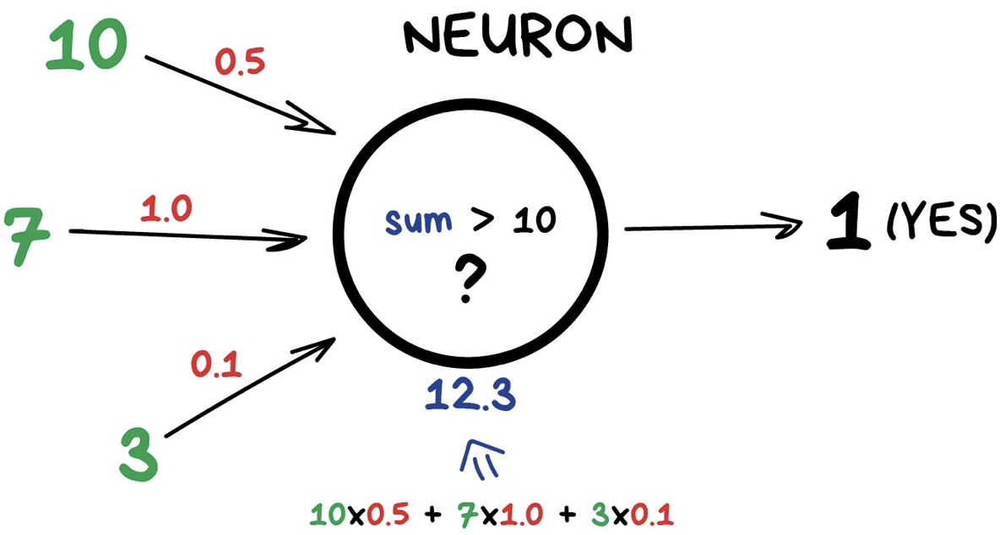
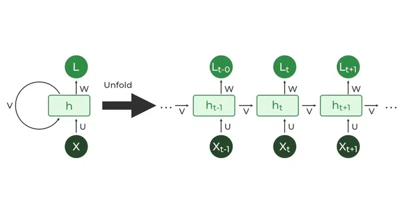

7. Data Modeling
Yi-Ju Tseng
資料分析步驟
- 資料匯入
- 資料清洗處理
- 資料分析
- 資料呈現與視覺化
- 建模
資料建模
- 機器學習簡介
- AutoML
- 深度學習簡介
- AutoKeras
- (補充資料)scikit-learn - ML with Python 常用套件
- (補充資料)keras - DL with Python 常用套件
前置作業
為了成功從https (加密封包傳輸)下載資料，首先取消證書驗證
什麼案子可以用AI?
- 有資料
- 學的會
- 學的好有很大的貢獻
- 對AI接受度高
最後….
做個Proof of concept看看會不會成 (快速好用的軟體)
資料建模
- 機器學習簡介
- AutoML
- 深度學習簡介
- AutoKeras
- (補充資料)scikit-learn - ML with Python 常用套件
- (補充資料)keras - DL with Python 常用套件
Machine Learning 機器學習簡介
機器學習簡介
從輸入資料學習新資訊，用來預測事件或協助決策
- Classical Learning 傳統的機器學習
- Supervised learning 監督式學習
- Unsupervised learning 非監督式學習
- Ensemble Method 集成方法
- Stacking
- Bagging
- Boosting
- Reinforcement Learning 強化學習
Classical Learning 傳統的機器學習

監督式學習 Supervised learning
有答案的資料
- Regression 迴歸：真實的’值’（股票、氣溫）
- Linear Regression 線性迴歸
- Support Vector Regression (SVR)
- Decision Tree Regression
監督式學習 Supervised learning
有答案的資料
- Classification 分類：分兩類（P/N, Yes/No, M/F, Sick/Not sick）/分多類 (A/B/C/D)
- Logistic Regression 羅吉斯迴歸、邏輯迴歸
- Support Vector Machines 支持向量機
- Decision Trees 決策樹
- K-Nearest Neighbor
- Artificial Neural Networks 類神經網路
- Deep Learning 深度學習
非監督式學習 Unsupervised learning
沒有答案的資料
- Clustering 分群
- Hierarchical clustering 階層式分群
- K-means clustering
- Artificial Neural Networks 類神經網路
- Deep Learning 深度學習
- Association Rules 關聯式規則
Ensemble Method 集成方法
- Bagging
- Bootstrap aggregating，套袋法
- Random Forest
- Boosting
- XGBoost
- LightGBM
模型驗證
- 在完成模型訓練後，為了驗證模型訓練的好不好，需要用一組獨立的測試資料，來做模型的驗證
- 在訓練模型前，必須特別留意是否有保留一份獨立的測試資料，並確保在訓練模型時都不用到此獨立資料集
- 資料集可分為以下兩種：
- 訓練組Training set, Development set: 讓演算法學到知識
- 測試組Test set, Validation set: 驗證學的怎麼樣
模型驗證方法
資料建模
- 機器學習簡介
- AutoML
- 深度學習簡介
- AutoKeras
- (補充資料)scikit-learn - ML with Python 常用套件
- (補充資料)keras - DL with Python 常用套件
AutoML
AutoML
- AutoML為快速建模的工具
- 市面上有許多AutoML的套件，包括
pycaret scikit-learn則是在python中執行機器學習模型訓練的重要套件
載入所需套件
載入資料
cancer = datasets.load_breast_cancer()
X = pd.DataFrame(cancer["data"], columns=cancer["feature_names"])
y = pd.DataFrame(cancer["target"], columns=["target"])
print(X.head()) mean radius mean texture mean perimeter mean area mean smoothness \
0 17.99 10.38 122.80 1001.0 0.11840
1 20.57 17.77 132.90 1326.0 0.08474
2 19.69 21.25 130.00 1203.0 0.10960
3 11.42 20.38 77.58 386.1 0.14250
4 20.29 14.34 135.10 1297.0 0.10030
mean compactness mean concavity mean concave points mean symmetry \
0 0.27760 0.3001 0.14710 0.2419
1 0.07864 0.0869 0.07017 0.1812
2 0.15990 0.1974 0.12790 0.2069
3 0.28390 0.2414 0.10520 0.2597
4 0.13280 0.1980 0.10430 0.1809
mean fractal dimension ... worst radius worst texture worst perimeter \
0 0.07871 ... 25.38 17.33 184.60
1 0.05667 ... 24.99 23.41 158.80
2 0.05999 ... 23.57 25.53 152.50
3 0.09744 ... 14.91 26.50 98.87
4 0.05883 ... 22.54 16.67 152.20
worst area worst smoothness worst compactness worst concavity \
0 2019.0 0.1622 0.6656 0.7119
1 1956.0 0.1238 0.1866 0.2416
2 1709.0 0.1444 0.4245 0.4504
3 567.7 0.2098 0.8663 0.6869
4 1575.0 0.1374 0.2050 0.4000
worst concave points worst symmetry worst fractal dimension
0 0.2654 0.4601 0.11890
1 0.1860 0.2750 0.08902
2 0.2430 0.3613 0.08758
3 0.2575 0.6638 0.17300
4 0.1625 0.2364 0.07678
[5 rows x 30 columns]拆分成訓練集與測試集
train_test_split(X,y,test_size=比例,random_state=隨機種子)- 依照設定比例將資料隨機分為訓練組與測試組
整合訓練集
pd.concat([df1,df2], axis = 1) 左右整合df1和df2
mean radius mean texture mean perimeter mean area mean smoothness \
149 13.74 17.91 88.12 585.0 0.07944
124 13.37 16.39 86.10 553.5 0.07115
421 14.69 13.98 98.22 656.1 0.10310
195 12.91 16.33 82.53 516.4 0.07941
545 13.62 23.23 87.19 573.2 0.09246
mean compactness mean concavity mean concave points mean symmetry \
149 0.06376 0.02881 0.01329 0.1473
124 0.07325 0.08092 0.02800 0.1422
421 0.18360 0.14500 0.06300 0.2086
195 0.05366 0.03873 0.02377 0.1829
545 0.06747 0.02974 0.02443 0.1664
mean fractal dimension ... worst texture worst perimeter worst area \
149 0.05580 ... 22.46 97.19 725.9
124 0.05823 ... 22.75 91.99 632.1
421 0.07406 ... 18.34 114.10 809.2
195 0.05667 ... 22.00 90.81 600.6
545 0.05801 ... 29.09 97.58 729.8
worst smoothness worst compactness worst concavity \
149 0.09711 0.1824 0.1564
124 0.10250 0.2531 0.3308
421 0.13120 0.3635 0.3219
195 0.10970 0.1506 0.1764
545 0.12160 0.1517 0.1049
worst concave points worst symmetry worst fractal dimension target
149 0.06019 0.2350 0.07014 1
124 0.08978 0.2048 0.07628 1
421 0.11080 0.2827 0.09208 1
195 0.08235 0.3024 0.06949 1
545 0.07174 0.2642 0.06953 1
[5 rows x 31 columns]自動訓練
setup(有標籤的訓練資料,targe=標籤名稱)設定 PyCaret AutoML環境compare_models()選擇最好的模型
| Description | Value | |
|---|---|---|
| 0 | Session id | 5552 |
| 1 | Target | target |
| 2 | Target type | Binary |
| 3 | Original data shape | (398, 31) |
| 4 | Transformed data shape | (398, 31) |
| 5 | Transformed train set shape | (278, 31) |
| 6 | Transformed test set shape | (120, 31) |
| 7 | Numeric features | 30 |
| 8 | Preprocess | True |
| 9 | Imputation type | simple |
| 10 | Numeric imputation | mean |
| 11 | Categorical imputation | mode |
| 12 | Fold Generator | StratifiedKFold |
| 13 | Fold Number | 10 |
| 14 | CPU Jobs | -1 |
| 15 | Use GPU | False |
| 16 | Log Experiment | False |
| 17 | Experiment Name | clf-default-name |
| 18 | USI | b51d |
| Model | Accuracy | AUC | Recall | Prec. | F1 | Kappa | MCC | TT (Sec) | |
|---|---|---|---|---|---|---|---|---|---|
| lightgbm | Light Gradient Boosting Machine | 0.9640 | 0.9877 | 0.9765 | 0.9681 | 0.9713 | 0.9227 | 0.9259 | 0.2660 |
| ridge | Ridge Classifier | 0.9606 | 0.0000 | 0.9941 | 0.9471 | 0.9696 | 0.9132 | 0.9173 | 0.0100 |
| rf | Random Forest Classifier | 0.9569 | 0.9875 | 0.9827 | 0.9526 | 0.9661 | 0.9067 | 0.9120 | 0.0610 |
| xgboost | Extreme Gradient Boosting | 0.9566 | 0.9905 | 0.9768 | 0.9564 | 0.9660 | 0.9060 | 0.9081 | 0.0330 |
| lda | Linear Discriminant Analysis | 0.9533 | 0.9882 | 0.9886 | 0.9420 | 0.9643 | 0.8964 | 0.9000 | 0.0100 |
| et | Extra Trees Classifier | 0.9532 | 0.9876 | 0.9709 | 0.9562 | 0.9628 | 0.8994 | 0.9023 | 0.0460 |
| catboost | CatBoost Classifier | 0.9532 | 0.9876 | 0.9827 | 0.9460 | 0.9633 | 0.8987 | 0.9026 | 1.6130 |
| ada | Ada Boost Classifier | 0.9530 | 0.9861 | 0.9595 | 0.9675 | 0.9624 | 0.8996 | 0.9029 | 0.0420 |
| nb | Naive Bayes | 0.9496 | 0.9877 | 0.9771 | 0.9465 | 0.9607 | 0.8904 | 0.8941 | 0.0120 |
| qda | Quadratic Discriminant Analysis | 0.9459 | 0.9967 | 0.9307 | 0.9844 | 0.9551 | 0.8869 | 0.8939 | 0.0110 |
| gbc | Gradient Boosting Classifier | 0.9353 | 0.9841 | 0.9539 | 0.9436 | 0.9483 | 0.8616 | 0.8631 | 0.0950 |
| lr | Logistic Regression | 0.9312 | 0.9875 | 0.9539 | 0.9391 | 0.9456 | 0.8519 | 0.8546 | 0.7390 |
| dt | Decision Tree Classifier | 0.9209 | 0.9176 | 0.9307 | 0.9442 | 0.9363 | 0.8314 | 0.8348 | 0.0100 |
| knn | K Neighbors Classifier | 0.9168 | 0.9433 | 0.9539 | 0.9188 | 0.9348 | 0.8196 | 0.8250 | 0.0210 |
| svm | SVM - Linear Kernel | 0.8156 | 0.0000 | 0.8363 | 0.8840 | 0.8179 | 0.6268 | 0.6688 | 0.0090 |
| dummy | Dummy Classifier | 0.6259 | 0.5000 | 1.0000 | 0.6259 | 0.7698 | 0.0000 | 0.0000 | 0.0080 |
LGBMClassifier(boosting_type='gbdt', class_weight=None, colsample_bytree=1.0,
importance_type='split', learning_rate=0.1, max_depth=-1,
min_child_samples=20, min_child_weight=0.001, min_split_gain=0.0,
n_estimators=100, n_jobs=-1, num_leaves=31, objective=None,
random_state=5552, reg_alpha=0.0, reg_lambda=0.0, subsample=1.0,
subsample_for_bin=200000, subsample_freq=0)模型評估
evaluate_model(模型物件) 評估模型內容
用在測試集上（模型驗證）
predict_model(訓練出來的模型,data = 測試資料)將訓練好的模型用在測試集中metrics.accuracy_score(正確答案,預測答案)計算準確率
測在其他資料上
鐵達尼號資料集
train = pd.read_csv("https://raw.githubusercontent.com/pplonski/datasets-for-start/master/Titanic/train.csv")
test = pd.read_csv("https://raw.githubusercontent.com/pplonski/datasets-for-start/master/Titanic/test_with_Survived.csv")
print(train.head()) PassengerId Survived Pclass \
0 1 0 3
1 2 1 1
2 3 1 3
3 4 1 1
4 5 0 3
Name Sex Age SibSp \
0 Braund, Mr. Owen Harris male 22.0 1
1 Cumings, Mrs. John Bradley (Florence Briggs Th... female 38.0 1
2 Heikkinen, Miss. Laina female 26.0 0
3 Futrelle, Mrs. Jacques Heath (Lily May Peel) female 35.0 1
4 Allen, Mr. William Henry male 35.0 0
Parch Ticket Fare Cabin Embarked
0 0 A/5 21171 7.2500 NaN S
1 0 PC 17599 71.2833 C85 C
2 0 STON/O2. 3101282 7.9250 NaN S
3 0 113803 53.1000 C123 S
4 0 373450 8.0500 NaN S 自動訓練
setup(有標籤的訓練資料,targe=標籤名稱)設定 PyCaret AutoML環境compare_models()選擇最好的模型
| Description | Value | |
|---|---|---|
| 0 | Session id | 7896 |
| 1 | Target | Survived |
| 2 | Target type | Binary |
| 3 | Original data shape | (891, 12) |
| 4 | Transformed data shape | (891, 14) |
| 5 | Transformed train set shape | (623, 14) |
| 6 | Transformed test set shape | (268, 14) |
| 7 | Numeric features | 6 |
| 8 | Categorical features | 5 |
| 9 | Rows with missing values | 79.5% |
| 10 | Preprocess | True |
| 11 | Imputation type | simple |
| 12 | Numeric imputation | mean |
| 13 | Categorical imputation | mode |
| 14 | Maximum one-hot encoding | 25 |
| 15 | Encoding method | None |
| 16 | Fold Generator | StratifiedKFold |
| 17 | Fold Number | 10 |
| 18 | CPU Jobs | -1 |
| 19 | Use GPU | False |
| 20 | Log Experiment | False |
| 21 | Experiment Name | clf-default-name |
| 22 | USI | 4e83 |
| Model | Accuracy | AUC | Recall | Prec. | F1 | Kappa | MCC | TT (Sec) | |
|---|---|---|---|---|---|---|---|---|---|
| lr | Logistic Regression | 0.8138 | 0.0000 | 0.6815 | 0.8030 | 0.7355 | 0.5938 | 0.5999 | 0.0690 |
| ridge | Ridge Classifier | 0.7479 | 0.0000 | 0.4766 | 0.7994 | 0.5910 | 0.4248 | 0.4582 | 0.0220 |
| et | Extra Trees Classifier | 0.7288 | 0.0000 | 0.3507 | 0.8530 | 0.4896 | 0.3515 | 0.4165 | 0.0530 |
| nb | Naive Bayes | 0.6614 | 0.0000 | 0.1589 | 0.7333 | 0.2574 | 0.1548 | 0.2249 | 0.0240 |
| knn | K Neighbors Classifier | 0.6369 | 0.0000 | 0.3679 | 0.5469 | 0.4331 | 0.1834 | 0.1938 | 0.0250 |
| lda | Linear Discriminant Analysis | 0.6276 | 0.0000 | 0.0348 | 0.0889 | 0.0500 | 0.0368 | 0.0442 | 0.0240 |
| rf | Random Forest Classifier | 0.6196 | 0.0000 | 0.0125 | 0.1500 | 0.0231 | 0.0119 | 0.0272 | 0.0630 |
| dt | Decision Tree Classifier | 0.6164 | 0.0000 | 0.0000 | 0.0000 | 0.0000 | 0.0000 | 0.0000 | 0.0250 |
| qda | Quadratic Discriminant Analysis | 0.6164 | 0.0000 | 0.0000 | 0.0000 | 0.0000 | 0.0000 | 0.0000 | 0.0230 |
| ada | Ada Boost Classifier | 0.6164 | 0.0000 | 0.0000 | 0.0000 | 0.0000 | 0.0000 | 0.0000 | 0.0250 |
| gbc | Gradient Boosting Classifier | 0.6164 | 0.0000 | 0.0000 | 0.0000 | 0.0000 | 0.0000 | 0.0000 | 0.0410 |
| xgboost | Extreme Gradient Boosting | 0.6164 | 0.0000 | 0.0000 | 0.0000 | 0.0000 | 0.0000 | 0.0000 | 0.0280 |
| lightgbm | Light Gradient Boosting Machine | 0.6164 | 0.0000 | 0.0000 | 0.0000 | 0.0000 | 0.0000 | 0.0000 | 0.1190 |
| catboost | CatBoost Classifier | 0.6164 | 0.0000 | 0.0000 | 0.0000 | 0.0000 | 0.0000 | 0.0000 | 0.2700 |
| dummy | Dummy Classifier | 0.6164 | 0.0000 | 0.0000 | 0.0000 | 0.0000 | 0.0000 | 0.0000 | 0.0240 |
| svm | SVM - Linear Kernel | 0.5426 | 0.0000 | 0.5922 | 0.4857 | 0.4409 | 0.1013 | 0.1174 | 0.0240 |
LogisticRegression(C=1.0, class_weight=None, dual=False, fit_intercept=True,
intercept_scaling=1, l1_ratio=None, max_iter=1000,
multi_class='auto', n_jobs=None, penalty='l2',
random_state=7896, solver='lbfgs', tol=0.0001, verbose=0,
warm_start=False)模型評估
evaluate_model(模型物件)評估模型內容
用在測試集上（模型驗證）
predict_model(訓練出來的模型,data = 測試資料)將訓練好的模型用在測試集中metrics.accuracy_score(正確答案,預測答案)計算準確率
y_pred_pycaret = predict_model(best_model, data = test)
print("PyCaret Testing Data Accuracy: %.5f" % metrics.accuracy_score(test['Survived'], y_pred_pycaret["prediction_label"]))| Model | Accuracy | AUC | Recall | Prec. | F1 | Kappa | MCC | |
|---|---|---|---|---|---|---|---|---|
| 0 | Logistic Regression | 0.7799 | 0.8238 | 0.6709 | 0.7260 | 0.6974 | 0.5249 | 0.5259 |
PyCaret Testing Data Accuracy: 0.77990Hands-on AutoML
import pandas as pd
stock_data = pd.read_csv("https://raw.githubusercontent.com/CGUIM-BigDataAnalysis/BigDataCGUIM/master/EMBA_BigData/Data/NVDA.csv",index_col="Date")
print(stock_data.head()) Open High Low Close Adj Close Volume
Date
2019-03-29 44.985001 45.134998 44.477501 44.889999 44.585125 45689600
2019-04-01 45.814999 45.875000 45.092499 45.570000 45.260521 48382400
2019-04-02 45.812500 46.197498 45.380001 45.750000 45.439281 44092000
2019-04-03 46.250000 47.750000 46.200001 47.154999 46.834740 78350400
2019-04-04 47.000000 47.492500 46.432499 47.064999 46.745358 45737600Hands-on AutoML 資料前處理
計算漲跌
Open High Low Close Adj Close Volume \
Date
2019-03-29 44.985001 45.134998 44.477501 44.889999 44.585125 45689600
2019-04-01 45.814999 45.875000 45.092499 45.570000 45.260521 48382400
2019-04-02 45.812500 46.197498 45.380001 45.750000 45.439281 44092000
2019-04-03 46.250000 47.750000 46.200001 47.154999 46.834740 78350400
2019-04-04 47.000000 47.492500 46.432499 47.064999 46.745358 45737600
change
Date
2019-03-29 NaN
2019-04-01 0.680001
2019-04-02 0.180000
2019-04-03 1.404999
2019-04-04 -0.090000 Hands-on AutoML 資料前處理
計算移動平均
def make_ma(i,j,df,price='Close'):
df_out=pd.DataFrame()
for _ in range(i,j+1):
df_out['ma_'+str(_)]=stock_data[price].rolling(_).mean()
df_out['res']=np.where(stock_data['change']>0,1,0)
return df_out
# 3日移動平均到90日移動平均
stock_ana=make_ma(3,90,stock_data)
stock_ana = stock_ana[90:]
print(stock_ana.head()) ma_3 ma_4 ma_5 ma_6 ma_7 ma_8 \
Date
2019-08-07 38.085833 38.638750 39.157000 39.660834 40.261071 40.691563
2019-08-08 38.708334 38.455625 38.824000 39.225000 39.647143 40.174062
2019-08-09 38.860832 38.667500 38.473499 38.777500 39.127857 39.509375
2019-08-12 38.657499 38.611249 38.506500 38.371666 38.646785 38.969687
2019-08-13 38.473333 38.746249 38.691499 38.590833 38.463214 38.692500
ma_9 ma_10 ma_11 ma_12 ... ma_82 \
Date ...
2019-08-07 41.033334 41.264501 41.573637 41.768751 ... 40.899024
2019-08-08 40.566389 40.886500 41.110000 41.406250 ... 40.797561
2019-08-09 39.993055 40.364250 40.673636 40.896250 ... 40.688323
2019-08-12 39.326389 39.780000 40.136818 40.439375 ... 40.586951
2019-08-13 38.974444 39.295000 39.710227 40.043125 ... 40.488902
ma_83 ma_84 ma_85 ma_86 ma_87 ma_88 \
Date
2019-08-07 40.984880 41.060238 41.141265 41.217965 41.285172 41.351875
2019-08-08 40.882952 40.967976 41.042647 41.122936 41.198966 41.265625
2019-08-09 40.770422 40.855119 40.939471 41.013605 41.093305 41.168807
2019-08-12 40.654277 40.735804 40.819912 40.903692 40.977385 41.056591
2019-08-13 40.567982 40.634732 40.715529 40.798895 40.881954 40.955057
ma_89 ma_90 res
Date
2019-08-07 41.401292 41.447611 1
2019-08-08 41.331798 41.380889 1
2019-08-09 41.235056 41.300833 0
2019-08-12 41.131657 41.197583 0
2019-08-13 41.033624 41.108111 1
[5 rows x 89 columns]Hands-on AutoML 切訓練集與測試集
features = stock_ana.columns[:-1]
X_train,X_test,y_train,y_test = train_test_split(stock_ana[features], stock_ana['res'], test_size=0.3)
print(X_train.size)
print(X_test.size)
print(y_train.describe())71984
30888
count 818.000000
mean 0.541565
std 0.498574
min 0.000000
25% 0.000000
50% 1.000000
75% 1.000000
max 1.000000
Name: res, dtype: float64Hands-on AutoML 訓練資料整合
其他的就交給你們自己嘗試了….
ma_3 ma_4 ma_5 ma_6 ma_7 \
Date
2024-01-05 482.213338 482.080002 484.708002 486.460002 487.561432
2022-04-08 239.113337 244.162502 250.050003 252.895002 255.747142
2021-05-20 142.313334 142.148750 142.204999 141.279582 140.751785
2019-08-16 38.200001 38.403126 38.295000 38.336667 38.512143
2023-09-08 462.913330 468.555000 471.861999 475.476664 477.928571
ma_8 ma_9 ma_10 ma_11 ma_12 ... \
Date ...
2024-01-05 488.215004 488.224447 488.392001 487.730000 488.422501 ...
2022-04-08 258.391249 261.521110 263.587999 264.800000 266.191667 ...
2021-05-20 141.040625 141.220278 141.910500 142.212272 142.410000 ...
2019-08-16 38.507187 38.460556 38.384250 38.558182 38.780833 ...
2023-09-08 479.167500 477.965556 476.187000 475.772727 475.388334 ...
ma_82 ma_83 ma_84 ma_85 ma_86 \
Date
2024-01-05 458.894148 458.855905 458.898216 459.036001 459.343490
2022-04-08 258.039512 258.568915 259.120476 259.816235 260.565697
2021-05-20 140.092927 140.057169 140.040714 139.965618 139.852674
2019-08-16 40.172866 40.256536 40.331756 40.408118 40.485378
2023-09-08 421.741707 420.103615 418.541072 416.978353 415.519419
ma_87 ma_88 ma_89 ma_90 res
Date
2024-01-05 459.639426 460.024774 460.391237 460.696223 1
2022-04-08 261.023218 261.544886 262.215842 262.795111 0
2021-05-20 139.723276 139.635540 139.587023 139.534361 1
2019-08-16 40.550776 40.629773 40.711292 40.792556 1
2023-09-08 414.039885 412.466932 410.956292 409.524555 0
[5 rows x 89 columns]資料建模
- 機器學習簡介
- AutoML
- 深度學習簡介
- AutoKeras
- (補充資料)scikit-learn - ML with Python 常用套件
- (補充資料)keras - DL with Python 常用套件
Deep Learning 深度學習
Deep Learning 深度學習
以神經網路為基礎，發展出適合不同資料的架構
- 前饋式多層感知機 multiple layer perceptron (MLP)
- 卷積神經網路 convolutional neural network (CNN)
- 遞迴神經網路 recurrent neural networks (RNN)
- Transformer
Artificial Neural Networks 類神經網路
卷積神經網路 CNN - 卷積層

卷積神經網路 CNN - 卷積層
Pooling池化層

Pooling池化層

Example code with keras
- From keras
- Load packages
資料前處理
- Model / data parameters
- 區分訓練集與測試集
資料前處理
- 像素標準化 Scale images to the [0, 1] range
- 確認資料維度(28, 28, 1)
x_train = x_train.astype("float32") / 255
x_test = x_test.astype("float32") / 255
x_train = np.expand_dims(x_train, -1)
x_test = np.expand_dims(x_test, -1)
print("x_train shape:", x_train.shape)
print(x_train.shape[0], "train samples")
print(x_test.shape[0], "test samples")x_train shape: (60000, 28, 28, 1)
60000 train samples
10000 test samples看一下資料（視覺化）
import matplotlib.pyplot as plt
n = 5
fig, axs = plt.subplots(nrows=n, ncols=n, sharex=True, sharey=True, figsize=(12, 12))
for i in range(n**2):
ax = axs[i // n, i % n]
(-x_train[i]+1)/2
ax.imshow((-x_train[i, :, :, 0] + 1)/2, cmap=plt.cm.gray)
ax.axis('off')
plt.tight_layout()
plt.show()
y_test = keras.utils.to_categorical(y_test, num_classes)看一下資料（視覺化）
資料類別轉換
將0~9轉換為二維的分類答案
y_train = keras.utils.to_categorical(y_train, num_classes)
y_test = keras.utils.to_categorical(y_test, num_classes)
print(y_test)[[[1. 0. 0. ... 0. 0. 0.]
[1. 0. 0. ... 0. 0. 0.]
[1. 0. 0. ... 0. 0. 0.]
...
[0. 1. 0. ... 0. 0. 0.]
[1. 0. 0. ... 0. 0. 0.]
[1. 0. 0. ... 0. 0. 0.]]
[[1. 0. 0. ... 0. 0. 0.]
[1. 0. 0. ... 0. 0. 0.]
[0. 1. 0. ... 0. 0. 0.]
...
[1. 0. 0. ... 0. 0. 0.]
[1. 0. 0. ... 0. 0. 0.]
[1. 0. 0. ... 0. 0. 0.]]
[[1. 0. 0. ... 0. 0. 0.]
[0. 1. 0. ... 0. 0. 0.]
[1. 0. 0. ... 0. 0. 0.]
...
[1. 0. 0. ... 0. 0. 0.]
[1. 0. 0. ... 0. 0. 0.]
[1. 0. 0. ... 0. 0. 0.]]
...
[[1. 0. 0. ... 0. 0. 0.]
[1. 0. 0. ... 0. 0. 0.]
[1. 0. 0. ... 0. 0. 0.]
...
[1. 0. 0. ... 0. 0. 0.]
[1. 0. 0. ... 0. 0. 0.]
[1. 0. 0. ... 0. 0. 0.]]
[[1. 0. 0. ... 0. 0. 0.]
[1. 0. 0. ... 0. 0. 0.]
[1. 0. 0. ... 0. 0. 0.]
...
[1. 0. 0. ... 0. 0. 0.]
[1. 0. 0. ... 0. 0. 0.]
[1. 0. 0. ... 0. 0. 0.]]
[[1. 0. 0. ... 0. 0. 0.]
[1. 0. 0. ... 0. 0. 0.]
[1. 0. 0. ... 0. 0. 0.]
...
[1. 0. 0. ... 0. 0. 0.]
[1. 0. 0. ... 0. 0. 0.]
[1. 0. 0. ... 0. 0. 0.]]]模型架構設計
model = keras.Sequential(
[
keras.Input(shape=input_shape), ## 28,28,1
layers.Conv2D(32, kernel_size=(3, 3), activation="relu"),
layers.MaxPooling2D(pool_size=(2, 2)),
layers.Conv2D(64, kernel_size=(3, 3), activation="relu"),
layers.MaxPooling2D(pool_size=(2, 2)),
layers.Flatten(), #5x5x64
layers.Dropout(0.5),
layers.Dense(num_classes, activation="softmax"),
]
)
model.summary()Model: "sequential"
┏━━━━━━━━━━━━━━━━━━━━━━━━━━━━━━━━━┳━━━━━━━━━━━━━━━━━━━━━━━━┳━━━━━━━━━━━━━━━┓ ┃ Layer (type) ┃ Output Shape ┃ Param # ┃ ┡━━━━━━━━━━━━━━━━━━━━━━━━━━━━━━━━━╇━━━━━━━━━━━━━━━━━━━━━━━━╇━━━━━━━━━━━━━━━┩ │ conv2d (Conv2D) │ (None, 26, 26, 32) │ 320 │ ├─────────────────────────────────┼────────────────────────┼───────────────┤ │ max_pooling2d (MaxPooling2D) │ (None, 13, 13, 32) │ 0 │ ├─────────────────────────────────┼────────────────────────┼───────────────┤ │ conv2d_1 (Conv2D) │ (None, 11, 11, 64) │ 18,496 │ ├─────────────────────────────────┼────────────────────────┼───────────────┤ │ max_pooling2d_1 (MaxPooling2D) │ (None, 5, 5, 64) │ 0 │ ├─────────────────────────────────┼────────────────────────┼───────────────┤ │ flatten (Flatten) │ (None, 1600) │ 0 │ ├─────────────────────────────────┼────────────────────────┼───────────────┤ │ dropout (Dropout) │ (None, 1600) │ 0 │ ├─────────────────────────────────┼────────────────────────┼───────────────┤ │ dense (Dense) │ (None, 10) │ 16,010 │ └─────────────────────────────────┴────────────────────────┴───────────────┘
Total params: 34,826 (136.04 KB)
Trainable params: 34,826 (136.04 KB)
Non-trainable params: 0 (0.00 B)
模型架構設計
Model: "sequential"
┏━━━━━━━━━━━━━━━━━━━━━━━━━━━━━━━━━┳━━━━━━━━━━━━━━━━━━━━━━━━┳━━━━━━━━━━━━━━━┓ ┃ Layer (type) ┃ Output Shape ┃ Param # ┃ ┡━━━━━━━━━━━━━━━━━━━━━━━━━━━━━━━━━╇━━━━━━━━━━━━━━━━━━━━━━━━╇━━━━━━━━━━━━━━━┩ │ conv2d (Conv2D) │ (None, 26, 26, 32) │ 320 │ ├─────────────────────────────────┼────────────────────────┼───────────────┤ │ max_pooling2d (MaxPooling2D) │ (None, 13, 13, 32) │ 0 │ ├─────────────────────────────────┼────────────────────────┼───────────────┤ │ conv2d_1 (Conv2D) │ (None, 11, 11, 64) │ 18,496 │ ├─────────────────────────────────┼────────────────────────┼───────────────┤ │ max_pooling2d_1 (MaxPooling2D) │ (None, 5, 5, 64) │ 0 │ ├─────────────────────────────────┼────────────────────────┼───────────────┤ │ flatten (Flatten) │ (None, 1600) │ 0 │ ├─────────────────────────────────┼────────────────────────┼───────────────┤ │ dropout (Dropout) │ (None, 1600) │ 0 │ ├─────────────────────────────────┼────────────────────────┼───────────────┤ │ dense (Dense) │ (None, 10) │ 16,010 │ └─────────────────────────────────┴────────────────────────┴───────────────┘
Total params: 34,826 (136.04 KB)
Trainable params: 34,826 (136.04 KB)
Non-trainable params: 0 (0.00 B)
模型訓練
batch_size = 128
epochs = 5
model.compile(loss="categorical_crossentropy", optimizer="adam", metrics=["accuracy"])
model.fit(x_train, y_train, batch_size=batch_size, epochs=epochs, validation_split=0.1)Epoch 1/5
1/422 ━━━━━━━━━━━━━━━━━━━━ 5:23 769ms/step - accuracy: 0.1094 - loss: 2.3085 3/422 ━━━━━━━━━━━━━━━━━━━━ 10s 25ms/step - accuracy: 0.1128 - loss: 2.2985 6/422 ━━━━━━━━━━━━━━━━━━━━ 10s 24ms/step - accuracy: 0.1288 - loss: 2.2872 9/422 ━━━━━━━━━━━━━━━━━━━━ 9s 24ms/step - accuracy: 0.1440 - loss: 2.2740 12/422 ━━━━━━━━━━━━━━━━━━━━ 9s 24ms/step - accuracy: 0.1597 - loss: 2.2606 15/422 ━━━━━━━━━━━━━━━━━━━━ 9s 24ms/step - accuracy: 0.1772 - loss: 2.2457 18/422 ━━━━━━━━━━━━━━━━━━━━ 9s 24ms/step - accuracy: 0.1973 - loss: 2.2280 20/422 ━━━━━━━━━━━━━━━━━━━━ 9s 24ms/step - accuracy: 0.2110 - loss: 2.2147 23/422 ━━━━━━━━━━━━━━━━━━━━ 9s 24ms/step - accuracy: 0.2307 - loss: 2.1932 26/422 ━━━━━━━━━━━━━━━━━━━━ 9s 24ms/step - accuracy: 0.2496 - loss: 2.1693 29/422 ━━━━━━━━━━━━━━━━━━━━ 9s 24ms/step - accuracy: 0.2676 - loss: 2.1429 31/422 ━━━━━━━━━━━━━━━━━━━━ 9s 24ms/step - accuracy: 0.2793 - loss: 2.1237 33/422 ━━━━━━━━━━━━━━━━━━━━ 9s 24ms/step - accuracy: 0.2904 - loss: 2.1038 36/422 ━━━━━━━━━━━━━━━━━━━━ 9s 24ms/step - accuracy: 0.3062 - loss: 2.0736 38/422 ━━━━━━━━━━━━━━━━━━━━ 9s 24ms/step - accuracy: 0.3164 - loss: 2.0527 40/422 ━━━━━━━━━━━━━━━━━━━━ 9s 25ms/step - accuracy: 0.3262 - loss: 2.0316 42/422 ━━━━━━━━━━━━━━━━━━━━ 9s 25ms/step - accuracy: 0.3356 - loss: 2.0107 44/422 ━━━━━━━━━━━━━━━━━━━━ 9s 25ms/step - accuracy: 0.3446 - loss: 1.9900 47/422 ━━━━━━━━━━━━━━━━━━━━ 9s 25ms/step - accuracy: 0.3575 - loss: 1.9593 49/422 ━━━━━━━━━━━━━━━━━━━━ 9s 25ms/step - accuracy: 0.3658 - loss: 1.9391 52/422 ━━━━━━━━━━━━━━━━━━━━ 9s 25ms/step - accuracy: 0.3778 - loss: 1.9092 55/422 ━━━━━━━━━━━━━━━━━━━━ 9s 25ms/step - accuracy: 0.3891 - loss: 1.8802 57/422 ━━━━━━━━━━━━━━━━━━━━ 9s 25ms/step - accuracy: 0.3964 - loss: 1.8613 60/422 ━━━━━━━━━━━━━━━━━━━━ 9s 25ms/step - accuracy: 0.4068 - loss: 1.8335 62/422 ━━━━━━━━━━━━━━━━━━━━ 8s 25ms/step - accuracy: 0.4136 - loss: 1.8154 64/422 ━━━━━━━━━━━━━━━━━━━━ 8s 25ms/step - accuracy: 0.4201 - loss: 1.7977 66/422 ━━━━━━━━━━━━━━━━━━━━ 8s 25ms/step - accuracy: 0.4265 - loss: 1.7804 68/422 ━━━━━━━━━━━━━━━━━━━━ 8s 25ms/step - accuracy: 0.4326 - loss: 1.7634 70/422 ━━━━━━━━━━━━━━━━━━━━ 8s 25ms/step - accuracy: 0.4386 - loss: 1.7467 72/422 ━━━━━━━━━━━━━━━━━━━━ 8s 25ms/step - accuracy: 0.4445 - loss: 1.7304 74/422 ━━━━━━━━━━━━━━━━━━━━ 8s 25ms/step - accuracy: 0.4502 - loss: 1.7144 76/422 ━━━━━━━━━━━━━━━━━━━━ 8s 25ms/step - accuracy: 0.4557 - loss: 1.6987 78/422 ━━━━━━━━━━━━━━━━━━━━ 8s 25ms/step - accuracy: 0.4611 - loss: 1.6833 80/422 ━━━━━━━━━━━━━━━━━━━━ 8s 25ms/step - accuracy: 0.4664 - loss: 1.6684 82/422 ━━━━━━━━━━━━━━━━━━━━ 8s 25ms/step - accuracy: 0.4715 - loss: 1.6537 85/422 ━━━━━━━━━━━━━━━━━━━━ 8s 25ms/step - accuracy: 0.4790 - loss: 1.6322 87/422 ━━━━━━━━━━━━━━━━━━━━ 8s 25ms/step - accuracy: 0.4839 - loss: 1.6183 89/422 ━━━━━━━━━━━━━━━━━━━━ 8s 25ms/step - accuracy: 0.4886 - loss: 1.6047 91/422 ━━━━━━━━━━━━━━━━━━━━ 8s 25ms/step - accuracy: 0.4932 - loss: 1.5914 93/422 ━━━━━━━━━━━━━━━━━━━━ 8s 25ms/step - accuracy: 0.4977 - loss: 1.5783 96/422 ━━━━━━━━━━━━━━━━━━━━ 8s 25ms/step - accuracy: 0.5042 - loss: 1.5593 98/422 ━━━━━━━━━━━━━━━━━━━━ 8s 25ms/step - accuracy: 0.5084 - loss: 1.5469100/422 ━━━━━━━━━━━━━━━━━━━━ 8s 25ms/step - accuracy: 0.5126 - loss: 1.5347102/422 ━━━━━━━━━━━━━━━━━━━━ 8s 25ms/step - accuracy: 0.5166 - loss: 1.5228104/422 ━━━━━━━━━━━━━━━━━━━━ 8s 25ms/step - accuracy: 0.5205 - loss: 1.5111106/422 ━━━━━━━━━━━━━━━━━━━━ 7s 25ms/step - accuracy: 0.5244 - loss: 1.4997108/422 ━━━━━━━━━━━━━━━━━━━━ 7s 25ms/step - accuracy: 0.5282 - loss: 1.4885110/422 ━━━━━━━━━━━━━━━━━━━━ 7s 25ms/step - accuracy: 0.5319 - loss: 1.4775112/422 ━━━━━━━━━━━━━━━━━━━━ 7s 25ms/step - accuracy: 0.5355 - loss: 1.4668114/422 ━━━━━━━━━━━━━━━━━━━━ 7s 25ms/step - accuracy: 0.5390 - loss: 1.4563116/422 ━━━━━━━━━━━━━━━━━━━━ 7s 25ms/step - accuracy: 0.5425 - loss: 1.4459118/422 ━━━━━━━━━━━━━━━━━━━━ 7s 25ms/step - accuracy: 0.5459 - loss: 1.4357120/422 ━━━━━━━━━━━━━━━━━━━━ 7s 26ms/step - accuracy: 0.5492 - loss: 1.4258122/422 ━━━━━━━━━━━━━━━━━━━━ 7s 26ms/step - accuracy: 0.5524 - loss: 1.4160124/422 ━━━━━━━━━━━━━━━━━━━━ 7s 26ms/step - accuracy: 0.5557 - loss: 1.4064126/422 ━━━━━━━━━━━━━━━━━━━━ 7s 26ms/step - accuracy: 0.5588 - loss: 1.3969128/422 ━━━━━━━━━━━━━━━━━━━━ 7s 26ms/step - accuracy: 0.5619 - loss: 1.3876130/422 ━━━━━━━━━━━━━━━━━━━━ 7s 26ms/step - accuracy: 0.5649 - loss: 1.3785133/422 ━━━━━━━━━━━━━━━━━━━━ 7s 26ms/step - accuracy: 0.5693 - loss: 1.3651135/422 ━━━━━━━━━━━━━━━━━━━━ 7s 26ms/step - accuracy: 0.5722 - loss: 1.3564137/422 ━━━━━━━━━━━━━━━━━━━━ 7s 26ms/step - accuracy: 0.5750 - loss: 1.3479139/422 ━━━━━━━━━━━━━━━━━━━━ 7s 26ms/step - accuracy: 0.5778 - loss: 1.3395141/422 ━━━━━━━━━━━━━━━━━━━━ 7s 26ms/step - accuracy: 0.5805 - loss: 1.3312143/422 ━━━━━━━━━━━━━━━━━━━━ 7s 26ms/step - accuracy: 0.5832 - loss: 1.3231145/422 ━━━━━━━━━━━━━━━━━━━━ 7s 26ms/step - accuracy: 0.5858 - loss: 1.3151147/422 ━━━━━━━━━━━━━━━━━━━━ 7s 26ms/step - accuracy: 0.5884 - loss: 1.3072149/422 ━━━━━━━━━━━━━━━━━━━━ 7s 26ms/step - accuracy: 0.5910 - loss: 1.2994151/422 ━━━━━━━━━━━━━━━━━━━━ 6s 26ms/step - accuracy: 0.5935 - loss: 1.2918153/422 ━━━━━━━━━━━━━━━━━━━━ 6s 26ms/step - accuracy: 0.5959 - loss: 1.2843155/422 ━━━━━━━━━━━━━━━━━━━━ 6s 26ms/step - accuracy: 0.5984 - loss: 1.2769157/422 ━━━━━━━━━━━━━━━━━━━━ 6s 26ms/step - accuracy: 0.6008 - loss: 1.2696159/422 ━━━━━━━━━━━━━━━━━━━━ 6s 26ms/step - accuracy: 0.6031 - loss: 1.2624161/422 ━━━━━━━━━━━━━━━━━━━━ 6s 26ms/step - accuracy: 0.6054 - loss: 1.2553163/422 ━━━━━━━━━━━━━━━━━━━━ 6s 26ms/step - accuracy: 0.6077 - loss: 1.2484165/422 ━━━━━━━━━━━━━━━━━━━━ 6s 26ms/step - accuracy: 0.6100 - loss: 1.2415167/422 ━━━━━━━━━━━━━━━━━━━━ 6s 26ms/step - accuracy: 0.6122 - loss: 1.2347169/422 ━━━━━━━━━━━━━━━━━━━━ 6s 26ms/step - accuracy: 0.6144 - loss: 1.2281171/422 ━━━━━━━━━━━━━━━━━━━━ 6s 26ms/step - accuracy: 0.6165 - loss: 1.2215173/422 ━━━━━━━━━━━━━━━━━━━━ 6s 26ms/step - accuracy: 0.6186 - loss: 1.2150175/422 ━━━━━━━━━━━━━━━━━━━━ 6s 26ms/step - accuracy: 0.6207 - loss: 1.2086177/422 ━━━━━━━━━━━━━━━━━━━━ 6s 26ms/step - accuracy: 0.6228 - loss: 1.2023179/422 ━━━━━━━━━━━━━━━━━━━━ 6s 26ms/step - accuracy: 0.6248 - loss: 1.1961181/422 ━━━━━━━━━━━━━━━━━━━━ 6s 26ms/step - accuracy: 0.6268 - loss: 1.1900183/422 ━━━━━━━━━━━━━━━━━━━━ 6s 26ms/step - accuracy: 0.6287 - loss: 1.1839185/422 ━━━━━━━━━━━━━━━━━━━━ 6s 26ms/step - accuracy: 0.6307 - loss: 1.1780188/422 ━━━━━━━━━━━━━━━━━━━━ 6s 26ms/step - accuracy: 0.6335 - loss: 1.1692190/422 ━━━━━━━━━━━━━━━━━━━━ 6s 26ms/step - accuracy: 0.6354 - loss: 1.1635192/422 ━━━━━━━━━━━━━━━━━━━━ 5s 26ms/step - accuracy: 0.6372 - loss: 1.1578194/422 ━━━━━━━━━━━━━━━━━━━━ 5s 26ms/step - accuracy: 0.6391 - loss: 1.1522196/422 ━━━━━━━━━━━━━━━━━━━━ 5s 26ms/step - accuracy: 0.6409 - loss: 1.1467198/422 ━━━━━━━━━━━━━━━━━━━━ 5s 26ms/step - accuracy: 0.6426 - loss: 1.1412200/422 ━━━━━━━━━━━━━━━━━━━━ 5s 26ms/step - accuracy: 0.6444 - loss: 1.1358202/422 ━━━━━━━━━━━━━━━━━━━━ 5s 26ms/step - accuracy: 0.6461 - loss: 1.1305204/422 ━━━━━━━━━━━━━━━━━━━━ 5s 26ms/step - accuracy: 0.6478 - loss: 1.1253206/422 ━━━━━━━━━━━━━━━━━━━━ 5s 26ms/step - accuracy: 0.6495 - loss: 1.1201208/422 ━━━━━━━━━━━━━━━━━━━━ 5s 26ms/step - accuracy: 0.6511 - loss: 1.1149210/422 ━━━━━━━━━━━━━━━━━━━━ 5s 26ms/step - accuracy: 0.6528 - loss: 1.1099212/422 ━━━━━━━━━━━━━━━━━━━━ 5s 26ms/step - accuracy: 0.6544 - loss: 1.1049214/422 ━━━━━━━━━━━━━━━━━━━━ 5s 26ms/step - accuracy: 0.6560 - loss: 1.1000216/422 ━━━━━━━━━━━━━━━━━━━━ 5s 26ms/step - accuracy: 0.6575 - loss: 1.0951218/422 ━━━━━━━━━━━━━━━━━━━━ 5s 26ms/step - accuracy: 0.6591 - loss: 1.0903220/422 ━━━━━━━━━━━━━━━━━━━━ 5s 26ms/step - accuracy: 0.6606 - loss: 1.0855222/422 ━━━━━━━━━━━━━━━━━━━━ 5s 26ms/step - accuracy: 0.6621 - loss: 1.0808224/422 ━━━━━━━━━━━━━━━━━━━━ 5s 26ms/step - accuracy: 0.6636 - loss: 1.0762226/422 ━━━━━━━━━━━━━━━━━━━━ 5s 26ms/step - accuracy: 0.6651 - loss: 1.0716228/422 ━━━━━━━━━━━━━━━━━━━━ 5s 26ms/step - accuracy: 0.6666 - loss: 1.0670230/422 ━━━━━━━━━━━━━━━━━━━━ 5s 26ms/step - accuracy: 0.6680 - loss: 1.0625232/422 ━━━━━━━━━━━━━━━━━━━━ 4s 26ms/step - accuracy: 0.6695 - loss: 1.0581234/422 ━━━━━━━━━━━━━━━━━━━━ 4s 26ms/step - accuracy: 0.6709 - loss: 1.0537236/422 ━━━━━━━━━━━━━━━━━━━━ 4s 26ms/step - accuracy: 0.6723 - loss: 1.0494238/422 ━━━━━━━━━━━━━━━━━━━━ 4s 26ms/step - accuracy: 0.6737 - loss: 1.0451240/422 ━━━━━━━━━━━━━━━━━━━━ 4s 26ms/step - accuracy: 0.6750 - loss: 1.0408242/422 ━━━━━━━━━━━━━━━━━━━━ 4s 26ms/step - accuracy: 0.6764 - loss: 1.0366244/422 ━━━━━━━━━━━━━━━━━━━━ 4s 26ms/step - accuracy: 0.6777 - loss: 1.0325246/422 ━━━━━━━━━━━━━━━━━━━━ 4s 26ms/step - accuracy: 0.6790 - loss: 1.0284248/422 ━━━━━━━━━━━━━━━━━━━━ 4s 26ms/step - accuracy: 0.6803 - loss: 1.0243250/422 ━━━━━━━━━━━━━━━━━━━━ 4s 26ms/step - accuracy: 0.6816 - loss: 1.0203252/422 ━━━━━━━━━━━━━━━━━━━━ 4s 26ms/step - accuracy: 0.6829 - loss: 1.0163254/422 ━━━━━━━━━━━━━━━━━━━━ 4s 26ms/step - accuracy: 0.6842 - loss: 1.0124256/422 ━━━━━━━━━━━━━━━━━━━━ 4s 26ms/step - accuracy: 0.6854 - loss: 1.0085258/422 ━━━━━━━━━━━━━━━━━━━━ 4s 26ms/step - accuracy: 0.6866 - loss: 1.0046260/422 ━━━━━━━━━━━━━━━━━━━━ 4s 26ms/step - accuracy: 0.6879 - loss: 1.0008262/422 ━━━━━━━━━━━━━━━━━━━━ 4s 26ms/step - accuracy: 0.6891 - loss: 0.9970264/422 ━━━━━━━━━━━━━━━━━━━━ 4s 26ms/step - accuracy: 0.6903 - loss: 0.9933266/422 ━━━━━━━━━━━━━━━━━━━━ 4s 26ms/step - accuracy: 0.6914 - loss: 0.9896268/422 ━━━━━━━━━━━━━━━━━━━━ 4s 26ms/step - accuracy: 0.6926 - loss: 0.9859270/422 ━━━━━━━━━━━━━━━━━━━━ 4s 26ms/step - accuracy: 0.6938 - loss: 0.9823272/422 ━━━━━━━━━━━━━━━━━━━━ 3s 26ms/step - accuracy: 0.6949 - loss: 0.9787274/422 ━━━━━━━━━━━━━━━━━━━━ 3s 26ms/step - accuracy: 0.6961 - loss: 0.9751276/422 ━━━━━━━━━━━━━━━━━━━━ 3s 26ms/step - accuracy: 0.6972 - loss: 0.9716278/422 ━━━━━━━━━━━━━━━━━━━━ 3s 26ms/step - accuracy: 0.6983 - loss: 0.9681280/422 ━━━━━━━━━━━━━━━━━━━━ 3s 26ms/step - accuracy: 0.6994 - loss: 0.9647282/422 ━━━━━━━━━━━━━━━━━━━━ 3s 26ms/step - accuracy: 0.7005 - loss: 0.9613284/422 ━━━━━━━━━━━━━━━━━━━━ 3s 26ms/step - accuracy: 0.7016 - loss: 0.9579286/422 ━━━━━━━━━━━━━━━━━━━━ 3s 27ms/step - accuracy: 0.7026 - loss: 0.9545288/422 ━━━━━━━━━━━━━━━━━━━━ 3s 27ms/step - accuracy: 0.7037 - loss: 0.9512290/422 ━━━━━━━━━━━━━━━━━━━━ 3s 27ms/step - accuracy: 0.7048 - loss: 0.9479292/422 ━━━━━━━━━━━━━━━━━━━━ 3s 27ms/step - accuracy: 0.7058 - loss: 0.9447294/422 ━━━━━━━━━━━━━━━━━━━━ 3s 27ms/step - accuracy: 0.7068 - loss: 0.9414296/422 ━━━━━━━━━━━━━━━━━━━━ 3s 27ms/step - accuracy: 0.7078 - loss: 0.9382298/422 ━━━━━━━━━━━━━━━━━━━━ 3s 27ms/step - accuracy: 0.7089 - loss: 0.9351300/422 ━━━━━━━━━━━━━━━━━━━━ 3s 27ms/step - accuracy: 0.7099 - loss: 0.9319302/422 ━━━━━━━━━━━━━━━━━━━━ 3s 27ms/step - accuracy: 0.7108 - loss: 0.9288304/422 ━━━━━━━━━━━━━━━━━━━━ 3s 27ms/step - accuracy: 0.7118 - loss: 0.9257306/422 ━━━━━━━━━━━━━━━━━━━━ 3s 27ms/step - accuracy: 0.7128 - loss: 0.9227308/422 ━━━━━━━━━━━━━━━━━━━━ 3s 27ms/step - accuracy: 0.7138 - loss: 0.9196310/422 ━━━━━━━━━━━━━━━━━━━━ 2s 27ms/step - accuracy: 0.7147 - loss: 0.9166312/422 ━━━━━━━━━━━━━━━━━━━━ 2s 27ms/step - accuracy: 0.7157 - loss: 0.9136314/422 ━━━━━━━━━━━━━━━━━━━━ 2s 27ms/step - accuracy: 0.7166 - loss: 0.9107316/422 ━━━━━━━━━━━━━━━━━━━━ 2s 27ms/step - accuracy: 0.7176 - loss: 0.9078318/422 ━━━━━━━━━━━━━━━━━━━━ 2s 27ms/step - accuracy: 0.7185 - loss: 0.9049320/422 ━━━━━━━━━━━━━━━━━━━━ 2s 27ms/step - accuracy: 0.7194 - loss: 0.9020322/422 ━━━━━━━━━━━━━━━━━━━━ 2s 27ms/step - accuracy: 0.7203 - loss: 0.8991324/422 ━━━━━━━━━━━━━━━━━━━━ 2s 27ms/step - accuracy: 0.7212 - loss: 0.8963326/422 ━━━━━━━━━━━━━━━━━━━━ 2s 27ms/step - accuracy: 0.7221 - loss: 0.8935328/422 ━━━━━━━━━━━━━━━━━━━━ 2s 27ms/step - accuracy: 0.7230 - loss: 0.8907330/422 ━━━━━━━━━━━━━━━━━━━━ 2s 27ms/step - accuracy: 0.7239 - loss: 0.8880332/422 ━━━━━━━━━━━━━━━━━━━━ 2s 27ms/step - accuracy: 0.7247 - loss: 0.8852334/422 ━━━━━━━━━━━━━━━━━━━━ 2s 27ms/step - accuracy: 0.7256 - loss: 0.8825336/422 ━━━━━━━━━━━━━━━━━━━━ 2s 27ms/step - accuracy: 0.7264 - loss: 0.8798338/422 ━━━━━━━━━━━━━━━━━━━━ 2s 27ms/step - accuracy: 0.7273 - loss: 0.8771340/422 ━━━━━━━━━━━━━━━━━━━━ 2s 27ms/step - accuracy: 0.7281 - loss: 0.8745342/422 ━━━━━━━━━━━━━━━━━━━━ 2s 27ms/step - accuracy: 0.7290 - loss: 0.8719344/422 ━━━━━━━━━━━━━━━━━━━━ 2s 27ms/step - accuracy: 0.7298 - loss: 0.8693346/422 ━━━━━━━━━━━━━━━━━━━━ 2s 27ms/step - accuracy: 0.7306 - loss: 0.8667348/422 ━━━━━━━━━━━━━━━━━━━━ 1s 27ms/step - accuracy: 0.7314 - loss: 0.8641350/422 ━━━━━━━━━━━━━━━━━━━━ 1s 27ms/step - accuracy: 0.7322 - loss: 0.8616352/422 ━━━━━━━━━━━━━━━━━━━━ 1s 27ms/step - accuracy: 0.7330 - loss: 0.8591354/422 ━━━━━━━━━━━━━━━━━━━━ 1s 27ms/step - accuracy: 0.7338 - loss: 0.8566356/422 ━━━━━━━━━━━━━━━━━━━━ 1s 27ms/step - accuracy: 0.7346 - loss: 0.8541358/422 ━━━━━━━━━━━━━━━━━━━━ 1s 27ms/step - accuracy: 0.7354 - loss: 0.8517360/422 ━━━━━━━━━━━━━━━━━━━━ 1s 27ms/step - accuracy: 0.7361 - loss: 0.8492362/422 ━━━━━━━━━━━━━━━━━━━━ 1s 27ms/step - accuracy: 0.7369 - loss: 0.8468364/422 ━━━━━━━━━━━━━━━━━━━━ 1s 27ms/step - accuracy: 0.7377 - loss: 0.8444366/422 ━━━━━━━━━━━━━━━━━━━━ 1s 27ms/step - accuracy: 0.7384 - loss: 0.8420368/422 ━━━━━━━━━━━━━━━━━━━━ 1s 27ms/step - accuracy: 0.7392 - loss: 0.8397370/422 ━━━━━━━━━━━━━━━━━━━━ 1s 27ms/step - accuracy: 0.7399 - loss: 0.8373372/422 ━━━━━━━━━━━━━━━━━━━━ 1s 27ms/step - accuracy: 0.7407 - loss: 0.8350374/422 ━━━━━━━━━━━━━━━━━━━━ 1s 27ms/step - accuracy: 0.7414 - loss: 0.8327376/422 ━━━━━━━━━━━━━━━━━━━━ 1s 27ms/step - accuracy: 0.7421 - loss: 0.8304378/422 ━━━━━━━━━━━━━━━━━━━━ 1s 27ms/step - accuracy: 0.7428 - loss: 0.8281380/422 ━━━━━━━━━━━━━━━━━━━━ 1s 27ms/step - accuracy: 0.7436 - loss: 0.8259382/422 ━━━━━━━━━━━━━━━━━━━━ 1s 27ms/step - accuracy: 0.7443 - loss: 0.8236384/422 ━━━━━━━━━━━━━━━━━━━━ 1s 27ms/step - accuracy: 0.7450 - loss: 0.8214386/422 ━━━━━━━━━━━━━━━━━━━━ 0s 27ms/step - accuracy: 0.7457 - loss: 0.8192388/422 ━━━━━━━━━━━━━━━━━━━━ 0s 27ms/step - accuracy: 0.7464 - loss: 0.8170390/422 ━━━━━━━━━━━━━━━━━━━━ 0s 27ms/step - accuracy: 0.7471 - loss: 0.8149392/422 ━━━━━━━━━━━━━━━━━━━━ 0s 27ms/step - accuracy: 0.7478 - loss: 0.8127394/422 ━━━━━━━━━━━━━━━━━━━━ 0s 27ms/step - accuracy: 0.7484 - loss: 0.8106396/422 ━━━━━━━━━━━━━━━━━━━━ 0s 27ms/step - accuracy: 0.7491 - loss: 0.8084398/422 ━━━━━━━━━━━━━━━━━━━━ 0s 27ms/step - accuracy: 0.7498 - loss: 0.8063400/422 ━━━━━━━━━━━━━━━━━━━━ 0s 27ms/step - accuracy: 0.7504 - loss: 0.8042402/422 ━━━━━━━━━━━━━━━━━━━━ 0s 27ms/step - accuracy: 0.7511 - loss: 0.8022404/422 ━━━━━━━━━━━━━━━━━━━━ 0s 27ms/step - accuracy: 0.7518 - loss: 0.8001406/422 ━━━━━━━━━━━━━━━━━━━━ 0s 27ms/step - accuracy: 0.7524 - loss: 0.7980408/422 ━━━━━━━━━━━━━━━━━━━━ 0s 27ms/step - accuracy: 0.7531 - loss: 0.7960410/422 ━━━━━━━━━━━━━━━━━━━━ 0s 27ms/step - accuracy: 0.7537 - loss: 0.7940412/422 ━━━━━━━━━━━━━━━━━━━━ 0s 27ms/step - accuracy: 0.7543 - loss: 0.7920414/422 ━━━━━━━━━━━━━━━━━━━━ 0s 27ms/step - accuracy: 0.7550 - loss: 0.7900416/422 ━━━━━━━━━━━━━━━━━━━━ 0s 27ms/step - accuracy: 0.7556 - loss: 0.7880418/422 ━━━━━━━━━━━━━━━━━━━━ 0s 27ms/step - accuracy: 0.7562 - loss: 0.7860420/422 ━━━━━━━━━━━━━━━━━━━━ 0s 27ms/step - accuracy: 0.7568 - loss: 0.7841422/422 ━━━━━━━━━━━━━━━━━━━━ 0s 27ms/step - accuracy: 0.7574 - loss: 0.7822422/422 ━━━━━━━━━━━━━━━━━━━━ 13s 29ms/step - accuracy: 0.7578 - loss: 0.7812 - val_accuracy: 0.9785 - val_loss: 0.0839
Epoch 2/5
1/422 ━━━━━━━━━━━━━━━━━━━━ 19s 46ms/step - accuracy: 0.9844 - loss: 0.0602 3/422 ━━━━━━━━━━━━━━━━━━━━ 11s 29ms/step - accuracy: 0.9766 - loss: 0.0928 5/422 ━━━━━━━━━━━━━━━━━━━━ 11s 28ms/step - accuracy: 0.9742 - loss: 0.0980 7/422 ━━━━━━━━━━━━━━━━━━━━ 12s 29ms/step - accuracy: 0.9710 - loss: 0.1059 9/422 ━━━━━━━━━━━━━━━━━━━━ 12s 29ms/step - accuracy: 0.9686 - loss: 0.1119 11/422 ━━━━━━━━━━━━━━━━━━━━ 12s 29ms/step - accuracy: 0.9668 - loss: 0.1156 13/422 ━━━━━━━━━━━━━━━━━━━━ 12s 30ms/step - accuracy: 0.9652 - loss: 0.1192 15/422 ━━━━━━━━━━━━━━━━━━━━ 12s 30ms/step - accuracy: 0.9639 - loss: 0.1222 17/422 ━━━━━━━━━━━━━━━━━━━━ 11s 30ms/step - accuracy: 0.9632 - loss: 0.1236 19/422 ━━━━━━━━━━━━━━━━━━━━ 11s 30ms/step - accuracy: 0.9626 - loss: 0.1246 21/422 ━━━━━━━━━━━━━━━━━━━━ 11s 29ms/step - accuracy: 0.9622 - loss: 0.1252 23/422 ━━━━━━━━━━━━━━━━━━━━ 11s 29ms/step - accuracy: 0.9620 - loss: 0.1256 25/422 ━━━━━━━━━━━━━━━━━━━━ 11s 29ms/step - accuracy: 0.9619 - loss: 0.1260 27/422 ━━━━━━━━━━━━━━━━━━━━ 11s 29ms/step - accuracy: 0.9618 - loss: 0.1265 29/422 ━━━━━━━━━━━━━━━━━━━━ 11s 30ms/step - accuracy: 0.9617 - loss: 0.1273 31/422 ━━━━━━━━━━━━━━━━━━━━ 11s 30ms/step - accuracy: 0.9616 - loss: 0.1281 33/422 ━━━━━━━━━━━━━━━━━━━━ 11s 30ms/step - accuracy: 0.9615 - loss: 0.1289 35/422 ━━━━━━━━━━━━━━━━━━━━ 11s 30ms/step - accuracy: 0.9614 - loss: 0.1296 37/422 ━━━━━━━━━━━━━━━━━━━━ 11s 30ms/step - accuracy: 0.9613 - loss: 0.1302 39/422 ━━━━━━━━━━━━━━━━━━━━ 11s 30ms/step - accuracy: 0.9613 - loss: 0.1306 41/422 ━━━━━━━━━━━━━━━━━━━━ 11s 30ms/step - accuracy: 0.9613 - loss: 0.1309 43/422 ━━━━━━━━━━━━━━━━━━━━ 11s 30ms/step - accuracy: 0.9612 - loss: 0.1312 45/422 ━━━━━━━━━━━━━━━━━━━━ 11s 30ms/step - accuracy: 0.9611 - loss: 0.1314 47/422 ━━━━━━━━━━━━━━━━━━━━ 11s 30ms/step - accuracy: 0.9611 - loss: 0.1316 49/422 ━━━━━━━━━━━━━━━━━━━━ 11s 30ms/step - accuracy: 0.9610 - loss: 0.1317 51/422 ━━━━━━━━━━━━━━━━━━━━ 11s 30ms/step - accuracy: 0.9610 - loss: 0.1319 53/422 ━━━━━━━━━━━━━━━━━━━━ 11s 30ms/step - accuracy: 0.9609 - loss: 0.1320 55/422 ━━━━━━━━━━━━━━━━━━━━ 11s 30ms/step - accuracy: 0.9609 - loss: 0.1321 57/422 ━━━━━━━━━━━━━━━━━━━━ 11s 31ms/step - accuracy: 0.9608 - loss: 0.1322 59/422 ━━━━━━━━━━━━━━━━━━━━ 11s 31ms/step - accuracy: 0.9608 - loss: 0.1323 61/422 ━━━━━━━━━━━━━━━━━━━━ 11s 31ms/step - accuracy: 0.9607 - loss: 0.1324 63/422 ━━━━━━━━━━━━━━━━━━━━ 10s 31ms/step - accuracy: 0.9607 - loss: 0.1325 65/422 ━━━━━━━━━━━━━━━━━━━━ 10s 31ms/step - accuracy: 0.9607 - loss: 0.1325 67/422 ━━━━━━━━━━━━━━━━━━━━ 10s 31ms/step - accuracy: 0.9607 - loss: 0.1325 69/422 ━━━━━━━━━━━━━━━━━━━━ 10s 31ms/step - accuracy: 0.9606 - loss: 0.1325 71/422 ━━━━━━━━━━━━━━━━━━━━ 10s 31ms/step - accuracy: 0.9606 - loss: 0.1325 73/422 ━━━━━━━━━━━━━━━━━━━━ 10s 31ms/step - accuracy: 0.9606 - loss: 0.1325 75/422 ━━━━━━━━━━━━━━━━━━━━ 10s 31ms/step - accuracy: 0.9606 - loss: 0.1326 77/422 ━━━━━━━━━━━━━━━━━━━━ 10s 31ms/step - accuracy: 0.9606 - loss: 0.1326 79/422 ━━━━━━━━━━━━━━━━━━━━ 10s 31ms/step - accuracy: 0.9606 - loss: 0.1326 81/422 ━━━━━━━━━━━━━━━━━━━━ 10s 31ms/step - accuracy: 0.9605 - loss: 0.1326 83/422 ━━━━━━━━━━━━━━━━━━━━ 10s 31ms/step - accuracy: 0.9605 - loss: 0.1326 85/422 ━━━━━━━━━━━━━━━━━━━━ 10s 31ms/step - accuracy: 0.9605 - loss: 0.1326 87/422 ━━━━━━━━━━━━━━━━━━━━ 10s 31ms/step - accuracy: 0.9605 - loss: 0.1326 89/422 ━━━━━━━━━━━━━━━━━━━━ 10s 31ms/step - accuracy: 0.9605 - loss: 0.1325 91/422 ━━━━━━━━━━━━━━━━━━━━ 10s 31ms/step - accuracy: 0.9605 - loss: 0.1325 93/422 ━━━━━━━━━━━━━━━━━━━━ 10s 31ms/step - accuracy: 0.9605 - loss: 0.1325 95/422 ━━━━━━━━━━━━━━━━━━━━ 10s 31ms/step - accuracy: 0.9605 - loss: 0.1324 97/422 ━━━━━━━━━━━━━━━━━━━━ 10s 31ms/step - accuracy: 0.9606 - loss: 0.1324 99/422 ━━━━━━━━━━━━━━━━━━━━ 9s 31ms/step - accuracy: 0.9606 - loss: 0.1323 101/422 ━━━━━━━━━━━━━━━━━━━━ 9s 31ms/step - accuracy: 0.9606 - loss: 0.1323103/422 ━━━━━━━━━━━━━━━━━━━━ 9s 31ms/step - accuracy: 0.9606 - loss: 0.1322105/422 ━━━━━━━━━━━━━━━━━━━━ 9s 31ms/step - accuracy: 0.9606 - loss: 0.1322107/422 ━━━━━━━━━━━━━━━━━━━━ 9s 31ms/step - accuracy: 0.9606 - loss: 0.1321109/422 ━━━━━━━━━━━━━━━━━━━━ 9s 31ms/step - accuracy: 0.9607 - loss: 0.1320111/422 ━━━━━━━━━━━━━━━━━━━━ 9s 31ms/step - accuracy: 0.9607 - loss: 0.1320113/422 ━━━━━━━━━━━━━━━━━━━━ 9s 31ms/step - accuracy: 0.9607 - loss: 0.1319115/422 ━━━━━━━━━━━━━━━━━━━━ 9s 31ms/step - accuracy: 0.9607 - loss: 0.1318117/422 ━━━━━━━━━━━━━━━━━━━━ 9s 31ms/step - accuracy: 0.9608 - loss: 0.1318119/422 ━━━━━━━━━━━━━━━━━━━━ 9s 31ms/step - accuracy: 0.9608 - loss: 0.1317121/422 ━━━━━━━━━━━━━━━━━━━━ 9s 31ms/step - accuracy: 0.9608 - loss: 0.1316123/422 ━━━━━━━━━━━━━━━━━━━━ 9s 31ms/step - accuracy: 0.9609 - loss: 0.1315125/422 ━━━━━━━━━━━━━━━━━━━━ 9s 31ms/step - accuracy: 0.9609 - loss: 0.1314127/422 ━━━━━━━━━━━━━━━━━━━━ 9s 31ms/step - accuracy: 0.9609 - loss: 0.1313129/422 ━━━━━━━━━━━━━━━━━━━━ 9s 31ms/step - accuracy: 0.9609 - loss: 0.1312131/422 ━━━━━━━━━━━━━━━━━━━━ 8s 31ms/step - accuracy: 0.9610 - loss: 0.1311133/422 ━━━━━━━━━━━━━━━━━━━━ 8s 31ms/step - accuracy: 0.9610 - loss: 0.1310135/422 ━━━━━━━━━━━━━━━━━━━━ 8s 31ms/step - accuracy: 0.9610 - loss: 0.1310137/422 ━━━━━━━━━━━━━━━━━━━━ 8s 31ms/step - accuracy: 0.9610 - loss: 0.1309139/422 ━━━━━━━━━━━━━━━━━━━━ 8s 31ms/step - accuracy: 0.9610 - loss: 0.1308141/422 ━━━━━━━━━━━━━━━━━━━━ 8s 31ms/step - accuracy: 0.9611 - loss: 0.1307143/422 ━━━━━━━━━━━━━━━━━━━━ 8s 31ms/step - accuracy: 0.9611 - loss: 0.1306145/422 ━━━━━━━━━━━━━━━━━━━━ 8s 31ms/step - accuracy: 0.9611 - loss: 0.1306147/422 ━━━━━━━━━━━━━━━━━━━━ 8s 31ms/step - accuracy: 0.9611 - loss: 0.1305149/422 ━━━━━━━━━━━━━━━━━━━━ 8s 31ms/step - accuracy: 0.9611 - loss: 0.1304151/422 ━━━━━━━━━━━━━━━━━━━━ 8s 31ms/step - accuracy: 0.9611 - loss: 0.1304153/422 ━━━━━━━━━━━━━━━━━━━━ 8s 31ms/step - accuracy: 0.9611 - loss: 0.1303155/422 ━━━━━━━━━━━━━━━━━━━━ 8s 31ms/step - accuracy: 0.9611 - loss: 0.1303157/422 ━━━━━━━━━━━━━━━━━━━━ 8s 31ms/step - accuracy: 0.9611 - loss: 0.1302159/422 ━━━━━━━━━━━━━━━━━━━━ 8s 31ms/step - accuracy: 0.9611 - loss: 0.1302161/422 ━━━━━━━━━━━━━━━━━━━━ 8s 31ms/step - accuracy: 0.9611 - loss: 0.1302163/422 ━━━━━━━━━━━━━━━━━━━━ 8s 31ms/step - accuracy: 0.9612 - loss: 0.1301165/422 ━━━━━━━━━━━━━━━━━━━━ 7s 31ms/step - accuracy: 0.9612 - loss: 0.1301167/422 ━━━━━━━━━━━━━━━━━━━━ 7s 31ms/step - accuracy: 0.9612 - loss: 0.1300169/422 ━━━━━━━━━━━━━━━━━━━━ 7s 31ms/step - accuracy: 0.9612 - loss: 0.1300171/422 ━━━━━━━━━━━━━━━━━━━━ 7s 31ms/step - accuracy: 0.9612 - loss: 0.1299173/422 ━━━━━━━━━━━━━━━━━━━━ 7s 31ms/step - accuracy: 0.9612 - loss: 0.1299175/422 ━━━━━━━━━━━━━━━━━━━━ 7s 31ms/step - accuracy: 0.9612 - loss: 0.1298177/422 ━━━━━━━━━━━━━━━━━━━━ 7s 31ms/step - accuracy: 0.9612 - loss: 0.1298179/422 ━━━━━━━━━━━━━━━━━━━━ 7s 31ms/step - accuracy: 0.9612 - loss: 0.1297181/422 ━━━━━━━━━━━━━━━━━━━━ 7s 31ms/step - accuracy: 0.9612 - loss: 0.1297183/422 ━━━━━━━━━━━━━━━━━━━━ 7s 31ms/step - accuracy: 0.9612 - loss: 0.1296185/422 ━━━━━━━━━━━━━━━━━━━━ 7s 31ms/step - accuracy: 0.9612 - loss: 0.1296187/422 ━━━━━━━━━━━━━━━━━━━━ 7s 31ms/step - accuracy: 0.9612 - loss: 0.1295189/422 ━━━━━━━━━━━━━━━━━━━━ 7s 31ms/step - accuracy: 0.9613 - loss: 0.1295191/422 ━━━━━━━━━━━━━━━━━━━━ 7s 31ms/step - accuracy: 0.9613 - loss: 0.1294193/422 ━━━━━━━━━━━━━━━━━━━━ 7s 31ms/step - accuracy: 0.9613 - loss: 0.1293195/422 ━━━━━━━━━━━━━━━━━━━━ 7s 31ms/step - accuracy: 0.9613 - loss: 0.1293197/422 ━━━━━━━━━━━━━━━━━━━━ 7s 31ms/step - accuracy: 0.9613 - loss: 0.1292199/422 ━━━━━━━━━━━━━━━━━━━━ 6s 31ms/step - accuracy: 0.9613 - loss: 0.1292201/422 ━━━━━━━━━━━━━━━━━━━━ 6s 31ms/step - accuracy: 0.9613 - loss: 0.1291203/422 ━━━━━━━━━━━━━━━━━━━━ 6s 31ms/step - accuracy: 0.9613 - loss: 0.1291205/422 ━━━━━━━━━━━━━━━━━━━━ 6s 31ms/step - accuracy: 0.9613 - loss: 0.1290207/422 ━━━━━━━━━━━━━━━━━━━━ 6s 31ms/step - accuracy: 0.9613 - loss: 0.1290209/422 ━━━━━━━━━━━━━━━━━━━━ 6s 31ms/step - accuracy: 0.9613 - loss: 0.1290211/422 ━━━━━━━━━━━━━━━━━━━━ 6s 31ms/step - accuracy: 0.9613 - loss: 0.1289213/422 ━━━━━━━━━━━━━━━━━━━━ 6s 31ms/step - accuracy: 0.9613 - loss: 0.1289215/422 ━━━━━━━━━━━━━━━━━━━━ 6s 31ms/step - accuracy: 0.9613 - loss: 0.1288217/422 ━━━━━━━━━━━━━━━━━━━━ 6s 31ms/step - accuracy: 0.9613 - loss: 0.1288219/422 ━━━━━━━━━━━━━━━━━━━━ 6s 31ms/step - accuracy: 0.9614 - loss: 0.1288221/422 ━━━━━━━━━━━━━━━━━━━━ 6s 31ms/step - accuracy: 0.9614 - loss: 0.1287223/422 ━━━━━━━━━━━━━━━━━━━━ 6s 31ms/step - accuracy: 0.9614 - loss: 0.1287225/422 ━━━━━━━━━━━━━━━━━━━━ 6s 31ms/step - accuracy: 0.9614 - loss: 0.1287227/422 ━━━━━━━━━━━━━━━━━━━━ 6s 31ms/step - accuracy: 0.9614 - loss: 0.1286229/422 ━━━━━━━━━━━━━━━━━━━━ 6s 31ms/step - accuracy: 0.9614 - loss: 0.1286231/422 ━━━━━━━━━━━━━━━━━━━━ 5s 31ms/step - accuracy: 0.9614 - loss: 0.1286233/422 ━━━━━━━━━━━━━━━━━━━━ 5s 31ms/step - accuracy: 0.9614 - loss: 0.1285235/422 ━━━━━━━━━━━━━━━━━━━━ 5s 31ms/step - accuracy: 0.9614 - loss: 0.1285237/422 ━━━━━━━━━━━━━━━━━━━━ 5s 31ms/step - accuracy: 0.9614 - loss: 0.1285239/422 ━━━━━━━━━━━━━━━━━━━━ 5s 31ms/step - accuracy: 0.9614 - loss: 0.1284241/422 ━━━━━━━━━━━━━━━━━━━━ 5s 31ms/step - accuracy: 0.9614 - loss: 0.1284243/422 ━━━━━━━━━━━━━━━━━━━━ 5s 31ms/step - accuracy: 0.9614 - loss: 0.1284245/422 ━━━━━━━━━━━━━━━━━━━━ 5s 32ms/step - accuracy: 0.9614 - loss: 0.1283247/422 ━━━━━━━━━━━━━━━━━━━━ 5s 32ms/step - accuracy: 0.9614 - loss: 0.1283249/422 ━━━━━━━━━━━━━━━━━━━━ 5s 32ms/step - accuracy: 0.9615 - loss: 0.1282251/422 ━━━━━━━━━━━━━━━━━━━━ 5s 32ms/step - accuracy: 0.9615 - loss: 0.1282253/422 ━━━━━━━━━━━━━━━━━━━━ 5s 32ms/step - accuracy: 0.9615 - loss: 0.1281255/422 ━━━━━━━━━━━━━━━━━━━━ 5s 32ms/step - accuracy: 0.9615 - loss: 0.1281257/422 ━━━━━━━━━━━━━━━━━━━━ 5s 32ms/step - accuracy: 0.9615 - loss: 0.1280259/422 ━━━━━━━━━━━━━━━━━━━━ 5s 32ms/step - accuracy: 0.9615 - loss: 0.1280261/422 ━━━━━━━━━━━━━━━━━━━━ 5s 32ms/step - accuracy: 0.9615 - loss: 0.1280263/422 ━━━━━━━━━━━━━━━━━━━━ 5s 32ms/step - accuracy: 0.9615 - loss: 0.1279265/422 ━━━━━━━━━━━━━━━━━━━━ 4s 32ms/step - accuracy: 0.9615 - loss: 0.1279267/422 ━━━━━━━━━━━━━━━━━━━━ 4s 32ms/step - accuracy: 0.9616 - loss: 0.1278269/422 ━━━━━━━━━━━━━━━━━━━━ 4s 32ms/step - accuracy: 0.9616 - loss: 0.1278271/422 ━━━━━━━━━━━━━━━━━━━━ 4s 32ms/step - accuracy: 0.9616 - loss: 0.1277273/422 ━━━━━━━━━━━━━━━━━━━━ 4s 32ms/step - accuracy: 0.9616 - loss: 0.1277275/422 ━━━━━━━━━━━━━━━━━━━━ 4s 32ms/step - accuracy: 0.9616 - loss: 0.1276277/422 ━━━━━━━━━━━━━━━━━━━━ 4s 32ms/step - accuracy: 0.9616 - loss: 0.1276279/422 ━━━━━━━━━━━━━━━━━━━━ 4s 32ms/step - accuracy: 0.9616 - loss: 0.1275281/422 ━━━━━━━━━━━━━━━━━━━━ 4s 32ms/step - accuracy: 0.9616 - loss: 0.1275283/422 ━━━━━━━━━━━━━━━━━━━━ 4s 32ms/step - accuracy: 0.9617 - loss: 0.1274285/422 ━━━━━━━━━━━━━━━━━━━━ 4s 32ms/step - accuracy: 0.9617 - loss: 0.1274287/422 ━━━━━━━━━━━━━━━━━━━━ 4s 32ms/step - accuracy: 0.9617 - loss: 0.1273289/422 ━━━━━━━━━━━━━━━━━━━━ 4s 32ms/step - accuracy: 0.9617 - loss: 0.1273291/422 ━━━━━━━━━━━━━━━━━━━━ 4s 32ms/step - accuracy: 0.9617 - loss: 0.1272293/422 ━━━━━━━━━━━━━━━━━━━━ 4s 32ms/step - accuracy: 0.9617 - loss: 0.1272295/422 ━━━━━━━━━━━━━━━━━━━━ 4s 32ms/step - accuracy: 0.9617 - loss: 0.1271297/422 ━━━━━━━━━━━━━━━━━━━━ 3s 32ms/step - accuracy: 0.9617 - loss: 0.1270299/422 ━━━━━━━━━━━━━━━━━━━━ 3s 32ms/step - accuracy: 0.9618 - loss: 0.1270301/422 ━━━━━━━━━━━━━━━━━━━━ 3s 32ms/step - accuracy: 0.9618 - loss: 0.1269303/422 ━━━━━━━━━━━━━━━━━━━━ 3s 32ms/step - accuracy: 0.9618 - loss: 0.1269305/422 ━━━━━━━━━━━━━━━━━━━━ 3s 32ms/step - accuracy: 0.9618 - loss: 0.1268307/422 ━━━━━━━━━━━━━━━━━━━━ 3s 32ms/step - accuracy: 0.9618 - loss: 0.1268309/422 ━━━━━━━━━━━━━━━━━━━━ 3s 32ms/step - accuracy: 0.9618 - loss: 0.1267311/422 ━━━━━━━━━━━━━━━━━━━━ 3s 32ms/step - accuracy: 0.9618 - loss: 0.1267313/422 ━━━━━━━━━━━━━━━━━━━━ 3s 32ms/step - accuracy: 0.9619 - loss: 0.1266315/422 ━━━━━━━━━━━━━━━━━━━━ 3s 32ms/step - accuracy: 0.9619 - loss: 0.1266317/422 ━━━━━━━━━━━━━━━━━━━━ 3s 32ms/step - accuracy: 0.9619 - loss: 0.1266319/422 ━━━━━━━━━━━━━━━━━━━━ 3s 32ms/step - accuracy: 0.9619 - loss: 0.1265321/422 ━━━━━━━━━━━━━━━━━━━━ 3s 32ms/step - accuracy: 0.9619 - loss: 0.1265323/422 ━━━━━━━━━━━━━━━━━━━━ 3s 32ms/step - accuracy: 0.9619 - loss: 0.1264325/422 ━━━━━━━━━━━━━━━━━━━━ 3s 32ms/step - accuracy: 0.9619 - loss: 0.1264327/422 ━━━━━━━━━━━━━━━━━━━━ 3s 32ms/step - accuracy: 0.9619 - loss: 0.1263329/422 ━━━━━━━━━━━━━━━━━━━━ 2s 32ms/step - accuracy: 0.9619 - loss: 0.1263331/422 ━━━━━━━━━━━━━━━━━━━━ 2s 32ms/step - accuracy: 0.9620 - loss: 0.1262333/422 ━━━━━━━━━━━━━━━━━━━━ 2s 32ms/step - accuracy: 0.9620 - loss: 0.1262335/422 ━━━━━━━━━━━━━━━━━━━━ 2s 32ms/step - accuracy: 0.9620 - loss: 0.1261337/422 ━━━━━━━━━━━━━━━━━━━━ 2s 32ms/step - accuracy: 0.9620 - loss: 0.1261339/422 ━━━━━━━━━━━━━━━━━━━━ 2s 32ms/step - accuracy: 0.9620 - loss: 0.1260341/422 ━━━━━━━━━━━━━━━━━━━━ 2s 32ms/step - accuracy: 0.9620 - loss: 0.1260343/422 ━━━━━━━━━━━━━━━━━━━━ 2s 32ms/step - accuracy: 0.9620 - loss: 0.1259345/422 ━━━━━━━━━━━━━━━━━━━━ 2s 32ms/step - accuracy: 0.9620 - loss: 0.1259346/422 ━━━━━━━━━━━━━━━━━━━━ 2s 32ms/step - accuracy: 0.9621 - loss: 0.1259348/422 ━━━━━━━━━━━━━━━━━━━━ 2s 32ms/step - accuracy: 0.9621 - loss: 0.1258350/422 ━━━━━━━━━━━━━━━━━━━━ 2s 32ms/step - accuracy: 0.9621 - loss: 0.1258352/422 ━━━━━━━━━━━━━━━━━━━━ 2s 32ms/step - accuracy: 0.9621 - loss: 0.1257354/422 ━━━━━━━━━━━━━━━━━━━━ 2s 32ms/step - accuracy: 0.9621 - loss: 0.1257356/422 ━━━━━━━━━━━━━━━━━━━━ 2s 32ms/step - accuracy: 0.9621 - loss: 0.1256358/422 ━━━━━━━━━━━━━━━━━━━━ 2s 32ms/step - accuracy: 0.9621 - loss: 0.1256360/422 ━━━━━━━━━━━━━━━━━━━━ 2s 32ms/step - accuracy: 0.9621 - loss: 0.1255362/422 ━━━━━━━━━━━━━━━━━━━━ 1s 32ms/step - accuracy: 0.9621 - loss: 0.1255364/422 ━━━━━━━━━━━━━━━━━━━━ 1s 32ms/step - accuracy: 0.9621 - loss: 0.1254366/422 ━━━━━━━━━━━━━━━━━━━━ 1s 32ms/step - accuracy: 0.9622 - loss: 0.1254368/422 ━━━━━━━━━━━━━━━━━━━━ 1s 32ms/step - accuracy: 0.9622 - loss: 0.1254370/422 ━━━━━━━━━━━━━━━━━━━━ 1s 32ms/step - accuracy: 0.9622 - loss: 0.1253372/422 ━━━━━━━━━━━━━━━━━━━━ 1s 32ms/step - accuracy: 0.9622 - loss: 0.1253374/422 ━━━━━━━━━━━━━━━━━━━━ 1s 32ms/step - accuracy: 0.9622 - loss: 0.1252376/422 ━━━━━━━━━━━━━━━━━━━━ 1s 32ms/step - accuracy: 0.9622 - loss: 0.1252378/422 ━━━━━━━━━━━━━━━━━━━━ 1s 32ms/step - accuracy: 0.9622 - loss: 0.1251380/422 ━━━━━━━━━━━━━━━━━━━━ 1s 32ms/step - accuracy: 0.9622 - loss: 0.1251382/422 ━━━━━━━━━━━━━━━━━━━━ 1s 32ms/step - accuracy: 0.9622 - loss: 0.1250384/422 ━━━━━━━━━━━━━━━━━━━━ 1s 32ms/step - accuracy: 0.9622 - loss: 0.1250386/422 ━━━━━━━━━━━━━━━━━━━━ 1s 32ms/step - accuracy: 0.9623 - loss: 0.1250388/422 ━━━━━━━━━━━━━━━━━━━━ 1s 32ms/step - accuracy: 0.9623 - loss: 0.1249390/422 ━━━━━━━━━━━━━━━━━━━━ 1s 32ms/step - accuracy: 0.9623 - loss: 0.1249392/422 ━━━━━━━━━━━━━━━━━━━━ 0s 32ms/step - accuracy: 0.9623 - loss: 0.1248394/422 ━━━━━━━━━━━━━━━━━━━━ 0s 32ms/step - accuracy: 0.9623 - loss: 0.1248396/422 ━━━━━━━━━━━━━━━━━━━━ 0s 32ms/step - accuracy: 0.9623 - loss: 0.1247398/422 ━━━━━━━━━━━━━━━━━━━━ 0s 32ms/step - accuracy: 0.9623 - loss: 0.1247400/422 ━━━━━━━━━━━━━━━━━━━━ 0s 32ms/step - accuracy: 0.9623 - loss: 0.1246402/422 ━━━━━━━━━━━━━━━━━━━━ 0s 32ms/step - accuracy: 0.9623 - loss: 0.1246404/422 ━━━━━━━━━━━━━━━━━━━━ 0s 32ms/step - accuracy: 0.9623 - loss: 0.1245406/422 ━━━━━━━━━━━━━━━━━━━━ 0s 32ms/step - accuracy: 0.9624 - loss: 0.1245408/422 ━━━━━━━━━━━━━━━━━━━━ 0s 32ms/step - accuracy: 0.9624 - loss: 0.1245410/422 ━━━━━━━━━━━━━━━━━━━━ 0s 32ms/step - accuracy: 0.9624 - loss: 0.1244412/422 ━━━━━━━━━━━━━━━━━━━━ 0s 32ms/step - accuracy: 0.9624 - loss: 0.1244414/422 ━━━━━━━━━━━━━━━━━━━━ 0s 32ms/step - accuracy: 0.9624 - loss: 0.1243416/422 ━━━━━━━━━━━━━━━━━━━━ 0s 32ms/step - accuracy: 0.9624 - loss: 0.1243418/422 ━━━━━━━━━━━━━━━━━━━━ 0s 32ms/step - accuracy: 0.9624 - loss: 0.1242420/422 ━━━━━━━━━━━━━━━━━━━━ 0s 32ms/step - accuracy: 0.9624 - loss: 0.1242422/422 ━━━━━━━━━━━━━━━━━━━━ 0s 32ms/step - accuracy: 0.9624 - loss: 0.1242422/422 ━━━━━━━━━━━━━━━━━━━━ 14s 34ms/step - accuracy: 0.9624 - loss: 0.1241 - val_accuracy: 0.9847 - val_loss: 0.0595
Epoch 3/5
1/422 ━━━━━━━━━━━━━━━━━━━━ 17s 43ms/step - accuracy: 0.9766 - loss: 0.0752 3/422 ━━━━━━━━━━━━━━━━━━━━ 12s 29ms/step - accuracy: 0.9753 - loss: 0.0926 5/422 ━━━━━━━━━━━━━━━━━━━━ 11s 28ms/step - accuracy: 0.9776 - loss: 0.0906 7/422 ━━━━━━━━━━━━━━━━━━━━ 11s 29ms/step - accuracy: 0.9771 - loss: 0.0927 9/422 ━━━━━━━━━━━━━━━━━━━━ 12s 29ms/step - accuracy: 0.9761 - loss: 0.0949 11/422 ━━━━━━━━━━━━━━━━━━━━ 12s 29ms/step - accuracy: 0.9753 - loss: 0.0968 13/422 ━━━━━━━━━━━━━━━━━━━━ 12s 30ms/step - accuracy: 0.9749 - loss: 0.0969 15/422 ━━━━━━━━━━━━━━━━━━━━ 11s 29ms/step - accuracy: 0.9747 - loss: 0.0974 17/422 ━━━━━━━━━━━━━━━━━━━━ 11s 29ms/step - accuracy: 0.9746 - loss: 0.0973 19/422 ━━━━━━━━━━━━━━━━━━━━ 12s 30ms/step - accuracy: 0.9743 - loss: 0.0976 21/422 ━━━━━━━━━━━━━━━━━━━━ 12s 30ms/step - accuracy: 0.9740 - loss: 0.0981 23/422 ━━━━━━━━━━━━━━━━━━━━ 12s 31ms/step - accuracy: 0.9739 - loss: 0.0982 25/422 ━━━━━━━━━━━━━━━━━━━━ 12s 31ms/step - accuracy: 0.9736 - loss: 0.0985 27/422 ━━━━━━━━━━━━━━━━━━━━ 12s 31ms/step - accuracy: 0.9734 - loss: 0.0988 29/422 ━━━━━━━━━━━━━━━━━━━━ 12s 32ms/step - accuracy: 0.9732 - loss: 0.0991 31/422 ━━━━━━━━━━━━━━━━━━━━ 12s 32ms/step - accuracy: 0.9730 - loss: 0.0997 33/422 ━━━━━━━━━━━━━━━━━━━━ 12s 32ms/step - accuracy: 0.9727 - loss: 0.1004 35/422 ━━━━━━━━━━━━━━━━━━━━ 12s 32ms/step - accuracy: 0.9723 - loss: 0.1010 37/422 ━━━━━━━━━━━━━━━━━━━━ 12s 32ms/step - accuracy: 0.9721 - loss: 0.1015 39/422 ━━━━━━━━━━━━━━━━━━━━ 12s 32ms/step - accuracy: 0.9718 - loss: 0.1019 41/422 ━━━━━━━━━━━━━━━━━━━━ 12s 32ms/step - accuracy: 0.9715 - loss: 0.1023 43/422 ━━━━━━━━━━━━━━━━━━━━ 12s 32ms/step - accuracy: 0.9713 - loss: 0.1026 45/422 ━━━━━━━━━━━━━━━━━━━━ 11s 32ms/step - accuracy: 0.9711 - loss: 0.1028 47/422 ━━━━━━━━━━━━━━━━━━━━ 11s 32ms/step - accuracy: 0.9710 - loss: 0.1029 49/422 ━━━━━━━━━━━━━━━━━━━━ 11s 32ms/step - accuracy: 0.9708 - loss: 0.1029 51/422 ━━━━━━━━━━━━━━━━━━━━ 11s 32ms/step - accuracy: 0.9707 - loss: 0.1029 53/422 ━━━━━━━━━━━━━━━━━━━━ 11s 32ms/step - accuracy: 0.9707 - loss: 0.1029 55/422 ━━━━━━━━━━━━━━━━━━━━ 11s 32ms/step - accuracy: 0.9706 - loss: 0.1028 57/422 ━━━━━━━━━━━━━━━━━━━━ 11s 32ms/step - accuracy: 0.9706 - loss: 0.1027 59/422 ━━━━━━━━━━━━━━━━━━━━ 11s 32ms/step - accuracy: 0.9705 - loss: 0.1025 61/422 ━━━━━━━━━━━━━━━━━━━━ 11s 32ms/step - accuracy: 0.9705 - loss: 0.1023 63/422 ━━━━━━━━━━━━━━━━━━━━ 11s 32ms/step - accuracy: 0.9706 - loss: 0.1021 65/422 ━━━━━━━━━━━━━━━━━━━━ 11s 32ms/step - accuracy: 0.9706 - loss: 0.1018 67/422 ━━━━━━━━━━━━━━━━━━━━ 11s 32ms/step - accuracy: 0.9706 - loss: 0.1016 69/422 ━━━━━━━━━━━━━━━━━━━━ 11s 32ms/step - accuracy: 0.9706 - loss: 0.1014 71/422 ━━━━━━━━━━━━━━━━━━━━ 11s 32ms/step - accuracy: 0.9706 - loss: 0.1012 73/422 ━━━━━━━━━━━━━━━━━━━━ 11s 33ms/step - accuracy: 0.9706 - loss: 0.1011 75/422 ━━━━━━━━━━━━━━━━━━━━ 11s 33ms/step - accuracy: 0.9706 - loss: 0.1009 77/422 ━━━━━━━━━━━━━━━━━━━━ 11s 33ms/step - accuracy: 0.9706 - loss: 0.1007 79/422 ━━━━━━━━━━━━━━━━━━━━ 11s 33ms/step - accuracy: 0.9707 - loss: 0.1005 81/422 ━━━━━━━━━━━━━━━━━━━━ 11s 33ms/step - accuracy: 0.9707 - loss: 0.1004 83/422 ━━━━━━━━━━━━━━━━━━━━ 11s 33ms/step - accuracy: 0.9707 - loss: 0.1002 85/422 ━━━━━━━━━━━━━━━━━━━━ 11s 33ms/step - accuracy: 0.9707 - loss: 0.1000 87/422 ━━━━━━━━━━━━━━━━━━━━ 11s 33ms/step - accuracy: 0.9707 - loss: 0.0998 89/422 ━━━━━━━━━━━━━━━━━━━━ 11s 33ms/step - accuracy: 0.9708 - loss: 0.0997 91/422 ━━━━━━━━━━━━━━━━━━━━ 10s 33ms/step - accuracy: 0.9708 - loss: 0.0995 93/422 ━━━━━━━━━━━━━━━━━━━━ 10s 33ms/step - accuracy: 0.9708 - loss: 0.0994 95/422 ━━━━━━━━━━━━━━━━━━━━ 10s 33ms/step - accuracy: 0.9708 - loss: 0.0993 97/422 ━━━━━━━━━━━━━━━━━━━━ 10s 33ms/step - accuracy: 0.9708 - loss: 0.0991 99/422 ━━━━━━━━━━━━━━━━━━━━ 10s 33ms/step - accuracy: 0.9708 - loss: 0.0990101/422 ━━━━━━━━━━━━━━━━━━━━ 10s 33ms/step - accuracy: 0.9708 - loss: 0.0989103/422 ━━━━━━━━━━━━━━━━━━━━ 10s 33ms/step - accuracy: 0.9708 - loss: 0.0987105/422 ━━━━━━━━━━━━━━━━━━━━ 10s 33ms/step - accuracy: 0.9708 - loss: 0.0986107/422 ━━━━━━━━━━━━━━━━━━━━ 10s 33ms/step - accuracy: 0.9708 - loss: 0.0984109/422 ━━━━━━━━━━━━━━━━━━━━ 10s 33ms/step - accuracy: 0.9709 - loss: 0.0983111/422 ━━━━━━━━━━━━━━━━━━━━ 10s 33ms/step - accuracy: 0.9709 - loss: 0.0982113/422 ━━━━━━━━━━━━━━━━━━━━ 10s 33ms/step - accuracy: 0.9709 - loss: 0.0981115/422 ━━━━━━━━━━━━━━━━━━━━ 10s 33ms/step - accuracy: 0.9709 - loss: 0.0980117/422 ━━━━━━━━━━━━━━━━━━━━ 10s 33ms/step - accuracy: 0.9709 - loss: 0.0979119/422 ━━━━━━━━━━━━━━━━━━━━ 10s 33ms/step - accuracy: 0.9709 - loss: 0.0978121/422 ━━━━━━━━━━━━━━━━━━━━ 10s 33ms/step - accuracy: 0.9709 - loss: 0.0977123/422 ━━━━━━━━━━━━━━━━━━━━ 9s 33ms/step - accuracy: 0.9709 - loss: 0.0976 125/422 ━━━━━━━━━━━━━━━━━━━━ 9s 33ms/step - accuracy: 0.9709 - loss: 0.0974127/422 ━━━━━━━━━━━━━━━━━━━━ 9s 33ms/step - accuracy: 0.9710 - loss: 0.0973129/422 ━━━━━━━━━━━━━━━━━━━━ 9s 33ms/step - accuracy: 0.9710 - loss: 0.0972131/422 ━━━━━━━━━━━━━━━━━━━━ 9s 33ms/step - accuracy: 0.9710 - loss: 0.0971133/422 ━━━━━━━━━━━━━━━━━━━━ 9s 33ms/step - accuracy: 0.9710 - loss: 0.0971135/422 ━━━━━━━━━━━━━━━━━━━━ 9s 33ms/step - accuracy: 0.9710 - loss: 0.0970137/422 ━━━━━━━━━━━━━━━━━━━━ 9s 33ms/step - accuracy: 0.9710 - loss: 0.0969139/422 ━━━━━━━━━━━━━━━━━━━━ 9s 34ms/step - accuracy: 0.9710 - loss: 0.0968141/422 ━━━━━━━━━━━━━━━━━━━━ 9s 34ms/step - accuracy: 0.9710 - loss: 0.0967143/422 ━━━━━━━━━━━━━━━━━━━━ 9s 33ms/step - accuracy: 0.9711 - loss: 0.0966145/422 ━━━━━━━━━━━━━━━━━━━━ 9s 34ms/step - accuracy: 0.9711 - loss: 0.0965147/422 ━━━━━━━━━━━━━━━━━━━━ 9s 33ms/step - accuracy: 0.9711 - loss: 0.0965149/422 ━━━━━━━━━━━━━━━━━━━━ 9s 33ms/step - accuracy: 0.9711 - loss: 0.0964151/422 ━━━━━━━━━━━━━━━━━━━━ 9s 33ms/step - accuracy: 0.9711 - loss: 0.0963153/422 ━━━━━━━━━━━━━━━━━━━━ 9s 33ms/step - accuracy: 0.9711 - loss: 0.0962155/422 ━━━━━━━━━━━━━━━━━━━━ 8s 33ms/step - accuracy: 0.9711 - loss: 0.0962157/422 ━━━━━━━━━━━━━━━━━━━━ 8s 33ms/step - accuracy: 0.9711 - loss: 0.0961159/422 ━━━━━━━━━━━━━━━━━━━━ 8s 34ms/step - accuracy: 0.9711 - loss: 0.0960161/422 ━━━━━━━━━━━━━━━━━━━━ 8s 34ms/step - accuracy: 0.9711 - loss: 0.0959163/422 ━━━━━━━━━━━━━━━━━━━━ 8s 34ms/step - accuracy: 0.9712 - loss: 0.0959165/422 ━━━━━━━━━━━━━━━━━━━━ 8s 34ms/step - accuracy: 0.9712 - loss: 0.0958167/422 ━━━━━━━━━━━━━━━━━━━━ 8s 34ms/step - accuracy: 0.9712 - loss: 0.0957169/422 ━━━━━━━━━━━━━━━━━━━━ 8s 34ms/step - accuracy: 0.9712 - loss: 0.0957171/422 ━━━━━━━━━━━━━━━━━━━━ 8s 34ms/step - accuracy: 0.9712 - loss: 0.0956173/422 ━━━━━━━━━━━━━━━━━━━━ 8s 34ms/step - accuracy: 0.9712 - loss: 0.0955175/422 ━━━━━━━━━━━━━━━━━━━━ 8s 34ms/step - accuracy: 0.9712 - loss: 0.0955177/422 ━━━━━━━━━━━━━━━━━━━━ 8s 34ms/step - accuracy: 0.9712 - loss: 0.0954179/422 ━━━━━━━━━━━━━━━━━━━━ 8s 34ms/step - accuracy: 0.9712 - loss: 0.0953181/422 ━━━━━━━━━━━━━━━━━━━━ 8s 34ms/step - accuracy: 0.9712 - loss: 0.0952183/422 ━━━━━━━━━━━━━━━━━━━━ 8s 34ms/step - accuracy: 0.9712 - loss: 0.0952185/422 ━━━━━━━━━━━━━━━━━━━━ 7s 34ms/step - accuracy: 0.9713 - loss: 0.0951187/422 ━━━━━━━━━━━━━━━━━━━━ 7s 34ms/step - accuracy: 0.9713 - loss: 0.0950189/422 ━━━━━━━━━━━━━━━━━━━━ 7s 33ms/step - accuracy: 0.9713 - loss: 0.0950191/422 ━━━━━━━━━━━━━━━━━━━━ 7s 34ms/step - accuracy: 0.9713 - loss: 0.0949193/422 ━━━━━━━━━━━━━━━━━━━━ 7s 33ms/step - accuracy: 0.9713 - loss: 0.0948195/422 ━━━━━━━━━━━━━━━━━━━━ 7s 33ms/step - accuracy: 0.9713 - loss: 0.0948197/422 ━━━━━━━━━━━━━━━━━━━━ 7s 33ms/step - accuracy: 0.9713 - loss: 0.0947199/422 ━━━━━━━━━━━━━━━━━━━━ 7s 33ms/step - accuracy: 0.9713 - loss: 0.0947201/422 ━━━━━━━━━━━━━━━━━━━━ 7s 33ms/step - accuracy: 0.9713 - loss: 0.0946203/422 ━━━━━━━━━━━━━━━━━━━━ 7s 33ms/step - accuracy: 0.9714 - loss: 0.0946205/422 ━━━━━━━━━━━━━━━━━━━━ 7s 33ms/step - accuracy: 0.9714 - loss: 0.0945207/422 ━━━━━━━━━━━━━━━━━━━━ 7s 33ms/step - accuracy: 0.9714 - loss: 0.0945209/422 ━━━━━━━━━━━━━━━━━━━━ 7s 33ms/step - accuracy: 0.9714 - loss: 0.0944211/422 ━━━━━━━━━━━━━━━━━━━━ 7s 33ms/step - accuracy: 0.9714 - loss: 0.0944213/422 ━━━━━━━━━━━━━━━━━━━━ 6s 33ms/step - accuracy: 0.9714 - loss: 0.0943215/422 ━━━━━━━━━━━━━━━━━━━━ 6s 33ms/step - accuracy: 0.9714 - loss: 0.0943217/422 ━━━━━━━━━━━━━━━━━━━━ 6s 33ms/step - accuracy: 0.9714 - loss: 0.0942219/422 ━━━━━━━━━━━━━━━━━━━━ 6s 33ms/step - accuracy: 0.9714 - loss: 0.0942221/422 ━━━━━━━━━━━━━━━━━━━━ 6s 33ms/step - accuracy: 0.9714 - loss: 0.0941223/422 ━━━━━━━━━━━━━━━━━━━━ 6s 33ms/step - accuracy: 0.9714 - loss: 0.0941225/422 ━━━━━━━━━━━━━━━━━━━━ 6s 33ms/step - accuracy: 0.9714 - loss: 0.0941227/422 ━━━━━━━━━━━━━━━━━━━━ 6s 33ms/step - accuracy: 0.9714 - loss: 0.0940229/422 ━━━━━━━━━━━━━━━━━━━━ 6s 33ms/step - accuracy: 0.9714 - loss: 0.0940231/422 ━━━━━━━━━━━━━━━━━━━━ 6s 33ms/step - accuracy: 0.9714 - loss: 0.0940233/422 ━━━━━━━━━━━━━━━━━━━━ 6s 33ms/step - accuracy: 0.9714 - loss: 0.0939235/422 ━━━━━━━━━━━━━━━━━━━━ 6s 33ms/step - accuracy: 0.9714 - loss: 0.0939237/422 ━━━━━━━━━━━━━━━━━━━━ 6s 33ms/step - accuracy: 0.9714 - loss: 0.0938239/422 ━━━━━━━━━━━━━━━━━━━━ 6s 33ms/step - accuracy: 0.9714 - loss: 0.0938241/422 ━━━━━━━━━━━━━━━━━━━━ 5s 33ms/step - accuracy: 0.9714 - loss: 0.0938243/422 ━━━━━━━━━━━━━━━━━━━━ 5s 33ms/step - accuracy: 0.9715 - loss: 0.0937245/422 ━━━━━━━━━━━━━━━━━━━━ 5s 33ms/step - accuracy: 0.9715 - loss: 0.0937247/422 ━━━━━━━━━━━━━━━━━━━━ 5s 33ms/step - accuracy: 0.9715 - loss: 0.0937249/422 ━━━━━━━━━━━━━━━━━━━━ 5s 33ms/step - accuracy: 0.9715 - loss: 0.0937251/422 ━━━━━━━━━━━━━━━━━━━━ 5s 33ms/step - accuracy: 0.9715 - loss: 0.0936253/422 ━━━━━━━━━━━━━━━━━━━━ 5s 33ms/step - accuracy: 0.9715 - loss: 0.0936255/422 ━━━━━━━━━━━━━━━━━━━━ 5s 33ms/step - accuracy: 0.9715 - loss: 0.0936257/422 ━━━━━━━━━━━━━━━━━━━━ 5s 33ms/step - accuracy: 0.9715 - loss: 0.0935259/422 ━━━━━━━━━━━━━━━━━━━━ 5s 33ms/step - accuracy: 0.9715 - loss: 0.0935261/422 ━━━━━━━━━━━━━━━━━━━━ 5s 33ms/step - accuracy: 0.9715 - loss: 0.0935263/422 ━━━━━━━━━━━━━━━━━━━━ 5s 33ms/step - accuracy: 0.9715 - loss: 0.0935265/422 ━━━━━━━━━━━━━━━━━━━━ 5s 33ms/step - accuracy: 0.9715 - loss: 0.0935267/422 ━━━━━━━━━━━━━━━━━━━━ 5s 33ms/step - accuracy: 0.9715 - loss: 0.0934269/422 ━━━━━━━━━━━━━━━━━━━━ 5s 33ms/step - accuracy: 0.9715 - loss: 0.0934271/422 ━━━━━━━━━━━━━━━━━━━━ 4s 33ms/step - accuracy: 0.9715 - loss: 0.0934273/422 ━━━━━━━━━━━━━━━━━━━━ 4s 33ms/step - accuracy: 0.9715 - loss: 0.0933275/422 ━━━━━━━━━━━━━━━━━━━━ 4s 33ms/step - accuracy: 0.9715 - loss: 0.0933277/422 ━━━━━━━━━━━━━━━━━━━━ 4s 33ms/step - accuracy: 0.9715 - loss: 0.0933279/422 ━━━━━━━━━━━━━━━━━━━━ 4s 33ms/step - accuracy: 0.9715 - loss: 0.0933281/422 ━━━━━━━━━━━━━━━━━━━━ 4s 33ms/step - accuracy: 0.9715 - loss: 0.0932283/422 ━━━━━━━━━━━━━━━━━━━━ 4s 33ms/step - accuracy: 0.9715 - loss: 0.0932285/422 ━━━━━━━━━━━━━━━━━━━━ 4s 33ms/step - accuracy: 0.9715 - loss: 0.0932287/422 ━━━━━━━━━━━━━━━━━━━━ 4s 33ms/step - accuracy: 0.9715 - loss: 0.0932289/422 ━━━━━━━━━━━━━━━━━━━━ 4s 33ms/step - accuracy: 0.9715 - loss: 0.0931291/422 ━━━━━━━━━━━━━━━━━━━━ 4s 33ms/step - accuracy: 0.9715 - loss: 0.0931293/422 ━━━━━━━━━━━━━━━━━━━━ 4s 33ms/step - accuracy: 0.9715 - loss: 0.0931295/422 ━━━━━━━━━━━━━━━━━━━━ 4s 33ms/step - accuracy: 0.9715 - loss: 0.0930297/422 ━━━━━━━━━━━━━━━━━━━━ 4s 33ms/step - accuracy: 0.9715 - loss: 0.0930299/422 ━━━━━━━━━━━━━━━━━━━━ 4s 33ms/step - accuracy: 0.9715 - loss: 0.0930301/422 ━━━━━━━━━━━━━━━━━━━━ 3s 33ms/step - accuracy: 0.9715 - loss: 0.0929303/422 ━━━━━━━━━━━━━━━━━━━━ 3s 33ms/step - accuracy: 0.9715 - loss: 0.0929305/422 ━━━━━━━━━━━━━━━━━━━━ 3s 33ms/step - accuracy: 0.9715 - loss: 0.0929307/422 ━━━━━━━━━━━━━━━━━━━━ 3s 33ms/step - accuracy: 0.9715 - loss: 0.0928309/422 ━━━━━━━━━━━━━━━━━━━━ 3s 33ms/step - accuracy: 0.9716 - loss: 0.0928311/422 ━━━━━━━━━━━━━━━━━━━━ 3s 33ms/step - accuracy: 0.9716 - loss: 0.0928313/422 ━━━━━━━━━━━━━━━━━━━━ 3s 33ms/step - accuracy: 0.9716 - loss: 0.0927315/422 ━━━━━━━━━━━━━━━━━━━━ 3s 33ms/step - accuracy: 0.9716 - loss: 0.0927317/422 ━━━━━━━━━━━━━━━━━━━━ 3s 33ms/step - accuracy: 0.9716 - loss: 0.0927319/422 ━━━━━━━━━━━━━━━━━━━━ 3s 33ms/step - accuracy: 0.9716 - loss: 0.0926321/422 ━━━━━━━━━━━━━━━━━━━━ 3s 33ms/step - accuracy: 0.9716 - loss: 0.0926323/422 ━━━━━━━━━━━━━━━━━━━━ 3s 33ms/step - accuracy: 0.9716 - loss: 0.0926325/422 ━━━━━━━━━━━━━━━━━━━━ 3s 33ms/step - accuracy: 0.9716 - loss: 0.0925327/422 ━━━━━━━━━━━━━━━━━━━━ 3s 33ms/step - accuracy: 0.9716 - loss: 0.0925329/422 ━━━━━━━━━━━━━━━━━━━━ 3s 33ms/step - accuracy: 0.9716 - loss: 0.0925331/422 ━━━━━━━━━━━━━━━━━━━━ 3s 33ms/step - accuracy: 0.9716 - loss: 0.0924333/422 ━━━━━━━━━━━━━━━━━━━━ 2s 33ms/step - accuracy: 0.9716 - loss: 0.0924335/422 ━━━━━━━━━━━━━━━━━━━━ 2s 33ms/step - accuracy: 0.9716 - loss: 0.0924337/422 ━━━━━━━━━━━━━━━━━━━━ 2s 33ms/step - accuracy: 0.9716 - loss: 0.0923339/422 ━━━━━━━━━━━━━━━━━━━━ 2s 33ms/step - accuracy: 0.9717 - loss: 0.0923341/422 ━━━━━━━━━━━━━━━━━━━━ 2s 33ms/step - accuracy: 0.9717 - loss: 0.0923343/422 ━━━━━━━━━━━━━━━━━━━━ 2s 33ms/step - accuracy: 0.9717 - loss: 0.0923345/422 ━━━━━━━━━━━━━━━━━━━━ 2s 33ms/step - accuracy: 0.9717 - loss: 0.0922347/422 ━━━━━━━━━━━━━━━━━━━━ 2s 33ms/step - accuracy: 0.9717 - loss: 0.0922349/422 ━━━━━━━━━━━━━━━━━━━━ 2s 33ms/step - accuracy: 0.9717 - loss: 0.0922351/422 ━━━━━━━━━━━━━━━━━━━━ 2s 33ms/step - accuracy: 0.9717 - loss: 0.0922353/422 ━━━━━━━━━━━━━━━━━━━━ 2s 33ms/step - accuracy: 0.9717 - loss: 0.0921355/422 ━━━━━━━━━━━━━━━━━━━━ 2s 33ms/step - accuracy: 0.9717 - loss: 0.0921357/422 ━━━━━━━━━━━━━━━━━━━━ 2s 33ms/step - accuracy: 0.9717 - loss: 0.0921359/422 ━━━━━━━━━━━━━━━━━━━━ 2s 33ms/step - accuracy: 0.9717 - loss: 0.0921361/422 ━━━━━━━━━━━━━━━━━━━━ 2s 33ms/step - accuracy: 0.9717 - loss: 0.0920363/422 ━━━━━━━━━━━━━━━━━━━━ 1s 33ms/step - accuracy: 0.9717 - loss: 0.0920365/422 ━━━━━━━━━━━━━━━━━━━━ 1s 33ms/step - accuracy: 0.9717 - loss: 0.0920367/422 ━━━━━━━━━━━━━━━━━━━━ 1s 33ms/step - accuracy: 0.9717 - loss: 0.0920369/422 ━━━━━━━━━━━━━━━━━━━━ 1s 33ms/step - accuracy: 0.9717 - loss: 0.0920371/422 ━━━━━━━━━━━━━━━━━━━━ 1s 33ms/step - accuracy: 0.9717 - loss: 0.0919373/422 ━━━━━━━━━━━━━━━━━━━━ 1s 33ms/step - accuracy: 0.9717 - loss: 0.0919375/422 ━━━━━━━━━━━━━━━━━━━━ 1s 33ms/step - accuracy: 0.9717 - loss: 0.0919377/422 ━━━━━━━━━━━━━━━━━━━━ 1s 33ms/step - accuracy: 0.9717 - loss: 0.0919379/422 ━━━━━━━━━━━━━━━━━━━━ 1s 33ms/step - accuracy: 0.9718 - loss: 0.0918381/422 ━━━━━━━━━━━━━━━━━━━━ 1s 33ms/step - accuracy: 0.9718 - loss: 0.0918383/422 ━━━━━━━━━━━━━━━━━━━━ 1s 33ms/step - accuracy: 0.9718 - loss: 0.0918385/422 ━━━━━━━━━━━━━━━━━━━━ 1s 33ms/step - accuracy: 0.9718 - loss: 0.0918387/422 ━━━━━━━━━━━━━━━━━━━━ 1s 33ms/step - accuracy: 0.9718 - loss: 0.0918389/422 ━━━━━━━━━━━━━━━━━━━━ 1s 33ms/step - accuracy: 0.9718 - loss: 0.0917391/422 ━━━━━━━━━━━━━━━━━━━━ 1s 33ms/step - accuracy: 0.9718 - loss: 0.0917393/422 ━━━━━━━━━━━━━━━━━━━━ 0s 33ms/step - accuracy: 0.9718 - loss: 0.0917395/422 ━━━━━━━━━━━━━━━━━━━━ 0s 33ms/step - accuracy: 0.9718 - loss: 0.0917397/422 ━━━━━━━━━━━━━━━━━━━━ 0s 33ms/step - accuracy: 0.9718 - loss: 0.0917399/422 ━━━━━━━━━━━━━━━━━━━━ 0s 33ms/step - accuracy: 0.9718 - loss: 0.0916401/422 ━━━━━━━━━━━━━━━━━━━━ 0s 33ms/step - accuracy: 0.9718 - loss: 0.0916403/422 ━━━━━━━━━━━━━━━━━━━━ 0s 33ms/step - accuracy: 0.9718 - loss: 0.0916405/422 ━━━━━━━━━━━━━━━━━━━━ 0s 33ms/step - accuracy: 0.9718 - loss: 0.0916407/422 ━━━━━━━━━━━━━━━━━━━━ 0s 33ms/step - accuracy: 0.9718 - loss: 0.0916409/422 ━━━━━━━━━━━━━━━━━━━━ 0s 33ms/step - accuracy: 0.9718 - loss: 0.0915411/422 ━━━━━━━━━━━━━━━━━━━━ 0s 33ms/step - accuracy: 0.9718 - loss: 0.0915413/422 ━━━━━━━━━━━━━━━━━━━━ 0s 33ms/step - accuracy: 0.9718 - loss: 0.0915415/422 ━━━━━━━━━━━━━━━━━━━━ 0s 33ms/step - accuracy: 0.9718 - loss: 0.0915417/422 ━━━━━━━━━━━━━━━━━━━━ 0s 33ms/step - accuracy: 0.9718 - loss: 0.0915419/422 ━━━━━━━━━━━━━━━━━━━━ 0s 33ms/step - accuracy: 0.9718 - loss: 0.0914421/422 ━━━━━━━━━━━━━━━━━━━━ 0s 33ms/step - accuracy: 0.9718 - loss: 0.0914422/422 ━━━━━━━━━━━━━━━━━━━━ 15s 35ms/step - accuracy: 0.9718 - loss: 0.0914 - val_accuracy: 0.9873 - val_loss: 0.0496
Epoch 4/5
1/422 ━━━━━━━━━━━━━━━━━━━━ 21s 52ms/step - accuracy: 0.9688 - loss: 0.1009 3/422 ━━━━━━━━━━━━━━━━━━━━ 13s 33ms/step - accuracy: 0.9718 - loss: 0.1106 5/422 ━━━━━━━━━━━━━━━━━━━━ 14s 35ms/step - accuracy: 0.9751 - loss: 0.0987 7/422 ━━━━━━━━━━━━━━━━━━━━ 14s 34ms/step - accuracy: 0.9767 - loss: 0.0908 9/422 ━━━━━━━━━━━━━━━━━━━━ 13s 33ms/step - accuracy: 0.9774 - loss: 0.0855 11/422 ━━━━━━━━━━━━━━━━━━━━ 13s 33ms/step - accuracy: 0.9776 - loss: 0.0821 13/422 ━━━━━━━━━━━━━━━━━━━━ 13s 32ms/step - accuracy: 0.9779 - loss: 0.0795 15/422 ━━━━━━━━━━━━━━━━━━━━ 13s 33ms/step - accuracy: 0.9781 - loss: 0.0776 17/422 ━━━━━━━━━━━━━━━━━━━━ 13s 33ms/step - accuracy: 0.9783 - loss: 0.0762 19/422 ━━━━━━━━━━━━━━━━━━━━ 13s 33ms/step - accuracy: 0.9784 - loss: 0.0749 21/422 ━━━━━━━━━━━━━━━━━━━━ 13s 33ms/step - accuracy: 0.9785 - loss: 0.0738 23/422 ━━━━━━━━━━━━━━━━━━━━ 13s 33ms/step - accuracy: 0.9785 - loss: 0.0732 25/422 ━━━━━━━━━━━━━━━━━━━━ 13s 33ms/step - accuracy: 0.9785 - loss: 0.0729 27/422 ━━━━━━━━━━━━━━━━━━━━ 13s 33ms/step - accuracy: 0.9786 - loss: 0.0724 29/422 ━━━━━━━━━━━━━━━━━━━━ 13s 34ms/step - accuracy: 0.9786 - loss: 0.0722 31/422 ━━━━━━━━━━━━━━━━━━━━ 13s 34ms/step - accuracy: 0.9786 - loss: 0.0721 33/422 ━━━━━━━━━━━━━━━━━━━━ 13s 34ms/step - accuracy: 0.9786 - loss: 0.0720 35/422 ━━━━━━━━━━━━━━━━━━━━ 13s 34ms/step - accuracy: 0.9785 - loss: 0.0719 37/422 ━━━━━━━━━━━━━━━━━━━━ 12s 34ms/step - accuracy: 0.9785 - loss: 0.0719 39/422 ━━━━━━━━━━━━━━━━━━━━ 12s 34ms/step - accuracy: 0.9784 - loss: 0.0719 41/422 ━━━━━━━━━━━━━━━━━━━━ 12s 34ms/step - accuracy: 0.9784 - loss: 0.0720 43/422 ━━━━━━━━━━━━━━━━━━━━ 12s 34ms/step - accuracy: 0.9783 - loss: 0.0721 45/422 ━━━━━━━━━━━━━━━━━━━━ 12s 34ms/step - accuracy: 0.9783 - loss: 0.0721 47/422 ━━━━━━━━━━━━━━━━━━━━ 12s 34ms/step - accuracy: 0.9783 - loss: 0.0720 49/422 ━━━━━━━━━━━━━━━━━━━━ 12s 34ms/step - accuracy: 0.9783 - loss: 0.0720 51/422 ━━━━━━━━━━━━━━━━━━━━ 12s 34ms/step - accuracy: 0.9783 - loss: 0.0720 53/422 ━━━━━━━━━━━━━━━━━━━━ 12s 34ms/step - accuracy: 0.9783 - loss: 0.0720 55/422 ━━━━━━━━━━━━━━━━━━━━ 12s 33ms/step - accuracy: 0.9782 - loss: 0.0721 57/422 ━━━━━━━━━━━━━━━━━━━━ 12s 33ms/step - accuracy: 0.9782 - loss: 0.0721 59/422 ━━━━━━━━━━━━━━━━━━━━ 12s 33ms/step - accuracy: 0.9782 - loss: 0.0721 61/422 ━━━━━━━━━━━━━━━━━━━━ 11s 33ms/step - accuracy: 0.9782 - loss: 0.0722 63/422 ━━━━━━━━━━━━━━━━━━━━ 11s 33ms/step - accuracy: 0.9782 - loss: 0.0722 65/422 ━━━━━━━━━━━━━━━━━━━━ 11s 33ms/step - accuracy: 0.9781 - loss: 0.0723 67/422 ━━━━━━━━━━━━━━━━━━━━ 11s 33ms/step - accuracy: 0.9781 - loss: 0.0724 69/422 ━━━━━━━━━━━━━━━━━━━━ 11s 33ms/step - accuracy: 0.9780 - loss: 0.0725 71/422 ━━━━━━━━━━━━━━━━━━━━ 11s 33ms/step - accuracy: 0.9780 - loss: 0.0726 73/422 ━━━━━━━━━━━━━━━━━━━━ 11s 33ms/step - accuracy: 0.9780 - loss: 0.0727 75/422 ━━━━━━━━━━━━━━━━━━━━ 11s 33ms/step - accuracy: 0.9779 - loss: 0.0727 77/422 ━━━━━━━━━━━━━━━━━━━━ 11s 33ms/step - accuracy: 0.9779 - loss: 0.0728 79/422 ━━━━━━━━━━━━━━━━━━━━ 11s 33ms/step - accuracy: 0.9779 - loss: 0.0728 81/422 ━━━━━━━━━━━━━━━━━━━━ 11s 33ms/step - accuracy: 0.9779 - loss: 0.0728 83/422 ━━━━━━━━━━━━━━━━━━━━ 11s 33ms/step - accuracy: 0.9779 - loss: 0.0728 85/422 ━━━━━━━━━━━━━━━━━━━━ 11s 33ms/step - accuracy: 0.9779 - loss: 0.0728 87/422 ━━━━━━━━━━━━━━━━━━━━ 10s 33ms/step - accuracy: 0.9779 - loss: 0.0728 89/422 ━━━━━━━━━━━━━━━━━━━━ 10s 33ms/step - accuracy: 0.9779 - loss: 0.0728 91/422 ━━━━━━━━━━━━━━━━━━━━ 10s 33ms/step - accuracy: 0.9779 - loss: 0.0728 93/422 ━━━━━━━━━━━━━━━━━━━━ 10s 33ms/step - accuracy: 0.9779 - loss: 0.0729 95/422 ━━━━━━━━━━━━━━━━━━━━ 10s 33ms/step - accuracy: 0.9779 - loss: 0.0729 97/422 ━━━━━━━━━━━━━━━━━━━━ 10s 33ms/step - accuracy: 0.9778 - loss: 0.0729 99/422 ━━━━━━━━━━━━━━━━━━━━ 10s 33ms/step - accuracy: 0.9778 - loss: 0.0729101/422 ━━━━━━━━━━━━━━━━━━━━ 10s 33ms/step - accuracy: 0.9778 - loss: 0.0730103/422 ━━━━━━━━━━━━━━━━━━━━ 10s 33ms/step - accuracy: 0.9778 - loss: 0.0730105/422 ━━━━━━━━━━━━━━━━━━━━ 10s 33ms/step - accuracy: 0.9778 - loss: 0.0730107/422 ━━━━━━━━━━━━━━━━━━━━ 10s 33ms/step - accuracy: 0.9778 - loss: 0.0731109/422 ━━━━━━━━━━━━━━━━━━━━ 10s 33ms/step - accuracy: 0.9778 - loss: 0.0731111/422 ━━━━━━━━━━━━━━━━━━━━ 10s 33ms/step - accuracy: 0.9778 - loss: 0.0731113/422 ━━━━━━━━━━━━━━━━━━━━ 10s 33ms/step - accuracy: 0.9778 - loss: 0.0731115/422 ━━━━━━━━━━━━━━━━━━━━ 10s 33ms/step - accuracy: 0.9778 - loss: 0.0731117/422 ━━━━━━━━━━━━━━━━━━━━ 10s 33ms/step - accuracy: 0.9778 - loss: 0.0731119/422 ━━━━━━━━━━━━━━━━━━━━ 9s 33ms/step - accuracy: 0.9778 - loss: 0.0731 121/422 ━━━━━━━━━━━━━━━━━━━━ 9s 33ms/step - accuracy: 0.9778 - loss: 0.0731123/422 ━━━━━━━━━━━━━━━━━━━━ 9s 33ms/step - accuracy: 0.9777 - loss: 0.0731125/422 ━━━━━━━━━━━━━━━━━━━━ 9s 33ms/step - accuracy: 0.9777 - loss: 0.0731127/422 ━━━━━━━━━━━━━━━━━━━━ 9s 33ms/step - accuracy: 0.9777 - loss: 0.0732129/422 ━━━━━━━━━━━━━━━━━━━━ 9s 33ms/step - accuracy: 0.9777 - loss: 0.0732131/422 ━━━━━━━━━━━━━━━━━━━━ 9s 33ms/step - accuracy: 0.9777 - loss: 0.0732133/422 ━━━━━━━━━━━━━━━━━━━━ 9s 33ms/step - accuracy: 0.9777 - loss: 0.0732135/422 ━━━━━━━━━━━━━━━━━━━━ 9s 33ms/step - accuracy: 0.9777 - loss: 0.0732137/422 ━━━━━━━━━━━━━━━━━━━━ 9s 33ms/step - accuracy: 0.9777 - loss: 0.0732139/422 ━━━━━━━━━━━━━━━━━━━━ 9s 33ms/step - accuracy: 0.9777 - loss: 0.0733141/422 ━━━━━━━━━━━━━━━━━━━━ 9s 33ms/step - accuracy: 0.9777 - loss: 0.0733143/422 ━━━━━━━━━━━━━━━━━━━━ 9s 33ms/step - accuracy: 0.9777 - loss: 0.0733145/422 ━━━━━━━━━━━━━━━━━━━━ 9s 33ms/step - accuracy: 0.9777 - loss: 0.0734147/422 ━━━━━━━━━━━━━━━━━━━━ 9s 33ms/step - accuracy: 0.9777 - loss: 0.0734149/422 ━━━━━━━━━━━━━━━━━━━━ 8s 33ms/step - accuracy: 0.9776 - loss: 0.0734151/422 ━━━━━━━━━━━━━━━━━━━━ 8s 33ms/step - accuracy: 0.9776 - loss: 0.0734153/422 ━━━━━━━━━━━━━━━━━━━━ 8s 33ms/step - accuracy: 0.9776 - loss: 0.0735155/422 ━━━━━━━━━━━━━━━━━━━━ 8s 33ms/step - accuracy: 0.9776 - loss: 0.0735157/422 ━━━━━━━━━━━━━━━━━━━━ 8s 33ms/step - accuracy: 0.9776 - loss: 0.0735159/422 ━━━━━━━━━━━━━━━━━━━━ 8s 33ms/step - accuracy: 0.9776 - loss: 0.0735161/422 ━━━━━━━━━━━━━━━━━━━━ 8s 33ms/step - accuracy: 0.9776 - loss: 0.0735163/422 ━━━━━━━━━━━━━━━━━━━━ 8s 33ms/step - accuracy: 0.9776 - loss: 0.0736165/422 ━━━━━━━━━━━━━━━━━━━━ 8s 33ms/step - accuracy: 0.9776 - loss: 0.0736167/422 ━━━━━━━━━━━━━━━━━━━━ 8s 33ms/step - accuracy: 0.9776 - loss: 0.0736168/422 ━━━━━━━━━━━━━━━━━━━━ 8s 33ms/step - accuracy: 0.9776 - loss: 0.0736169/422 ━━━━━━━━━━━━━━━━━━━━ 8s 33ms/step - accuracy: 0.9776 - loss: 0.0736171/422 ━━━━━━━━━━━━━━━━━━━━ 8s 33ms/step - accuracy: 0.9776 - loss: 0.0736173/422 ━━━━━━━━━━━━━━━━━━━━ 8s 33ms/step - accuracy: 0.9776 - loss: 0.0736175/422 ━━━━━━━━━━━━━━━━━━━━ 8s 33ms/step - accuracy: 0.9776 - loss: 0.0736177/422 ━━━━━━━━━━━━━━━━━━━━ 8s 33ms/step - accuracy: 0.9776 - loss: 0.0736179/422 ━━━━━━━━━━━━━━━━━━━━ 8s 33ms/step - accuracy: 0.9776 - loss: 0.0736181/422 ━━━━━━━━━━━━━━━━━━━━ 8s 33ms/step - accuracy: 0.9776 - loss: 0.0736183/422 ━━━━━━━━━━━━━━━━━━━━ 7s 33ms/step - accuracy: 0.9776 - loss: 0.0736185/422 ━━━━━━━━━━━━━━━━━━━━ 7s 33ms/step - accuracy: 0.9776 - loss: 0.0736187/422 ━━━━━━━━━━━━━━━━━━━━ 7s 33ms/step - accuracy: 0.9776 - loss: 0.0737189/422 ━━━━━━━━━━━━━━━━━━━━ 7s 33ms/step - accuracy: 0.9776 - loss: 0.0737191/422 ━━━━━━━━━━━━━━━━━━━━ 7s 33ms/step - accuracy: 0.9776 - loss: 0.0737193/422 ━━━━━━━━━━━━━━━━━━━━ 7s 33ms/step - accuracy: 0.9776 - loss: 0.0737195/422 ━━━━━━━━━━━━━━━━━━━━ 7s 33ms/step - accuracy: 0.9776 - loss: 0.0737197/422 ━━━━━━━━━━━━━━━━━━━━ 7s 33ms/step - accuracy: 0.9776 - loss: 0.0737199/422 ━━━━━━━━━━━━━━━━━━━━ 7s 33ms/step - accuracy: 0.9776 - loss: 0.0738201/422 ━━━━━━━━━━━━━━━━━━━━ 7s 33ms/step - accuracy: 0.9776 - loss: 0.0738203/422 ━━━━━━━━━━━━━━━━━━━━ 7s 33ms/step - accuracy: 0.9776 - loss: 0.0738205/422 ━━━━━━━━━━━━━━━━━━━━ 7s 33ms/step - accuracy: 0.9775 - loss: 0.0738207/422 ━━━━━━━━━━━━━━━━━━━━ 7s 33ms/step - accuracy: 0.9775 - loss: 0.0738209/422 ━━━━━━━━━━━━━━━━━━━━ 7s 33ms/step - accuracy: 0.9775 - loss: 0.0739210/422 ━━━━━━━━━━━━━━━━━━━━ 7s 33ms/step - accuracy: 0.9775 - loss: 0.0739212/422 ━━━━━━━━━━━━━━━━━━━━ 7s 33ms/step - accuracy: 0.9775 - loss: 0.0739214/422 ━━━━━━━━━━━━━━━━━━━━ 6s 33ms/step - accuracy: 0.9775 - loss: 0.0739216/422 ━━━━━━━━━━━━━━━━━━━━ 6s 33ms/step - accuracy: 0.9775 - loss: 0.0739218/422 ━━━━━━━━━━━━━━━━━━━━ 6s 33ms/step - accuracy: 0.9775 - loss: 0.0739220/422 ━━━━━━━━━━━━━━━━━━━━ 6s 33ms/step - accuracy: 0.9775 - loss: 0.0740222/422 ━━━━━━━━━━━━━━━━━━━━ 6s 33ms/step - accuracy: 0.9775 - loss: 0.0740224/422 ━━━━━━━━━━━━━━━━━━━━ 6s 33ms/step - accuracy: 0.9775 - loss: 0.0740226/422 ━━━━━━━━━━━━━━━━━━━━ 6s 33ms/step - accuracy: 0.9775 - loss: 0.0740228/422 ━━━━━━━━━━━━━━━━━━━━ 6s 33ms/step - accuracy: 0.9775 - loss: 0.0740230/422 ━━━━━━━━━━━━━━━━━━━━ 6s 34ms/step - accuracy: 0.9775 - loss: 0.0740232/422 ━━━━━━━━━━━━━━━━━━━━ 6s 34ms/step - accuracy: 0.9775 - loss: 0.0740233/422 ━━━━━━━━━━━━━━━━━━━━ 6s 34ms/step - accuracy: 0.9775 - loss: 0.0740235/422 ━━━━━━━━━━━━━━━━━━━━ 6s 34ms/step - accuracy: 0.9775 - loss: 0.0740236/422 ━━━━━━━━━━━━━━━━━━━━ 6s 34ms/step - accuracy: 0.9775 - loss: 0.0740237/422 ━━━━━━━━━━━━━━━━━━━━ 6s 34ms/step - accuracy: 0.9775 - loss: 0.0740239/422 ━━━━━━━━━━━━━━━━━━━━ 6s 34ms/step - accuracy: 0.9775 - loss: 0.0740241/422 ━━━━━━━━━━━━━━━━━━━━ 6s 34ms/step - accuracy: 0.9775 - loss: 0.0741243/422 ━━━━━━━━━━━━━━━━━━━━ 6s 34ms/step - accuracy: 0.9775 - loss: 0.0741245/422 ━━━━━━━━━━━━━━━━━━━━ 6s 34ms/step - accuracy: 0.9775 - loss: 0.0741247/422 ━━━━━━━━━━━━━━━━━━━━ 5s 34ms/step - accuracy: 0.9775 - loss: 0.0741249/422 ━━━━━━━━━━━━━━━━━━━━ 5s 34ms/step - accuracy: 0.9775 - loss: 0.0741251/422 ━━━━━━━━━━━━━━━━━━━━ 5s 34ms/step - accuracy: 0.9775 - loss: 0.0741253/422 ━━━━━━━━━━━━━━━━━━━━ 5s 34ms/step - accuracy: 0.9775 - loss: 0.0741255/422 ━━━━━━━━━━━━━━━━━━━━ 5s 34ms/step - accuracy: 0.9775 - loss: 0.0741257/422 ━━━━━━━━━━━━━━━━━━━━ 5s 34ms/step - accuracy: 0.9775 - loss: 0.0741259/422 ━━━━━━━━━━━━━━━━━━━━ 5s 34ms/step - accuracy: 0.9775 - loss: 0.0742261/422 ━━━━━━━━━━━━━━━━━━━━ 5s 34ms/step - accuracy: 0.9775 - loss: 0.0742263/422 ━━━━━━━━━━━━━━━━━━━━ 5s 34ms/step - accuracy: 0.9774 - loss: 0.0742265/422 ━━━━━━━━━━━━━━━━━━━━ 5s 34ms/step - accuracy: 0.9774 - loss: 0.0742267/422 ━━━━━━━━━━━━━━━━━━━━ 5s 34ms/step - accuracy: 0.9774 - loss: 0.0742269/422 ━━━━━━━━━━━━━━━━━━━━ 5s 34ms/step - accuracy: 0.9774 - loss: 0.0742271/422 ━━━━━━━━━━━━━━━━━━━━ 5s 34ms/step - accuracy: 0.9774 - loss: 0.0742273/422 ━━━━━━━━━━━━━━━━━━━━ 5s 34ms/step - accuracy: 0.9774 - loss: 0.0742275/422 ━━━━━━━━━━━━━━━━━━━━ 4s 34ms/step - accuracy: 0.9774 - loss: 0.0742277/422 ━━━━━━━━━━━━━━━━━━━━ 4s 34ms/step - accuracy: 0.9774 - loss: 0.0742279/422 ━━━━━━━━━━━━━━━━━━━━ 4s 34ms/step - accuracy: 0.9774 - loss: 0.0742281/422 ━━━━━━━━━━━━━━━━━━━━ 4s 34ms/step - accuracy: 0.9774 - loss: 0.0742283/422 ━━━━━━━━━━━━━━━━━━━━ 4s 34ms/step - accuracy: 0.9774 - loss: 0.0742285/422 ━━━━━━━━━━━━━━━━━━━━ 4s 34ms/step - accuracy: 0.9775 - loss: 0.0742287/422 ━━━━━━━━━━━━━━━━━━━━ 4s 34ms/step - accuracy: 0.9775 - loss: 0.0742289/422 ━━━━━━━━━━━━━━━━━━━━ 4s 34ms/step - accuracy: 0.9775 - loss: 0.0742290/422 ━━━━━━━━━━━━━━━━━━━━ 4s 35ms/step - accuracy: 0.9775 - loss: 0.0742292/422 ━━━━━━━━━━━━━━━━━━━━ 4s 35ms/step - accuracy: 0.9775 - loss: 0.0742294/422 ━━━━━━━━━━━━━━━━━━━━ 4s 35ms/step - accuracy: 0.9775 - loss: 0.0742296/422 ━━━━━━━━━━━━━━━━━━━━ 4s 35ms/step - accuracy: 0.9775 - loss: 0.0742298/422 ━━━━━━━━━━━━━━━━━━━━ 4s 35ms/step - accuracy: 0.9775 - loss: 0.0742300/422 ━━━━━━━━━━━━━━━━━━━━ 4s 35ms/step - accuracy: 0.9775 - loss: 0.0742302/422 ━━━━━━━━━━━━━━━━━━━━ 4s 35ms/step - accuracy: 0.9775 - loss: 0.0742304/422 ━━━━━━━━━━━━━━━━━━━━ 4s 35ms/step - accuracy: 0.9775 - loss: 0.0742306/422 ━━━━━━━━━━━━━━━━━━━━ 4s 35ms/step - accuracy: 0.9775 - loss: 0.0742308/422 ━━━━━━━━━━━━━━━━━━━━ 3s 35ms/step - accuracy: 0.9775 - loss: 0.0742310/422 ━━━━━━━━━━━━━━━━━━━━ 3s 35ms/step - accuracy: 0.9775 - loss: 0.0742312/422 ━━━━━━━━━━━━━━━━━━━━ 3s 35ms/step - accuracy: 0.9775 - loss: 0.0742314/422 ━━━━━━━━━━━━━━━━━━━━ 3s 35ms/step - accuracy: 0.9775 - loss: 0.0742316/422 ━━━━━━━━━━━━━━━━━━━━ 3s 35ms/step - accuracy: 0.9775 - loss: 0.0742318/422 ━━━━━━━━━━━━━━━━━━━━ 3s 35ms/step - accuracy: 0.9775 - loss: 0.0742320/422 ━━━━━━━━━━━━━━━━━━━━ 3s 35ms/step - accuracy: 0.9775 - loss: 0.0742322/422 ━━━━━━━━━━━━━━━━━━━━ 3s 35ms/step - accuracy: 0.9775 - loss: 0.0742324/422 ━━━━━━━━━━━━━━━━━━━━ 3s 35ms/step - accuracy: 0.9775 - loss: 0.0742326/422 ━━━━━━━━━━━━━━━━━━━━ 3s 35ms/step - accuracy: 0.9775 - loss: 0.0742328/422 ━━━━━━━━━━━━━━━━━━━━ 3s 35ms/step - accuracy: 0.9775 - loss: 0.0742330/422 ━━━━━━━━━━━━━━━━━━━━ 3s 35ms/step - accuracy: 0.9775 - loss: 0.0742332/422 ━━━━━━━━━━━━━━━━━━━━ 3s 35ms/step - accuracy: 0.9774 - loss: 0.0742334/422 ━━━━━━━━━━━━━━━━━━━━ 3s 35ms/step - accuracy: 0.9774 - loss: 0.0742336/422 ━━━━━━━━━━━━━━━━━━━━ 3s 35ms/step - accuracy: 0.9774 - loss: 0.0742338/422 ━━━━━━━━━━━━━━━━━━━━ 2s 35ms/step - accuracy: 0.9774 - loss: 0.0742340/422 ━━━━━━━━━━━━━━━━━━━━ 2s 35ms/step - accuracy: 0.9774 - loss: 0.0742342/422 ━━━━━━━━━━━━━━━━━━━━ 2s 36ms/step - accuracy: 0.9774 - loss: 0.0742344/422 ━━━━━━━━━━━━━━━━━━━━ 2s 36ms/step - accuracy: 0.9774 - loss: 0.0742346/422 ━━━━━━━━━━━━━━━━━━━━ 2s 36ms/step - accuracy: 0.9774 - loss: 0.0742348/422 ━━━━━━━━━━━━━━━━━━━━ 2s 36ms/step - accuracy: 0.9774 - loss: 0.0742349/422 ━━━━━━━━━━━━━━━━━━━━ 2s 36ms/step - accuracy: 0.9774 - loss: 0.0742351/422 ━━━━━━━━━━━━━━━━━━━━ 2s 36ms/step - accuracy: 0.9774 - loss: 0.0742352/422 ━━━━━━━━━━━━━━━━━━━━ 2s 36ms/step - accuracy: 0.9774 - loss: 0.0742353/422 ━━━━━━━━━━━━━━━━━━━━ 2s 36ms/step - accuracy: 0.9774 - loss: 0.0742355/422 ━━━━━━━━━━━━━━━━━━━━ 2s 36ms/step - accuracy: 0.9774 - loss: 0.0742356/422 ━━━━━━━━━━━━━━━━━━━━ 2s 36ms/step - accuracy: 0.9774 - loss: 0.0742358/422 ━━━━━━━━━━━━━━━━━━━━ 2s 36ms/step - accuracy: 0.9774 - loss: 0.0742360/422 ━━━━━━━━━━━━━━━━━━━━ 2s 36ms/step - accuracy: 0.9774 - loss: 0.0742362/422 ━━━━━━━━━━━━━━━━━━━━ 2s 36ms/step - accuracy: 0.9774 - loss: 0.0742364/422 ━━━━━━━━━━━━━━━━━━━━ 2s 36ms/step - accuracy: 0.9774 - loss: 0.0742366/422 ━━━━━━━━━━━━━━━━━━━━ 2s 36ms/step - accuracy: 0.9774 - loss: 0.0742368/422 ━━━━━━━━━━━━━━━━━━━━ 1s 36ms/step - accuracy: 0.9774 - loss: 0.0742370/422 ━━━━━━━━━━━━━━━━━━━━ 1s 36ms/step - accuracy: 0.9774 - loss: 0.0742371/422 ━━━━━━━━━━━━━━━━━━━━ 1s 36ms/step - accuracy: 0.9774 - loss: 0.0742373/422 ━━━━━━━━━━━━━━━━━━━━ 1s 36ms/step - accuracy: 0.9774 - loss: 0.0742375/422 ━━━━━━━━━━━━━━━━━━━━ 1s 36ms/step - accuracy: 0.9774 - loss: 0.0742377/422 ━━━━━━━━━━━━━━━━━━━━ 1s 36ms/step - accuracy: 0.9774 - loss: 0.0742379/422 ━━━━━━━━━━━━━━━━━━━━ 1s 36ms/step - accuracy: 0.9774 - loss: 0.0742380/422 ━━━━━━━━━━━━━━━━━━━━ 1s 36ms/step - accuracy: 0.9774 - loss: 0.0742382/422 ━━━━━━━━━━━━━━━━━━━━ 1s 36ms/step - accuracy: 0.9774 - loss: 0.0742384/422 ━━━━━━━━━━━━━━━━━━━━ 1s 36ms/step - accuracy: 0.9774 - loss: 0.0742386/422 ━━━━━━━━━━━━━━━━━━━━ 1s 36ms/step - accuracy: 0.9774 - loss: 0.0742388/422 ━━━━━━━━━━━━━━━━━━━━ 1s 36ms/step - accuracy: 0.9774 - loss: 0.0742390/422 ━━━━━━━━━━━━━━━━━━━━ 1s 36ms/step - accuracy: 0.9774 - loss: 0.0742392/422 ━━━━━━━━━━━━━━━━━━━━ 1s 36ms/step - accuracy: 0.9774 - loss: 0.0742394/422 ━━━━━━━━━━━━━━━━━━━━ 1s 36ms/step - accuracy: 0.9774 - loss: 0.0742396/422 ━━━━━━━━━━━━━━━━━━━━ 0s 37ms/step - accuracy: 0.9774 - loss: 0.0742398/422 ━━━━━━━━━━━━━━━━━━━━ 0s 37ms/step - accuracy: 0.9774 - loss: 0.0742400/422 ━━━━━━━━━━━━━━━━━━━━ 0s 37ms/step - accuracy: 0.9774 - loss: 0.0742402/422 ━━━━━━━━━━━━━━━━━━━━ 0s 37ms/step - accuracy: 0.9774 - loss: 0.0742404/422 ━━━━━━━━━━━━━━━━━━━━ 0s 37ms/step - accuracy: 0.9774 - loss: 0.0742406/422 ━━━━━━━━━━━━━━━━━━━━ 0s 37ms/step - accuracy: 0.9774 - loss: 0.0742408/422 ━━━━━━━━━━━━━━━━━━━━ 0s 37ms/step - accuracy: 0.9774 - loss: 0.0742410/422 ━━━━━━━━━━━━━━━━━━━━ 0s 37ms/step - accuracy: 0.9774 - loss: 0.0742412/422 ━━━━━━━━━━━━━━━━━━━━ 0s 37ms/step - accuracy: 0.9774 - loss: 0.0742414/422 ━━━━━━━━━━━━━━━━━━━━ 0s 37ms/step - accuracy: 0.9774 - loss: 0.0742416/422 ━━━━━━━━━━━━━━━━━━━━ 0s 37ms/step - accuracy: 0.9774 - loss: 0.0742418/422 ━━━━━━━━━━━━━━━━━━━━ 0s 37ms/step - accuracy: 0.9774 - loss: 0.0742420/422 ━━━━━━━━━━━━━━━━━━━━ 0s 37ms/step - accuracy: 0.9774 - loss: 0.0742421/422 ━━━━━━━━━━━━━━━━━━━━ 0s 37ms/step - accuracy: 0.9774 - loss: 0.0742422/422 ━━━━━━━━━━━━━━━━━━━━ 16s 39ms/step - accuracy: 0.9774 - loss: 0.0742 - val_accuracy: 0.9890 - val_loss: 0.0449
Epoch 5/5
1/422 ━━━━━━━━━━━━━━━━━━━━ 29s 70ms/step - accuracy: 0.9766 - loss: 0.0730 3/422 ━━━━━━━━━━━━━━━━━━━━ 17s 41ms/step - accuracy: 0.9800 - loss: 0.0698 5/422 ━━━━━━━━━━━━━━━━━━━━ 16s 41ms/step - accuracy: 0.9804 - loss: 0.0690 7/422 ━━━━━━━━━━━━━━━━━━━━ 17s 41ms/step - accuracy: 0.9803 - loss: 0.0692 8/422 ━━━━━━━━━━━━━━━━━━━━ 17s 43ms/step - accuracy: 0.9802 - loss: 0.0689 10/422 ━━━━━━━━━━━━━━━━━━━━ 17s 43ms/step - accuracy: 0.9804 - loss: 0.0676 12/422 ━━━━━━━━━━━━━━━━━━━━ 17s 43ms/step - accuracy: 0.9806 - loss: 0.0669 14/422 ━━━━━━━━━━━━━━━━━━━━ 17s 43ms/step - accuracy: 0.9807 - loss: 0.0666 15/422 ━━━━━━━━━━━━━━━━━━━━ 17s 44ms/step - accuracy: 0.9807 - loss: 0.0667 17/422 ━━━━━━━━━━━━━━━━━━━━ 17s 44ms/step - accuracy: 0.9806 - loss: 0.0670 19/422 ━━━━━━━━━━━━━━━━━━━━ 17s 44ms/step - accuracy: 0.9805 - loss: 0.0672 21/422 ━━━━━━━━━━━━━━━━━━━━ 17s 43ms/step - accuracy: 0.9806 - loss: 0.0671 23/422 ━━━━━━━━━━━━━━━━━━━━ 17s 43ms/step - accuracy: 0.9807 - loss: 0.0669 25/422 ━━━━━━━━━━━━━━━━━━━━ 16s 42ms/step - accuracy: 0.9808 - loss: 0.0667 27/422 ━━━━━━━━━━━━━━━━━━━━ 16s 41ms/step - accuracy: 0.9808 - loss: 0.0666 29/422 ━━━━━━━━━━━━━━━━━━━━ 15s 41ms/step - accuracy: 0.9809 - loss: 0.0664 31/422 ━━━━━━━━━━━━━━━━━━━━ 15s 40ms/step - accuracy: 0.9810 - loss: 0.0661 33/422 ━━━━━━━━━━━━━━━━━━━━ 15s 40ms/step - accuracy: 0.9811 - loss: 0.0659 35/422 ━━━━━━━━━━━━━━━━━━━━ 15s 40ms/step - accuracy: 0.9812 - loss: 0.0656 36/422 ━━━━━━━━━━━━━━━━━━━━ 15s 40ms/step - accuracy: 0.9812 - loss: 0.0655 38/422 ━━━━━━━━━━━━━━━━━━━━ 15s 40ms/step - accuracy: 0.9813 - loss: 0.0654 40/422 ━━━━━━━━━━━━━━━━━━━━ 15s 40ms/step - accuracy: 0.9813 - loss: 0.0652 42/422 ━━━━━━━━━━━━━━━━━━━━ 14s 39ms/step - accuracy: 0.9814 - loss: 0.0649 44/422 ━━━━━━━━━━━━━━━━━━━━ 14s 39ms/step - accuracy: 0.9814 - loss: 0.0647 46/422 ━━━━━━━━━━━━━━━━━━━━ 14s 39ms/step - accuracy: 0.9815 - loss: 0.0645 48/422 ━━━━━━━━━━━━━━━━━━━━ 14s 38ms/step - accuracy: 0.9815 - loss: 0.0643 50/422 ━━━━━━━━━━━━━━━━━━━━ 14s 38ms/step - accuracy: 0.9815 - loss: 0.0641 52/422 ━━━━━━━━━━━━━━━━━━━━ 14s 38ms/step - accuracy: 0.9815 - loss: 0.0640 54/422 ━━━━━━━━━━━━━━━━━━━━ 14s 38ms/step - accuracy: 0.9815 - loss: 0.0639 56/422 ━━━━━━━━━━━━━━━━━━━━ 14s 39ms/step - accuracy: 0.9815 - loss: 0.0638 58/422 ━━━━━━━━━━━━━━━━━━━━ 14s 39ms/step - accuracy: 0.9815 - loss: 0.0637 60/422 ━━━━━━━━━━━━━━━━━━━━ 13s 38ms/step - accuracy: 0.9815 - loss: 0.0637 62/422 ━━━━━━━━━━━━━━━━━━━━ 13s 38ms/step - accuracy: 0.9815 - loss: 0.0636 64/422 ━━━━━━━━━━━━━━━━━━━━ 13s 38ms/step - accuracy: 0.9815 - loss: 0.0636 66/422 ━━━━━━━━━━━━━━━━━━━━ 13s 38ms/step - accuracy: 0.9815 - loss: 0.0635 68/422 ━━━━━━━━━━━━━━━━━━━━ 13s 38ms/step - accuracy: 0.9814 - loss: 0.0634 70/422 ━━━━━━━━━━━━━━━━━━━━ 13s 38ms/step - accuracy: 0.9814 - loss: 0.0634 72/422 ━━━━━━━━━━━━━━━━━━━━ 13s 38ms/step - accuracy: 0.9814 - loss: 0.0633 74/422 ━━━━━━━━━━━━━━━━━━━━ 13s 37ms/step - accuracy: 0.9814 - loss: 0.0633 76/422 ━━━━━━━━━━━━━━━━━━━━ 12s 37ms/step - accuracy: 0.9814 - loss: 0.0632 78/422 ━━━━━━━━━━━━━━━━━━━━ 12s 37ms/step - accuracy: 0.9814 - loss: 0.0631 80/422 ━━━━━━━━━━━━━━━━━━━━ 12s 37ms/step - accuracy: 0.9813 - loss: 0.0631 82/422 ━━━━━━━━━━━━━━━━━━━━ 12s 37ms/step - accuracy: 0.9813 - loss: 0.0630 84/422 ━━━━━━━━━━━━━━━━━━━━ 12s 37ms/step - accuracy: 0.9813 - loss: 0.0630 86/422 ━━━━━━━━━━━━━━━━━━━━ 12s 37ms/step - accuracy: 0.9813 - loss: 0.0629 88/422 ━━━━━━━━━━━━━━━━━━━━ 12s 37ms/step - accuracy: 0.9813 - loss: 0.0629 90/422 ━━━━━━━━━━━━━━━━━━━━ 12s 37ms/step - accuracy: 0.9812 - loss: 0.0629 92/422 ━━━━━━━━━━━━━━━━━━━━ 12s 37ms/step - accuracy: 0.9812 - loss: 0.0629 94/422 ━━━━━━━━━━━━━━━━━━━━ 11s 36ms/step - accuracy: 0.9812 - loss: 0.0629 96/422 ━━━━━━━━━━━━━━━━━━━━ 11s 36ms/step - accuracy: 0.9811 - loss: 0.0629 98/422 ━━━━━━━━━━━━━━━━━━━━ 11s 36ms/step - accuracy: 0.9811 - loss: 0.0629100/422 ━━━━━━━━━━━━━━━━━━━━ 11s 36ms/step - accuracy: 0.9811 - loss: 0.0630102/422 ━━━━━━━━━━━━━━━━━━━━ 11s 36ms/step - accuracy: 0.9810 - loss: 0.0630104/422 ━━━━━━━━━━━━━━━━━━━━ 11s 36ms/step - accuracy: 0.9810 - loss: 0.0630106/422 ━━━━━━━━━━━━━━━━━━━━ 11s 36ms/step - accuracy: 0.9810 - loss: 0.0630108/422 ━━━━━━━━━━━━━━━━━━━━ 11s 36ms/step - accuracy: 0.9809 - loss: 0.0631110/422 ━━━━━━━━━━━━━━━━━━━━ 11s 36ms/step - accuracy: 0.9809 - loss: 0.0631112/422 ━━━━━━━━━━━━━━━━━━━━ 11s 36ms/step - accuracy: 0.9809 - loss: 0.0631114/422 ━━━━━━━━━━━━━━━━━━━━ 10s 36ms/step - accuracy: 0.9808 - loss: 0.0631116/422 ━━━━━━━━━━━━━━━━━━━━ 10s 36ms/step - accuracy: 0.9808 - loss: 0.0631118/422 ━━━━━━━━━━━━━━━━━━━━ 10s 36ms/step - accuracy: 0.9808 - loss: 0.0632120/422 ━━━━━━━━━━━━━━━━━━━━ 10s 36ms/step - accuracy: 0.9808 - loss: 0.0632122/422 ━━━━━━━━━━━━━━━━━━━━ 10s 36ms/step - accuracy: 0.9807 - loss: 0.0632124/422 ━━━━━━━━━━━━━━━━━━━━ 10s 36ms/step - accuracy: 0.9807 - loss: 0.0632126/422 ━━━━━━━━━━━━━━━━━━━━ 10s 36ms/step - accuracy: 0.9807 - loss: 0.0633128/422 ━━━━━━━━━━━━━━━━━━━━ 10s 36ms/step - accuracy: 0.9807 - loss: 0.0633130/422 ━━━━━━━━━━━━━━━━━━━━ 10s 36ms/step - accuracy: 0.9806 - loss: 0.0633132/422 ━━━━━━━━━━━━━━━━━━━━ 10s 36ms/step - accuracy: 0.9806 - loss: 0.0634134/422 ━━━━━━━━━━━━━━━━━━━━ 10s 36ms/step - accuracy: 0.9806 - loss: 0.0634136/422 ━━━━━━━━━━━━━━━━━━━━ 10s 36ms/step - accuracy: 0.9806 - loss: 0.0634138/422 ━━━━━━━━━━━━━━━━━━━━ 10s 35ms/step - accuracy: 0.9805 - loss: 0.0634140/422 ━━━━━━━━━━━━━━━━━━━━ 10s 36ms/step - accuracy: 0.9805 - loss: 0.0634142/422 ━━━━━━━━━━━━━━━━━━━━ 9s 36ms/step - accuracy: 0.9805 - loss: 0.0634 144/422 ━━━━━━━━━━━━━━━━━━━━ 9s 35ms/step - accuracy: 0.9805 - loss: 0.0634146/422 ━━━━━━━━━━━━━━━━━━━━ 9s 35ms/step - accuracy: 0.9805 - loss: 0.0635148/422 ━━━━━━━━━━━━━━━━━━━━ 9s 35ms/step - accuracy: 0.9805 - loss: 0.0635150/422 ━━━━━━━━━━━━━━━━━━━━ 9s 35ms/step - accuracy: 0.9805 - loss: 0.0635152/422 ━━━━━━━━━━━━━━━━━━━━ 9s 35ms/step - accuracy: 0.9804 - loss: 0.0635154/422 ━━━━━━━━━━━━━━━━━━━━ 9s 35ms/step - accuracy: 0.9804 - loss: 0.0635156/422 ━━━━━━━━━━━━━━━━━━━━ 9s 35ms/step - accuracy: 0.9804 - loss: 0.0635158/422 ━━━━━━━━━━━━━━━━━━━━ 9s 35ms/step - accuracy: 0.9804 - loss: 0.0635160/422 ━━━━━━━━━━━━━━━━━━━━ 9s 35ms/step - accuracy: 0.9804 - loss: 0.0636162/422 ━━━━━━━━━━━━━━━━━━━━ 9s 35ms/step - accuracy: 0.9804 - loss: 0.0636164/422 ━━━━━━━━━━━━━━━━━━━━ 9s 35ms/step - accuracy: 0.9803 - loss: 0.0636166/422 ━━━━━━━━━━━━━━━━━━━━ 8s 35ms/step - accuracy: 0.9803 - loss: 0.0636168/422 ━━━━━━━━━━━━━━━━━━━━ 8s 35ms/step - accuracy: 0.9803 - loss: 0.0636170/422 ━━━━━━━━━━━━━━━━━━━━ 8s 35ms/step - accuracy: 0.9803 - loss: 0.0636172/422 ━━━━━━━━━━━━━━━━━━━━ 8s 35ms/step - accuracy: 0.9803 - loss: 0.0636174/422 ━━━━━━━━━━━━━━━━━━━━ 8s 35ms/step - accuracy: 0.9803 - loss: 0.0636176/422 ━━━━━━━━━━━━━━━━━━━━ 8s 35ms/step - accuracy: 0.9803 - loss: 0.0636178/422 ━━━━━━━━━━━━━━━━━━━━ 8s 35ms/step - accuracy: 0.9803 - loss: 0.0637180/422 ━━━━━━━━━━━━━━━━━━━━ 8s 35ms/step - accuracy: 0.9803 - loss: 0.0637182/422 ━━━━━━━━━━━━━━━━━━━━ 8s 35ms/step - accuracy: 0.9803 - loss: 0.0637184/422 ━━━━━━━━━━━━━━━━━━━━ 8s 35ms/step - accuracy: 0.9803 - loss: 0.0637186/422 ━━━━━━━━━━━━━━━━━━━━ 8s 35ms/step - accuracy: 0.9802 - loss: 0.0637188/422 ━━━━━━━━━━━━━━━━━━━━ 8s 35ms/step - accuracy: 0.9802 - loss: 0.0637190/422 ━━━━━━━━━━━━━━━━━━━━ 8s 35ms/step - accuracy: 0.9802 - loss: 0.0637192/422 ━━━━━━━━━━━━━━━━━━━━ 8s 35ms/step - accuracy: 0.9802 - loss: 0.0637194/422 ━━━━━━━━━━━━━━━━━━━━ 7s 35ms/step - accuracy: 0.9802 - loss: 0.0637196/422 ━━━━━━━━━━━━━━━━━━━━ 7s 35ms/step - accuracy: 0.9802 - loss: 0.0637198/422 ━━━━━━━━━━━━━━━━━━━━ 7s 35ms/step - accuracy: 0.9802 - loss: 0.0637200/422 ━━━━━━━━━━━━━━━━━━━━ 7s 35ms/step - accuracy: 0.9802 - loss: 0.0637202/422 ━━━━━━━━━━━━━━━━━━━━ 7s 35ms/step - accuracy: 0.9802 - loss: 0.0637204/422 ━━━━━━━━━━━━━━━━━━━━ 7s 35ms/step - accuracy: 0.9802 - loss: 0.0637206/422 ━━━━━━━━━━━━━━━━━━━━ 7s 35ms/step - accuracy: 0.9802 - loss: 0.0637208/422 ━━━━━━━━━━━━━━━━━━━━ 7s 35ms/step - accuracy: 0.9802 - loss: 0.0637210/422 ━━━━━━━━━━━━━━━━━━━━ 7s 35ms/step - accuracy: 0.9802 - loss: 0.0637212/422 ━━━━━━━━━━━━━━━━━━━━ 7s 35ms/step - accuracy: 0.9802 - loss: 0.0636214/422 ━━━━━━━━━━━━━━━━━━━━ 7s 35ms/step - accuracy: 0.9802 - loss: 0.0636216/422 ━━━━━━━━━━━━━━━━━━━━ 7s 35ms/step - accuracy: 0.9802 - loss: 0.0636217/422 ━━━━━━━━━━━━━━━━━━━━ 7s 35ms/step - accuracy: 0.9802 - loss: 0.0636218/422 ━━━━━━━━━━━━━━━━━━━━ 7s 35ms/step - accuracy: 0.9802 - loss: 0.0636220/422 ━━━━━━━━━━━━━━━━━━━━ 7s 35ms/step - accuracy: 0.9802 - loss: 0.0636222/422 ━━━━━━━━━━━━━━━━━━━━ 7s 35ms/step - accuracy: 0.9802 - loss: 0.0636224/422 ━━━━━━━━━━━━━━━━━━━━ 6s 35ms/step - accuracy: 0.9802 - loss: 0.0636226/422 ━━━━━━━━━━━━━━━━━━━━ 6s 35ms/step - accuracy: 0.9802 - loss: 0.0636228/422 ━━━━━━━━━━━━━━━━━━━━ 6s 35ms/step - accuracy: 0.9802 - loss: 0.0636230/422 ━━━━━━━━━━━━━━━━━━━━ 6s 35ms/step - accuracy: 0.9802 - loss: 0.0636232/422 ━━━━━━━━━━━━━━━━━━━━ 6s 35ms/step - accuracy: 0.9802 - loss: 0.0636234/422 ━━━━━━━━━━━━━━━━━━━━ 6s 35ms/step - accuracy: 0.9802 - loss: 0.0636236/422 ━━━━━━━━━━━━━━━━━━━━ 6s 35ms/step - accuracy: 0.9802 - loss: 0.0636238/422 ━━━━━━━━━━━━━━━━━━━━ 6s 35ms/step - accuracy: 0.9802 - loss: 0.0636240/422 ━━━━━━━━━━━━━━━━━━━━ 6s 35ms/step - accuracy: 0.9802 - loss: 0.0636242/422 ━━━━━━━━━━━━━━━━━━━━ 6s 35ms/step - accuracy: 0.9802 - loss: 0.0636244/422 ━━━━━━━━━━━━━━━━━━━━ 6s 35ms/step - accuracy: 0.9802 - loss: 0.0636246/422 ━━━━━━━━━━━━━━━━━━━━ 6s 35ms/step - accuracy: 0.9801 - loss: 0.0636248/422 ━━━━━━━━━━━━━━━━━━━━ 6s 35ms/step - accuracy: 0.9801 - loss: 0.0636250/422 ━━━━━━━━━━━━━━━━━━━━ 6s 35ms/step - accuracy: 0.9801 - loss: 0.0636252/422 ━━━━━━━━━━━━━━━━━━━━ 5s 35ms/step - accuracy: 0.9801 - loss: 0.0636254/422 ━━━━━━━━━━━━━━━━━━━━ 5s 35ms/step - accuracy: 0.9801 - loss: 0.0636256/422 ━━━━━━━━━━━━━━━━━━━━ 5s 35ms/step - accuracy: 0.9801 - loss: 0.0636258/422 ━━━━━━━━━━━━━━━━━━━━ 5s 35ms/step - accuracy: 0.9801 - loss: 0.0636260/422 ━━━━━━━━━━━━━━━━━━━━ 5s 35ms/step - accuracy: 0.9801 - loss: 0.0636262/422 ━━━━━━━━━━━━━━━━━━━━ 5s 35ms/step - accuracy: 0.9801 - loss: 0.0636264/422 ━━━━━━━━━━━━━━━━━━━━ 5s 35ms/step - accuracy: 0.9801 - loss: 0.0636266/422 ━━━━━━━━━━━━━━━━━━━━ 5s 35ms/step - accuracy: 0.9801 - loss: 0.0636268/422 ━━━━━━━━━━━━━━━━━━━━ 5s 35ms/step - accuracy: 0.9801 - loss: 0.0636270/422 ━━━━━━━━━━━━━━━━━━━━ 5s 35ms/step - accuracy: 0.9801 - loss: 0.0636272/422 ━━━━━━━━━━━━━━━━━━━━ 5s 35ms/step - accuracy: 0.9801 - loss: 0.0636274/422 ━━━━━━━━━━━━━━━━━━━━ 5s 35ms/step - accuracy: 0.9801 - loss: 0.0636276/422 ━━━━━━━━━━━━━━━━━━━━ 5s 35ms/step - accuracy: 0.9801 - loss: 0.0636278/422 ━━━━━━━━━━━━━━━━━━━━ 5s 35ms/step - accuracy: 0.9801 - loss: 0.0636280/422 ━━━━━━━━━━━━━━━━━━━━ 4s 35ms/step - accuracy: 0.9801 - loss: 0.0636282/422 ━━━━━━━━━━━━━━━━━━━━ 4s 35ms/step - accuracy: 0.9801 - loss: 0.0636284/422 ━━━━━━━━━━━━━━━━━━━━ 4s 35ms/step - accuracy: 0.9801 - loss: 0.0636286/422 ━━━━━━━━━━━━━━━━━━━━ 4s 35ms/step - accuracy: 0.9801 - loss: 0.0636288/422 ━━━━━━━━━━━━━━━━━━━━ 4s 35ms/step - accuracy: 0.9801 - loss: 0.0636290/422 ━━━━━━━━━━━━━━━━━━━━ 4s 35ms/step - accuracy: 0.9801 - loss: 0.0636292/422 ━━━━━━━━━━━━━━━━━━━━ 4s 35ms/step - accuracy: 0.9801 - loss: 0.0636294/422 ━━━━━━━━━━━━━━━━━━━━ 4s 35ms/step - accuracy: 0.9801 - loss: 0.0636296/422 ━━━━━━━━━━━━━━━━━━━━ 4s 35ms/step - accuracy: 0.9801 - loss: 0.0636298/422 ━━━━━━━━━━━━━━━━━━━━ 4s 35ms/step - accuracy: 0.9801 - loss: 0.0636300/422 ━━━━━━━━━━━━━━━━━━━━ 4s 35ms/step - accuracy: 0.9801 - loss: 0.0636301/422 ━━━━━━━━━━━━━━━━━━━━ 4s 35ms/step - accuracy: 0.9801 - loss: 0.0636303/422 ━━━━━━━━━━━━━━━━━━━━ 4s 35ms/step - accuracy: 0.9801 - loss: 0.0636305/422 ━━━━━━━━━━━━━━━━━━━━ 4s 35ms/step - accuracy: 0.9801 - loss: 0.0636307/422 ━━━━━━━━━━━━━━━━━━━━ 3s 35ms/step - accuracy: 0.9801 - loss: 0.0636309/422 ━━━━━━━━━━━━━━━━━━━━ 3s 35ms/step - accuracy: 0.9801 - loss: 0.0636311/422 ━━━━━━━━━━━━━━━━━━━━ 3s 35ms/step - accuracy: 0.9801 - loss: 0.0636313/422 ━━━━━━━━━━━━━━━━━━━━ 3s 35ms/step - accuracy: 0.9801 - loss: 0.0636315/422 ━━━━━━━━━━━━━━━━━━━━ 3s 35ms/step - accuracy: 0.9801 - loss: 0.0636317/422 ━━━━━━━━━━━━━━━━━━━━ 3s 35ms/step - accuracy: 0.9801 - loss: 0.0636319/422 ━━━━━━━━━━━━━━━━━━━━ 3s 35ms/step - accuracy: 0.9801 - loss: 0.0636321/422 ━━━━━━━━━━━━━━━━━━━━ 3s 35ms/step - accuracy: 0.9801 - loss: 0.0636323/422 ━━━━━━━━━━━━━━━━━━━━ 3s 35ms/step - accuracy: 0.9801 - loss: 0.0636325/422 ━━━━━━━━━━━━━━━━━━━━ 3s 35ms/step - accuracy: 0.9801 - loss: 0.0636327/422 ━━━━━━━━━━━━━━━━━━━━ 3s 35ms/step - accuracy: 0.9801 - loss: 0.0636329/422 ━━━━━━━━━━━━━━━━━━━━ 3s 35ms/step - accuracy: 0.9801 - loss: 0.0636331/422 ━━━━━━━━━━━━━━━━━━━━ 3s 35ms/step - accuracy: 0.9801 - loss: 0.0636333/422 ━━━━━━━━━━━━━━━━━━━━ 3s 35ms/step - accuracy: 0.9801 - loss: 0.0636335/422 ━━━━━━━━━━━━━━━━━━━━ 3s 35ms/step - accuracy: 0.9801 - loss: 0.0636337/422 ━━━━━━━━━━━━━━━━━━━━ 2s 35ms/step - accuracy: 0.9801 - loss: 0.0635339/422 ━━━━━━━━━━━━━━━━━━━━ 2s 35ms/step - accuracy: 0.9801 - loss: 0.0635341/422 ━━━━━━━━━━━━━━━━━━━━ 2s 35ms/step - accuracy: 0.9801 - loss: 0.0635343/422 ━━━━━━━━━━━━━━━━━━━━ 2s 35ms/step - accuracy: 0.9801 - loss: 0.0635345/422 ━━━━━━━━━━━━━━━━━━━━ 2s 35ms/step - accuracy: 0.9801 - loss: 0.0635347/422 ━━━━━━━━━━━━━━━━━━━━ 2s 35ms/step - accuracy: 0.9801 - loss: 0.0635349/422 ━━━━━━━━━━━━━━━━━━━━ 2s 35ms/step - accuracy: 0.9801 - loss: 0.0635351/422 ━━━━━━━━━━━━━━━━━━━━ 2s 35ms/step - accuracy: 0.9801 - loss: 0.0635353/422 ━━━━━━━━━━━━━━━━━━━━ 2s 35ms/step - accuracy: 0.9801 - loss: 0.0635355/422 ━━━━━━━━━━━━━━━━━━━━ 2s 35ms/step - accuracy: 0.9801 - loss: 0.0635357/422 ━━━━━━━━━━━━━━━━━━━━ 2s 35ms/step - accuracy: 0.9801 - loss: 0.0635359/422 ━━━━━━━━━━━━━━━━━━━━ 2s 35ms/step - accuracy: 0.9801 - loss: 0.0635361/422 ━━━━━━━━━━━━━━━━━━━━ 2s 35ms/step - accuracy: 0.9801 - loss: 0.0635363/422 ━━━━━━━━━━━━━━━━━━━━ 2s 35ms/step - accuracy: 0.9801 - loss: 0.0635365/422 ━━━━━━━━━━━━━━━━━━━━ 1s 35ms/step - accuracy: 0.9801 - loss: 0.0635367/422 ━━━━━━━━━━━━━━━━━━━━ 1s 35ms/step - accuracy: 0.9801 - loss: 0.0635369/422 ━━━━━━━━━━━━━━━━━━━━ 1s 34ms/step - accuracy: 0.9801 - loss: 0.0635371/422 ━━━━━━━━━━━━━━━━━━━━ 1s 35ms/step - accuracy: 0.9801 - loss: 0.0635373/422 ━━━━━━━━━━━━━━━━━━━━ 1s 35ms/step - accuracy: 0.9801 - loss: 0.0635375/422 ━━━━━━━━━━━━━━━━━━━━ 1s 35ms/step - accuracy: 0.9801 - loss: 0.0635377/422 ━━━━━━━━━━━━━━━━━━━━ 1s 35ms/step - accuracy: 0.9801 - loss: 0.0635379/422 ━━━━━━━━━━━━━━━━━━━━ 1s 35ms/step - accuracy: 0.9801 - loss: 0.0635381/422 ━━━━━━━━━━━━━━━━━━━━ 1s 35ms/step - accuracy: 0.9801 - loss: 0.0635383/422 ━━━━━━━━━━━━━━━━━━━━ 1s 35ms/step - accuracy: 0.9801 - loss: 0.0635385/422 ━━━━━━━━━━━━━━━━━━━━ 1s 35ms/step - accuracy: 0.9801 - loss: 0.0635387/422 ━━━━━━━━━━━━━━━━━━━━ 1s 35ms/step - accuracy: 0.9801 - loss: 0.0635389/422 ━━━━━━━━━━━━━━━━━━━━ 1s 35ms/step - accuracy: 0.9801 - loss: 0.0635391/422 ━━━━━━━━━━━━━━━━━━━━ 1s 35ms/step - accuracy: 0.9801 - loss: 0.0634393/422 ━━━━━━━━━━━━━━━━━━━━ 1s 35ms/step - accuracy: 0.9801 - loss: 0.0634395/422 ━━━━━━━━━━━━━━━━━━━━ 0s 35ms/step - accuracy: 0.9801 - loss: 0.0634397/422 ━━━━━━━━━━━━━━━━━━━━ 0s 35ms/step - accuracy: 0.9801 - loss: 0.0634399/422 ━━━━━━━━━━━━━━━━━━━━ 0s 35ms/step - accuracy: 0.9801 - loss: 0.0634401/422 ━━━━━━━━━━━━━━━━━━━━ 0s 35ms/step - accuracy: 0.9801 - loss: 0.0634403/422 ━━━━━━━━━━━━━━━━━━━━ 0s 35ms/step - accuracy: 0.9801 - loss: 0.0634405/422 ━━━━━━━━━━━━━━━━━━━━ 0s 35ms/step - accuracy: 0.9801 - loss: 0.0634407/422 ━━━━━━━━━━━━━━━━━━━━ 0s 35ms/step - accuracy: 0.9801 - loss: 0.0634409/422 ━━━━━━━━━━━━━━━━━━━━ 0s 35ms/step - accuracy: 0.9801 - loss: 0.0634411/422 ━━━━━━━━━━━━━━━━━━━━ 0s 35ms/step - accuracy: 0.9801 - loss: 0.0634413/422 ━━━━━━━━━━━━━━━━━━━━ 0s 35ms/step - accuracy: 0.9801 - loss: 0.0634415/422 ━━━━━━━━━━━━━━━━━━━━ 0s 35ms/step - accuracy: 0.9801 - loss: 0.0634417/422 ━━━━━━━━━━━━━━━━━━━━ 0s 35ms/step - accuracy: 0.9801 - loss: 0.0634419/422 ━━━━━━━━━━━━━━━━━━━━ 0s 35ms/step - accuracy: 0.9801 - loss: 0.0634421/422 ━━━━━━━━━━━━━━━━━━━━ 0s 35ms/step - accuracy: 0.9801 - loss: 0.0634422/422 ━━━━━━━━━━━━━━━━━━━━ 15s 36ms/step - accuracy: 0.9801 - loss: 0.0634 - val_accuracy: 0.9895 - val_loss: 0.0402<keras.src.callbacks.history.History at 0x14aed6290>模型驗證
其他常見的 CNN進化版
Pre-trained on ImageNet
遞迴神經網路 RNN
遞迴神經網路 RNN
Example code with keras (LSTM)
載入股價資料
- 載入之前用過的NVDA股價
NVDA = pd.read_csv("https://raw.githubusercontent.com/CGUIM-BigDataAnalysis/BigDataCGUIM/master/EMBA_BigData/Data/NVDA.csv")
print(NVDA.head()) Date Open High Low Close Adj Close Volume
0 2019-03-29 44.985001 45.134998 44.477501 44.889999 44.585125 45689600
1 2019-04-01 45.814999 45.875000 45.092499 45.570000 45.260521 48382400
2 2019-04-02 45.812500 46.197498 45.380001 45.750000 45.439281 44092000
3 2019-04-03 46.250000 47.750000 46.200001 47.154999 46.834740 78350400
4 2019-04-04 47.000000 47.492500 46.432499 47.064999 46.745358 45737600視覺化股價變化
<Figure size 768x528 with 0 Axes>切分訓練集與測試集
- 在時間序列分析中，利用日期切分訓練組與測試組也很常見
- 分析收盤價（
Close）
訓練資料前處理
MinMaxScaler做資料的標準化，把資料轉換成0~1的區間reshape做資料的重整
訓練資料前處理
- LSTM為使用一段時間序列資料預測下一點或多點
- 需要把資料切成一段一段，這裡以14天為單位
X_train, y_train = [], []
days = 14
for i in range(days,len(train_set)):
X_train.append(training_set_scaled[i-days:i-1, 0])
y_train.append(training_set_scaled[i, 0])
X_train, y_train = np.array(X_train), np.array(y_train)
X_train = np.reshape(X_train,
(X_train.shape[0], X_train.shape[1], 1))
print(X_train[0])
print(y_train[0])[[0.03810998]
[0.04037427]
[0.04097364]
[0.04565206]
[0.04535238]
[0.04759169]
[0.04829095]
[0.04618483]
[0.04854903]
[0.04808284]
[0.04680918]
[0.04238882]
[0.04531076]]
0.04372076174281132訓練資料前處理
載入模型訓練需要套件
訓練簡單的LSTM模型
僅用一層LSTM
觀看訓練情形
Epoch 1/100
1/43 ━━━━━━━━━━━━━━━━━━━━ 43s 1s/step - loss: 0.070010/43 ━━━━━━━━━━━━━━━━━━━━ 0s 6ms/step - loss: 0.043520/43 ━━━━━━━━━━━━━━━━━━━━ 0s 6ms/step - loss: 0.031130/43 ━━━━━━━━━━━━━━━━━━━━ 0s 5ms/step - loss: 0.024940/43 ━━━━━━━━━━━━━━━━━━━━ 0s 5ms/step - loss: 0.021043/43 ━━━━━━━━━━━━━━━━━━━━ 1s 5ms/step - loss: 0.0198
Epoch 2/100
1/43 ━━━━━━━━━━━━━━━━━━━━ 0s 23ms/step - loss: 4.4895e-04 8/43 ━━━━━━━━━━━━━━━━━━━━ 0s 7ms/step - loss: 5.5156e-04 17/43 ━━━━━━━━━━━━━━━━━━━━ 0s 7ms/step - loss: 7.4125e-0424/43 ━━━━━━━━━━━━━━━━━━━━ 0s 7ms/step - loss: 7.9540e-0431/43 ━━━━━━━━━━━━━━━━━━━━ 0s 7ms/step - loss: 8.3330e-0439/43 ━━━━━━━━━━━━━━━━━━━━ 0s 7ms/step - loss: 8.4919e-0443/43 ━━━━━━━━━━━━━━━━━━━━ 0s 7ms/step - loss: 8.5959e-04
Epoch 3/100
1/43 ━━━━━━━━━━━━━━━━━━━━ 0s 22ms/step - loss: 5.5925e-0412/43 ━━━━━━━━━━━━━━━━━━━━ 0s 5ms/step - loss: 7.5807e-04 22/43 ━━━━━━━━━━━━━━━━━━━━ 0s 5ms/step - loss: 7.7772e-0430/43 ━━━━━━━━━━━━━━━━━━━━ 0s 6ms/step - loss: 8.1276e-0438/43 ━━━━━━━━━━━━━━━━━━━━ 0s 6ms/step - loss: 8.3758e-0443/43 ━━━━━━━━━━━━━━━━━━━━ 0s 6ms/step - loss: 8.4295e-04
Epoch 4/100
1/43 ━━━━━━━━━━━━━━━━━━━━ 1s 25ms/step - loss: 0.001612/43 ━━━━━━━━━━━━━━━━━━━━ 0s 5ms/step - loss: 8.8292e-0421/43 ━━━━━━━━━━━━━━━━━━━━ 0s 5ms/step - loss: 8.7058e-0428/43 ━━━━━━━━━━━━━━━━━━━━ 0s 6ms/step - loss: 8.6136e-0436/43 ━━━━━━━━━━━━━━━━━━━━ 0s 6ms/step - loss: 8.5553e-0443/43 ━━━━━━━━━━━━━━━━━━━━ 0s 6ms/step - loss: 8.6061e-04
Epoch 5/100
1/43 ━━━━━━━━━━━━━━━━━━━━ 0s 18ms/step - loss: 0.0010 8/43 ━━━━━━━━━━━━━━━━━━━━ 0s 8ms/step - loss: 9.2035e-0417/43 ━━━━━━━━━━━━━━━━━━━━ 0s 7ms/step - loss: 9.2152e-0425/43 ━━━━━━━━━━━━━━━━━━━━ 0s 7ms/step - loss: 9.0729e-0434/43 ━━━━━━━━━━━━━━━━━━━━ 0s 7ms/step - loss: 8.7591e-0443/43 ━━━━━━━━━━━━━━━━━━━━ 0s 6ms/step - loss: 8.5243e-04
Epoch 6/100
1/43 ━━━━━━━━━━━━━━━━━━━━ 0s 23ms/step - loss: 5.6846e-0410/43 ━━━━━━━━━━━━━━━━━━━━ 0s 6ms/step - loss: 6.2562e-04 20/43 ━━━━━━━━━━━━━━━━━━━━ 0s 6ms/step - loss: 6.4158e-0428/43 ━━━━━━━━━━━━━━━━━━━━ 0s 6ms/step - loss: 6.7208e-0439/43 ━━━━━━━━━━━━━━━━━━━━ 0s 6ms/step - loss: 6.9620e-0443/43 ━━━━━━━━━━━━━━━━━━━━ 0s 6ms/step - loss: 7.0166e-04
Epoch 7/100
1/43 ━━━━━━━━━━━━━━━━━━━━ 0s 18ms/step - loss: 8.0713e-0413/43 ━━━━━━━━━━━━━━━━━━━━ 0s 5ms/step - loss: 9.4436e-04 23/43 ━━━━━━━━━━━━━━━━━━━━ 0s 5ms/step - loss: 8.7052e-0432/43 ━━━━━━━━━━━━━━━━━━━━ 0s 5ms/step - loss: 8.3452e-0443/43 ━━━━━━━━━━━━━━━━━━━━ 0s 5ms/step - loss: 8.0843e-04
Epoch 8/100
1/43 ━━━━━━━━━━━━━━━━━━━━ 0s 20ms/step - loss: 2.6610e-0410/43 ━━━━━━━━━━━━━━━━━━━━ 0s 6ms/step - loss: 9.7348e-04 24/43 ━━━━━━━━━━━━━━━━━━━━ 0s 5ms/step - loss: 0.0011 39/43 ━━━━━━━━━━━━━━━━━━━━ 0s 4ms/step - loss: 0.001143/43 ━━━━━━━━━━━━━━━━━━━━ 0s 4ms/step - loss: 0.0011
Epoch 9/100
1/43 ━━━━━━━━━━━━━━━━━━━━ 1s 25ms/step - loss: 7.1964e-0412/43 ━━━━━━━━━━━━━━━━━━━━ 0s 5ms/step - loss: 0.0010 22/43 ━━━━━━━━━━━━━━━━━━━━ 0s 5ms/step - loss: 9.4771e-0431/43 ━━━━━━━━━━━━━━━━━━━━ 0s 5ms/step - loss: 9.1950e-0440/43 ━━━━━━━━━━━━━━━━━━━━ 0s 6ms/step - loss: 8.9660e-0443/43 ━━━━━━━━━━━━━━━━━━━━ 0s 6ms/step - loss: 8.8686e-04
Epoch 10/100
1/43 ━━━━━━━━━━━━━━━━━━━━ 0s 23ms/step - loss: 3.2281e-0413/43 ━━━━━━━━━━━━━━━━━━━━ 0s 4ms/step - loss: 4.5108e-04 23/43 ━━━━━━━━━━━━━━━━━━━━ 0s 5ms/step - loss: 5.1103e-0433/43 ━━━━━━━━━━━━━━━━━━━━ 0s 5ms/step - loss: 5.4875e-0443/43 ━━━━━━━━━━━━━━━━━━━━ 0s 5ms/step - loss: 5.8423e-04
Epoch 11/100
1/43 ━━━━━━━━━━━━━━━━━━━━ 0s 21ms/step - loss: 9.2907e-0413/43 ━━━━━━━━━━━━━━━━━━━━ 0s 4ms/step - loss: 6.2940e-04 23/43 ━━━━━━━━━━━━━━━━━━━━ 0s 5ms/step - loss: 6.1225e-0433/43 ━━━━━━━━━━━━━━━━━━━━ 0s 5ms/step - loss: 6.0844e-0443/43 ━━━━━━━━━━━━━━━━━━━━ 0s 5ms/step - loss: 6.1939e-04
Epoch 12/100
1/43 ━━━━━━━━━━━━━━━━━━━━ 1s 26ms/step - loss: 2.3900e-04 9/43 ━━━━━━━━━━━━━━━━━━━━ 0s 6ms/step - loss: 6.8360e-04 18/43 ━━━━━━━━━━━━━━━━━━━━ 0s 6ms/step - loss: 6.7817e-0427/43 ━━━━━━━━━━━━━━━━━━━━ 0s 6ms/step - loss: 6.5128e-0435/43 ━━━━━━━━━━━━━━━━━━━━ 0s 6ms/step - loss: 6.3222e-0443/43 ━━━━━━━━━━━━━━━━━━━━ 0s 6ms/step - loss: 6.3306e-04
Epoch 13/100
1/43 ━━━━━━━━━━━━━━━━━━━━ 1s 28ms/step - loss: 4.5654e-0410/43 ━━━━━━━━━━━━━━━━━━━━ 0s 6ms/step - loss: 4.4925e-04 18/43 ━━━━━━━━━━━━━━━━━━━━ 0s 7ms/step - loss: 5.1619e-0424/43 ━━━━━━━━━━━━━━━━━━━━ 0s 7ms/step - loss: 5.3078e-0432/43 ━━━━━━━━━━━━━━━━━━━━ 0s 7ms/step - loss: 5.4772e-0438/43 ━━━━━━━━━━━━━━━━━━━━ 0s 8ms/step - loss: 5.6241e-0443/43 ━━━━━━━━━━━━━━━━━━━━ 0s 7ms/step - loss: 5.7192e-04
Epoch 14/100
1/43 ━━━━━━━━━━━━━━━━━━━━ 0s 24ms/step - loss: 7.6416e-0413/43 ━━━━━━━━━━━━━━━━━━━━ 0s 4ms/step - loss: 6.9405e-04 22/43 ━━━━━━━━━━━━━━━━━━━━ 0s 5ms/step - loss: 7.2137e-0431/43 ━━━━━━━━━━━━━━━━━━━━ 0s 5ms/step - loss: 7.0416e-0440/43 ━━━━━━━━━━━━━━━━━━━━ 0s 5ms/step - loss: 6.8698e-0443/43 ━━━━━━━━━━━━━━━━━━━━ 0s 5ms/step - loss: 6.8181e-04
Epoch 15/100
1/43 ━━━━━━━━━━━━━━━━━━━━ 0s 21ms/step - loss: 5.9985e-04 9/43 ━━━━━━━━━━━━━━━━━━━━ 0s 6ms/step - loss: 4.6434e-04 16/43 ━━━━━━━━━━━━━━━━━━━━ 0s 7ms/step - loss: 4.8654e-0425/43 ━━━━━━━━━━━━━━━━━━━━ 0s 7ms/step - loss: 4.8227e-0435/43 ━━━━━━━━━━━━━━━━━━━━ 0s 6ms/step - loss: 4.8081e-0443/43 ━━━━━━━━━━━━━━━━━━━━ 0s 6ms/step - loss: 4.9516e-0443/43 ━━━━━━━━━━━━━━━━━━━━ 0s 6ms/step - loss: 4.9690e-04
Epoch 16/100
1/43 ━━━━━━━━━━━━━━━━━━━━ 0s 20ms/step - loss: 4.5521e-0412/43 ━━━━━━━━━━━━━━━━━━━━ 0s 5ms/step - loss: 6.4699e-04 22/43 ━━━━━━━━━━━━━━━━━━━━ 0s 5ms/step - loss: 7.5979e-0437/43 ━━━━━━━━━━━━━━━━━━━━ 0s 4ms/step - loss: 7.4600e-0443/43 ━━━━━━━━━━━━━━━━━━━━ 0s 4ms/step - loss: 7.3274e-04
Epoch 17/100
1/43 ━━━━━━━━━━━━━━━━━━━━ 0s 19ms/step - loss: 5.7738e-0413/43 ━━━━━━━━━━━━━━━━━━━━ 0s 4ms/step - loss: 5.5486e-04 23/43 ━━━━━━━━━━━━━━━━━━━━ 0s 5ms/step - loss: 5.5984e-0435/43 ━━━━━━━━━━━━━━━━━━━━ 0s 5ms/step - loss: 5.8097e-0443/43 ━━━━━━━━━━━━━━━━━━━━ 0s 4ms/step - loss: 5.9703e-04
Epoch 18/100
1/43 ━━━━━━━━━━━━━━━━━━━━ 1s 26ms/step - loss: 7.1563e-0414/43 ━━━━━━━━━━━━━━━━━━━━ 0s 4ms/step - loss: 6.2333e-04 24/43 ━━━━━━━━━━━━━━━━━━━━ 0s 5ms/step - loss: 6.1649e-0435/43 ━━━━━━━━━━━━━━━━━━━━ 0s 5ms/step - loss: 6.1431e-0443/43 ━━━━━━━━━━━━━━━━━━━━ 0s 5ms/step - loss: 6.0973e-04
Epoch 19/100
1/43 ━━━━━━━━━━━━━━━━━━━━ 0s 21ms/step - loss: 5.1925e-0410/43 ━━━━━━━━━━━━━━━━━━━━ 0s 6ms/step - loss: 8.8920e-04 20/43 ━━━━━━━━━━━━━━━━━━━━ 0s 5ms/step - loss: 7.9589e-0431/43 ━━━━━━━━━━━━━━━━━━━━ 0s 5ms/step - loss: 7.4565e-0443/43 ━━━━━━━━━━━━━━━━━━━━ 0s 5ms/step - loss: 7.0641e-04
Epoch 20/100
1/43 ━━━━━━━━━━━━━━━━━━━━ 0s 22ms/step - loss: 7.1653e-0411/43 ━━━━━━━━━━━━━━━━━━━━ 0s 5ms/step - loss: 3.9997e-04 23/43 ━━━━━━━━━━━━━━━━━━━━ 0s 5ms/step - loss: 3.9213e-0435/43 ━━━━━━━━━━━━━━━━━━━━ 0s 5ms/step - loss: 4.2588e-0443/43 ━━━━━━━━━━━━━━━━━━━━ 0s 5ms/step - loss: 4.4645e-04
Epoch 21/100
1/43 ━━━━━━━━━━━━━━━━━━━━ 0s 21ms/step - loss: 2.6367e-0414/43 ━━━━━━━━━━━━━━━━━━━━ 0s 4ms/step - loss: 6.8300e-04 28/43 ━━━━━━━━━━━━━━━━━━━━ 0s 4ms/step - loss: 6.8048e-0440/43 ━━━━━━━━━━━━━━━━━━━━ 0s 4ms/step - loss: 6.4969e-0443/43 ━━━━━━━━━━━━━━━━━━━━ 0s 4ms/step - loss: 6.4101e-04
Epoch 22/100
1/43 ━━━━━━━━━━━━━━━━━━━━ 0s 22ms/step - loss: 1.3830e-0413/43 ━━━━━━━━━━━━━━━━━━━━ 0s 4ms/step - loss: 5.2724e-04 26/43 ━━━━━━━━━━━━━━━━━━━━ 0s 4ms/step - loss: 5.9051e-0441/43 ━━━━━━━━━━━━━━━━━━━━ 0s 4ms/step - loss: 5.9424e-0443/43 ━━━━━━━━━━━━━━━━━━━━ 0s 4ms/step - loss: 5.9526e-04
Epoch 23/100
1/43 ━━━━━━━━━━━━━━━━━━━━ 0s 20ms/step - loss: 4.7909e-0413/43 ━━━━━━━━━━━━━━━━━━━━ 0s 4ms/step - loss: 6.1740e-04 28/43 ━━━━━━━━━━━━━━━━━━━━ 0s 4ms/step - loss: 5.6211e-0441/43 ━━━━━━━━━━━━━━━━━━━━ 0s 4ms/step - loss: 5.4083e-0443/43 ━━━━━━━━━━━━━━━━━━━━ 0s 4ms/step - loss: 5.4006e-04
Epoch 24/100
1/43 ━━━━━━━━━━━━━━━━━━━━ 0s 23ms/step - loss: 4.2005e-0413/43 ━━━━━━━━━━━━━━━━━━━━ 0s 4ms/step - loss: 5.2144e-04 23/43 ━━━━━━━━━━━━━━━━━━━━ 0s 5ms/step - loss: 4.9435e-0433/43 ━━━━━━━━━━━━━━━━━━━━ 0s 5ms/step - loss: 4.8055e-0443/43 ━━━━━━━━━━━━━━━━━━━━ 0s 5ms/step - loss: 4.9153e-0443/43 ━━━━━━━━━━━━━━━━━━━━ 0s 5ms/step - loss: 4.9291e-04
Epoch 25/100
1/43 ━━━━━━━━━━━━━━━━━━━━ 0s 18ms/step - loss: 5.0214e-0413/43 ━━━━━━━━━━━━━━━━━━━━ 0s 4ms/step - loss: 5.2862e-04 22/43 ━━━━━━━━━━━━━━━━━━━━ 0s 5ms/step - loss: 5.3154e-0434/43 ━━━━━━━━━━━━━━━━━━━━ 0s 5ms/step - loss: 5.1922e-0443/43 ━━━━━━━━━━━━━━━━━━━━ 0s 5ms/step - loss: 5.2380e-04
Epoch 26/100
1/43 ━━━━━━━━━━━━━━━━━━━━ 0s 22ms/step - loss: 9.1420e-0411/43 ━━━━━━━━━━━━━━━━━━━━ 0s 5ms/step - loss: 0.0011 22/43 ━━━━━━━━━━━━━━━━━━━━ 0s 5ms/step - loss: 9.8383e-0433/43 ━━━━━━━━━━━━━━━━━━━━ 0s 5ms/step - loss: 9.0446e-0443/43 ━━━━━━━━━━━━━━━━━━━━ 0s 5ms/step - loss: 8.4785e-04
Epoch 27/100
1/43 ━━━━━━━━━━━━━━━━━━━━ 0s 19ms/step - loss: 4.5649e-0413/43 ━━━━━━━━━━━━━━━━━━━━ 0s 4ms/step - loss: 4.7561e-04 25/43 ━━━━━━━━━━━━━━━━━━━━ 0s 4ms/step - loss: 4.6179e-0436/43 ━━━━━━━━━━━━━━━━━━━━ 0s 4ms/step - loss: 4.6248e-0443/43 ━━━━━━━━━━━━━━━━━━━━ 0s 5ms/step - loss: 4.6317e-04
Epoch 28/100
1/43 ━━━━━━━━━━━━━━━━━━━━ 0s 18ms/step - loss: 1.9539e-0412/43 ━━━━━━━━━━━━━━━━━━━━ 0s 5ms/step - loss: 3.7041e-04 23/43 ━━━━━━━━━━━━━━━━━━━━ 0s 5ms/step - loss: 4.7193e-0434/43 ━━━━━━━━━━━━━━━━━━━━ 0s 5ms/step - loss: 5.2340e-0443/43 ━━━━━━━━━━━━━━━━━━━━ 0s 5ms/step - loss: 5.4983e-04
Epoch 29/100
1/43 ━━━━━━━━━━━━━━━━━━━━ 0s 21ms/step - loss: 3.3836e-0412/43 ━━━━━━━━━━━━━━━━━━━━ 0s 5ms/step - loss: 6.7913e-04 23/43 ━━━━━━━━━━━━━━━━━━━━ 0s 5ms/step - loss: 6.7168e-0433/43 ━━━━━━━━━━━━━━━━━━━━ 0s 5ms/step - loss: 6.4991e-0443/43 ━━━━━━━━━━━━━━━━━━━━ 0s 5ms/step - loss: 6.2775e-0443/43 ━━━━━━━━━━━━━━━━━━━━ 0s 5ms/step - loss: 6.2550e-04
Epoch 30/100
1/43 ━━━━━━━━━━━━━━━━━━━━ 0s 19ms/step - loss: 0.001512/43 ━━━━━━━━━━━━━━━━━━━━ 0s 5ms/step - loss: 7.5087e-0426/43 ━━━━━━━━━━━━━━━━━━━━ 0s 4ms/step - loss: 6.8778e-0436/43 ━━━━━━━━━━━━━━━━━━━━ 0s 5ms/step - loss: 6.6717e-0443/43 ━━━━━━━━━━━━━━━━━━━━ 0s 5ms/step - loss: 6.5844e-04
Epoch 31/100
1/43 ━━━━━━━━━━━━━━━━━━━━ 0s 21ms/step - loss: 1.8188e-0410/43 ━━━━━━━━━━━━━━━━━━━━ 0s 6ms/step - loss: 5.2358e-04 23/43 ━━━━━━━━━━━━━━━━━━━━ 0s 5ms/step - loss: 5.4544e-0434/43 ━━━━━━━━━━━━━━━━━━━━ 0s 5ms/step - loss: 5.3463e-0443/43 ━━━━━━━━━━━━━━━━━━━━ 0s 5ms/step - loss: 5.3136e-0443/43 ━━━━━━━━━━━━━━━━━━━━ 0s 5ms/step - loss: 5.3148e-04
Epoch 32/100
1/43 ━━━━━━━━━━━━━━━━━━━━ 0s 22ms/step - loss: 4.9113e-0412/43 ━━━━━━━━━━━━━━━━━━━━ 0s 5ms/step - loss: 4.2458e-04 24/43 ━━━━━━━━━━━━━━━━━━━━ 0s 5ms/step - loss: 4.7867e-0432/43 ━━━━━━━━━━━━━━━━━━━━ 0s 6ms/step - loss: 5.0743e-0441/43 ━━━━━━━━━━━━━━━━━━━━ 0s 6ms/step - loss: 5.3400e-0443/43 ━━━━━━━━━━━━━━━━━━━━ 0s 6ms/step - loss: 5.4017e-04
Epoch 33/100
1/43 ━━━━━━━━━━━━━━━━━━━━ 1s 26ms/step - loss: 4.3868e-0412/43 ━━━━━━━━━━━━━━━━━━━━ 0s 5ms/step - loss: 5.6353e-04 22/43 ━━━━━━━━━━━━━━━━━━━━ 0s 5ms/step - loss: 5.2622e-0432/43 ━━━━━━━━━━━━━━━━━━━━ 0s 5ms/step - loss: 5.1210e-0443/43 ━━━━━━━━━━━━━━━━━━━━ 0s 5ms/step - loss: 5.0682e-04
Epoch 34/100
1/43 ━━━━━━━━━━━━━━━━━━━━ 1s 26ms/step - loss: 3.5954e-0410/43 ━━━━━━━━━━━━━━━━━━━━ 0s 6ms/step - loss: 3.0463e-04 19/43 ━━━━━━━━━━━━━━━━━━━━ 0s 6ms/step - loss: 3.5151e-0428/43 ━━━━━━━━━━━━━━━━━━━━ 0s 6ms/step - loss: 3.9209e-0439/43 ━━━━━━━━━━━━━━━━━━━━ 0s 6ms/step - loss: 4.2920e-0443/43 ━━━━━━━━━━━━━━━━━━━━ 0s 5ms/step - loss: 4.3866e-04
Epoch 35/100
1/43 ━━━━━━━━━━━━━━━━━━━━ 0s 22ms/step - loss: 2.6330e-0410/43 ━━━━━━━━━━━━━━━━━━━━ 0s 6ms/step - loss: 4.6291e-04 21/43 ━━━━━━━━━━━━━━━━━━━━ 0s 5ms/step - loss: 4.8323e-0435/43 ━━━━━━━━━━━━━━━━━━━━ 0s 5ms/step - loss: 4.7996e-0443/43 ━━━━━━━━━━━━━━━━━━━━ 0s 4ms/step - loss: 4.7739e-04
Epoch 36/100
1/43 ━━━━━━━━━━━━━━━━━━━━ 0s 18ms/step - loss: 3.1626e-0416/43 ━━━━━━━━━━━━━━━━━━━━ 0s 3ms/step - loss: 3.3182e-04 31/43 ━━━━━━━━━━━━━━━━━━━━ 0s 3ms/step - loss: 4.2474e-0443/43 ━━━━━━━━━━━━━━━━━━━━ 0s 4ms/step - loss: 4.4382e-0443/43 ━━━━━━━━━━━━━━━━━━━━ 0s 4ms/step - loss: 4.4458e-04
Epoch 37/100
1/43 ━━━━━━━━━━━━━━━━━━━━ 0s 18ms/step - loss: 2.7527e-0414/43 ━━━━━━━━━━━━━━━━━━━━ 0s 4ms/step - loss: 3.5707e-04 27/43 ━━━━━━━━━━━━━━━━━━━━ 0s 4ms/step - loss: 3.8610e-0442/43 ━━━━━━━━━━━━━━━━━━━━ 0s 4ms/step - loss: 4.2732e-0443/43 ━━━━━━━━━━━━━━━━━━━━ 0s 4ms/step - loss: 4.2961e-04
Epoch 38/100
1/43 ━━━━━━━━━━━━━━━━━━━━ 0s 19ms/step - loss: 1.1199e-0415/43 ━━━━━━━━━━━━━━━━━━━━ 0s 4ms/step - loss: 3.5868e-04 29/43 ━━━━━━━━━━━━━━━━━━━━ 0s 4ms/step - loss: 4.0990e-0441/43 ━━━━━━━━━━━━━━━━━━━━ 0s 4ms/step - loss: 4.2052e-0443/43 ━━━━━━━━━━━━━━━━━━━━ 0s 4ms/step - loss: 4.2271e-04
Epoch 39/100
1/43 ━━━━━━━━━━━━━━━━━━━━ 0s 18ms/step - loss: 3.6865e-0410/43 ━━━━━━━━━━━━━━━━━━━━ 0s 6ms/step - loss: 4.3149e-04 22/43 ━━━━━━━━━━━━━━━━━━━━ 0s 5ms/step - loss: 4.3084e-0434/43 ━━━━━━━━━━━━━━━━━━━━ 0s 5ms/step - loss: 4.2833e-0443/43 ━━━━━━━━━━━━━━━━━━━━ 0s 5ms/step - loss: 4.3572e-04
Epoch 40/100
1/43 ━━━━━━━━━━━━━━━━━━━━ 0s 22ms/step - loss: 4.3266e-0415/43 ━━━━━━━━━━━━━━━━━━━━ 0s 4ms/step - loss: 6.3888e-04 26/43 ━━━━━━━━━━━━━━━━━━━━ 0s 4ms/step - loss: 6.4106e-0439/43 ━━━━━━━━━━━━━━━━━━━━ 0s 4ms/step - loss: 6.1525e-0443/43 ━━━━━━━━━━━━━━━━━━━━ 0s 4ms/step - loss: 6.0438e-04
Epoch 41/100
1/43 ━━━━━━━━━━━━━━━━━━━━ 0s 21ms/step - loss: 0.001212/43 ━━━━━━━━━━━━━━━━━━━━ 0s 5ms/step - loss: 6.7853e-0424/43 ━━━━━━━━━━━━━━━━━━━━ 0s 5ms/step - loss: 5.9794e-0436/43 ━━━━━━━━━━━━━━━━━━━━ 0s 5ms/step - loss: 5.4983e-0443/43 ━━━━━━━━━━━━━━━━━━━━ 0s 5ms/step - loss: 5.3408e-04
Epoch 42/100
1/43 ━━━━━━━━━━━━━━━━━━━━ 0s 19ms/step - loss: 1.8719e-0415/43 ━━━━━━━━━━━━━━━━━━━━ 0s 4ms/step - loss: 3.3419e-04 31/43 ━━━━━━━━━━━━━━━━━━━━ 0s 4ms/step - loss: 3.7238e-0443/43 ━━━━━━━━━━━━━━━━━━━━ 0s 3ms/step - loss: 3.9876e-04
Epoch 43/100
1/43 ━━━━━━━━━━━━━━━━━━━━ 0s 22ms/step - loss: 2.4681e-0413/43 ━━━━━━━━━━━━━━━━━━━━ 0s 4ms/step - loss: 4.9670e-04 23/43 ━━━━━━━━━━━━━━━━━━━━ 0s 5ms/step - loss: 5.0126e-0436/43 ━━━━━━━━━━━━━━━━━━━━ 0s 4ms/step - loss: 4.8993e-0443/43 ━━━━━━━━━━━━━━━━━━━━ 0s 4ms/step - loss: 4.8876e-04
Epoch 44/100
1/43 ━━━━━━━━━━━━━━━━━━━━ 0s 18ms/step - loss: 3.8191e-0415/43 ━━━━━━━━━━━━━━━━━━━━ 0s 4ms/step - loss: 4.7565e-04 28/43 ━━━━━━━━━━━━━━━━━━━━ 0s 4ms/step - loss: 4.5340e-0442/43 ━━━━━━━━━━━━━━━━━━━━ 0s 4ms/step - loss: 4.4767e-0443/43 ━━━━━━━━━━━━━━━━━━━━ 0s 4ms/step - loss: 4.4826e-04
Epoch 45/100
1/43 ━━━━━━━━━━━━━━━━━━━━ 0s 20ms/step - loss: 4.5842e-0410/43 ━━━━━━━━━━━━━━━━━━━━ 0s 6ms/step - loss: 5.1687e-04 20/43 ━━━━━━━━━━━━━━━━━━━━ 0s 5ms/step - loss: 4.7964e-0429/43 ━━━━━━━━━━━━━━━━━━━━ 0s 6ms/step - loss: 4.8648e-0438/43 ━━━━━━━━━━━━━━━━━━━━ 0s 6ms/step - loss: 4.9193e-0443/43 ━━━━━━━━━━━━━━━━━━━━ 0s 6ms/step - loss: 4.8984e-04
Epoch 46/100
1/43 ━━━━━━━━━━━━━━━━━━━━ 1s 26ms/step - loss: 2.1908e-0412/43 ━━━━━━━━━━━━━━━━━━━━ 0s 5ms/step - loss: 3.9712e-04 27/43 ━━━━━━━━━━━━━━━━━━━━ 0s 4ms/step - loss: 5.0456e-0440/43 ━━━━━━━━━━━━━━━━━━━━ 0s 4ms/step - loss: 5.1007e-0443/43 ━━━━━━━━━━━━━━━━━━━━ 0s 4ms/step - loss: 5.0671e-04
Epoch 47/100
1/43 ━━━━━━━━━━━━━━━━━━━━ 0s 18ms/step - loss: 7.6375e-0414/43 ━━━━━━━━━━━━━━━━━━━━ 0s 4ms/step - loss: 6.1113e-04 27/43 ━━━━━━━━━━━━━━━━━━━━ 0s 4ms/step - loss: 5.7858e-0442/43 ━━━━━━━━━━━━━━━━━━━━ 0s 4ms/step - loss: 5.5624e-0443/43 ━━━━━━━━━━━━━━━━━━━━ 0s 4ms/step - loss: 5.5518e-04
Epoch 48/100
1/43 ━━━━━━━━━━━━━━━━━━━━ 0s 21ms/step - loss: 3.6356e-0414/43 ━━━━━━━━━━━━━━━━━━━━ 0s 4ms/step - loss: 5.9909e-04 27/43 ━━━━━━━━━━━━━━━━━━━━ 0s 4ms/step - loss: 5.4435e-0439/43 ━━━━━━━━━━━━━━━━━━━━ 0s 4ms/step - loss: 5.0811e-0443/43 ━━━━━━━━━━━━━━━━━━━━ 0s 4ms/step - loss: 4.9962e-04
Epoch 49/100
1/43 ━━━━━━━━━━━━━━━━━━━━ 0s 20ms/step - loss: 2.9926e-0410/43 ━━━━━━━━━━━━━━━━━━━━ 0s 6ms/step - loss: 4.0952e-04 19/43 ━━━━━━━━━━━━━━━━━━━━ 0s 6ms/step - loss: 4.5566e-0430/43 ━━━━━━━━━━━━━━━━━━━━ 0s 6ms/step - loss: 4.5729e-0441/43 ━━━━━━━━━━━━━━━━━━━━ 0s 6ms/step - loss: 4.5984e-0443/43 ━━━━━━━━━━━━━━━━━━━━ 0s 6ms/step - loss: 4.6087e-04
Epoch 50/100
1/43 ━━━━━━━━━━━━━━━━━━━━ 1s 27ms/step - loss: 2.0067e-04 9/43 ━━━━━━━━━━━━━━━━━━━━ 0s 6ms/step - loss: 2.4253e-04 19/43 ━━━━━━━━━━━━━━━━━━━━ 0s 6ms/step - loss: 2.5265e-0428/43 ━━━━━━━━━━━━━━━━━━━━ 0s 6ms/step - loss: 2.6906e-0437/43 ━━━━━━━━━━━━━━━━━━━━ 0s 6ms/step - loss: 2.9561e-0443/43 ━━━━━━━━━━━━━━━━━━━━ 0s 6ms/step - loss: 3.1782e-04
Epoch 51/100
1/43 ━━━━━━━━━━━━━━━━━━━━ 1s 25ms/step - loss: 0.001714/43 ━━━━━━━━━━━━━━━━━━━━ 0s 4ms/step - loss: 7.5237e-0427/43 ━━━━━━━━━━━━━━━━━━━━ 0s 4ms/step - loss: 6.1877e-0441/43 ━━━━━━━━━━━━━━━━━━━━ 0s 4ms/step - loss: 5.7552e-0443/43 ━━━━━━━━━━━━━━━━━━━━ 0s 4ms/step - loss: 5.6892e-04
Epoch 52/100
1/43 ━━━━━━━━━━━━━━━━━━━━ 0s 18ms/step - loss: 4.9925e-0411/43 ━━━━━━━━━━━━━━━━━━━━ 0s 5ms/step - loss: 4.2654e-04 20/43 ━━━━━━━━━━━━━━━━━━━━ 0s 5ms/step - loss: 4.2201e-0430/43 ━━━━━━━━━━━━━━━━━━━━ 0s 5ms/step - loss: 4.2206e-0441/43 ━━━━━━━━━━━━━━━━━━━━ 0s 5ms/step - loss: 4.2927e-0443/43 ━━━━━━━━━━━━━━━━━━━━ 0s 5ms/step - loss: 4.3091e-04
Epoch 53/100
1/43 ━━━━━━━━━━━━━━━━━━━━ 0s 20ms/step - loss: 2.6118e-0410/43 ━━━━━━━━━━━━━━━━━━━━ 0s 6ms/step - loss: 3.5281e-04 21/43 ━━━━━━━━━━━━━━━━━━━━ 0s 5ms/step - loss: 3.8629e-0431/43 ━━━━━━━━━━━━━━━━━━━━ 0s 5ms/step - loss: 4.0516e-0442/43 ━━━━━━━━━━━━━━━━━━━━ 0s 5ms/step - loss: 4.2495e-0443/43 ━━━━━━━━━━━━━━━━━━━━ 0s 5ms/step - loss: 4.2734e-04
Epoch 54/100
1/43 ━━━━━━━━━━━━━━━━━━━━ 0s 18ms/step - loss: 7.3367e-0413/43 ━━━━━━━━━━━━━━━━━━━━ 0s 5ms/step - loss: 4.3144e-04 24/43 ━━━━━━━━━━━━━━━━━━━━ 0s 5ms/step - loss: 3.9061e-0434/43 ━━━━━━━━━━━━━━━━━━━━ 0s 5ms/step - loss: 3.8990e-0443/43 ━━━━━━━━━━━━━━━━━━━━ 0s 5ms/step - loss: 3.9393e-04
Epoch 55/100
1/43 ━━━━━━━━━━━━━━━━━━━━ 0s 23ms/step - loss: 0.001711/43 ━━━━━━━━━━━━━━━━━━━━ 0s 5ms/step - loss: 8.3382e-0420/43 ━━━━━━━━━━━━━━━━━━━━ 0s 6ms/step - loss: 7.0589e-0429/43 ━━━━━━━━━━━━━━━━━━━━ 0s 6ms/step - loss: 6.6910e-0439/43 ━━━━━━━━━━━━━━━━━━━━ 0s 6ms/step - loss: 6.4375e-0443/43 ━━━━━━━━━━━━━━━━━━━━ 0s 6ms/step - loss: 6.3554e-04
Epoch 56/100
1/43 ━━━━━━━━━━━━━━━━━━━━ 0s 21ms/step - loss: 6.1049e-0410/43 ━━━━━━━━━━━━━━━━━━━━ 0s 6ms/step - loss: 3.6039e-04 20/43 ━━━━━━━━━━━━━━━━━━━━ 0s 6ms/step - loss: 3.6020e-0430/43 ━━━━━━━━━━━━━━━━━━━━ 0s 5ms/step - loss: 3.9077e-0437/43 ━━━━━━━━━━━━━━━━━━━━ 0s 6ms/step - loss: 4.0542e-0443/43 ━━━━━━━━━━━━━━━━━━━━ 0s 6ms/step - loss: 4.1188e-04
Epoch 57/100
1/43 ━━━━━━━━━━━━━━━━━━━━ 0s 18ms/step - loss: 2.1819e-0411/43 ━━━━━━━━━━━━━━━━━━━━ 0s 5ms/step - loss: 3.6549e-04 20/43 ━━━━━━━━━━━━━━━━━━━━ 0s 5ms/step - loss: 4.2756e-0434/43 ━━━━━━━━━━━━━━━━━━━━ 0s 5ms/step - loss: 4.3834e-0443/43 ━━━━━━━━━━━━━━━━━━━━ 0s 5ms/step - loss: 4.4607e-04
Epoch 58/100
1/43 ━━━━━━━━━━━━━━━━━━━━ 0s 22ms/step - loss: 3.3224e-0413/43 ━━━━━━━━━━━━━━━━━━━━ 0s 4ms/step - loss: 3.6252e-04 27/43 ━━━━━━━━━━━━━━━━━━━━ 0s 4ms/step - loss: 4.0355e-0443/43 ━━━━━━━━━━━━━━━━━━━━ 0s 4ms/step - loss: 4.4326e-04
Epoch 59/100
1/43 ━━━━━━━━━━━━━━━━━━━━ 0s 23ms/step - loss: 2.2666e-0414/43 ━━━━━━━━━━━━━━━━━━━━ 0s 4ms/step - loss: 5.4500e-04 26/43 ━━━━━━━━━━━━━━━━━━━━ 0s 4ms/step - loss: 5.5520e-0441/43 ━━━━━━━━━━━━━━━━━━━━ 0s 4ms/step - loss: 5.5962e-0443/43 ━━━━━━━━━━━━━━━━━━━━ 0s 4ms/step - loss: 5.6315e-04
Epoch 60/100
1/43 ━━━━━━━━━━━━━━━━━━━━ 0s 18ms/step - loss: 2.3644e-0418/43 ━━━━━━━━━━━━━━━━━━━━ 0s 3ms/step - loss: 4.1479e-04 32/43 ━━━━━━━━━━━━━━━━━━━━ 0s 3ms/step - loss: 4.3237e-0443/43 ━━━━━━━━━━━━━━━━━━━━ 0s 3ms/step - loss: 4.4087e-04
Epoch 61/100
1/43 ━━━━━━━━━━━━━━━━━━━━ 0s 19ms/step - loss: 2.7660e-0412/43 ━━━━━━━━━━━━━━━━━━━━ 0s 5ms/step - loss: 4.2375e-04 21/43 ━━━━━━━━━━━━━━━━━━━━ 0s 5ms/step - loss: 4.3034e-0434/43 ━━━━━━━━━━━━━━━━━━━━ 0s 5ms/step - loss: 4.3984e-0443/43 ━━━━━━━━━━━━━━━━━━━━ 0s 5ms/step - loss: 4.4369e-0443/43 ━━━━━━━━━━━━━━━━━━━━ 0s 5ms/step - loss: 4.4387e-04
Epoch 62/100
1/43 ━━━━━━━━━━━━━━━━━━━━ 0s 18ms/step - loss: 0.001310/43 ━━━━━━━━━━━━━━━━━━━━ 0s 6ms/step - loss: 6.2419e-0422/43 ━━━━━━━━━━━━━━━━━━━━ 0s 5ms/step - loss: 5.6622e-0434/43 ━━━━━━━━━━━━━━━━━━━━ 0s 5ms/step - loss: 5.3016e-0443/43 ━━━━━━━━━━━━━━━━━━━━ 0s 5ms/step - loss: 5.1021e-04
Epoch 63/100
1/43 ━━━━━━━━━━━━━━━━━━━━ 0s 18ms/step - loss: 2.6582e-0414/43 ━━━━━━━━━━━━━━━━━━━━ 0s 4ms/step - loss: 3.6732e-04 25/43 ━━━━━━━━━━━━━━━━━━━━ 0s 4ms/step - loss: 3.7566e-0438/43 ━━━━━━━━━━━━━━━━━━━━ 0s 4ms/step - loss: 3.8655e-0443/43 ━━━━━━━━━━━━━━━━━━━━ 0s 4ms/step - loss: 3.9216e-04
Epoch 64/100
1/43 ━━━━━━━━━━━━━━━━━━━━ 0s 19ms/step - loss: 1.4904e-0411/43 ━━━━━━━━━━━━━━━━━━━━ 0s 5ms/step - loss: 3.8028e-04 22/43 ━━━━━━━━━━━━━━━━━━━━ 0s 5ms/step - loss: 4.3722e-0430/43 ━━━━━━━━━━━━━━━━━━━━ 0s 5ms/step - loss: 4.4927e-0439/43 ━━━━━━━━━━━━━━━━━━━━ 0s 5ms/step - loss: 4.5762e-0443/43 ━━━━━━━━━━━━━━━━━━━━ 0s 5ms/step - loss: 4.6047e-04
Epoch 65/100
1/43 ━━━━━━━━━━━━━━━━━━━━ 0s 21ms/step - loss: 2.9008e-0413/43 ━━━━━━━━━━━━━━━━━━━━ 0s 4ms/step - loss: 4.4360e-04 26/43 ━━━━━━━━━━━━━━━━━━━━ 0s 4ms/step - loss: 4.9352e-0438/43 ━━━━━━━━━━━━━━━━━━━━ 0s 4ms/step - loss: 5.0713e-0443/43 ━━━━━━━━━━━━━━━━━━━━ 0s 4ms/step - loss: 5.1161e-04
Epoch 66/100
1/43 ━━━━━━━━━━━━━━━━━━━━ 0s 18ms/step - loss: 2.2313e-0414/43 ━━━━━━━━━━━━━━━━━━━━ 0s 4ms/step - loss: 4.2699e-04 29/43 ━━━━━━━━━━━━━━━━━━━━ 0s 4ms/step - loss: 4.3733e-0441/43 ━━━━━━━━━━━━━━━━━━━━ 0s 4ms/step - loss: 4.4127e-0443/43 ━━━━━━━━━━━━━━━━━━━━ 0s 4ms/step - loss: 4.4159e-04
Epoch 67/100
1/43 ━━━━━━━━━━━━━━━━━━━━ 0s 22ms/step - loss: 6.7599e-0418/43 ━━━━━━━━━━━━━━━━━━━━ 0s 3ms/step - loss: 4.0618e-04 29/43 ━━━━━━━━━━━━━━━━━━━━ 0s 4ms/step - loss: 3.9981e-0443/43 ━━━━━━━━━━━━━━━━━━━━ 0s 4ms/step - loss: 4.0037e-0443/43 ━━━━━━━━━━━━━━━━━━━━ 0s 4ms/step - loss: 4.0097e-04
Epoch 68/100
1/43 ━━━━━━━━━━━━━━━━━━━━ 0s 18ms/step - loss: 2.3489e-0415/43 ━━━━━━━━━━━━━━━━━━━━ 0s 4ms/step - loss: 3.5785e-04 27/43 ━━━━━━━━━━━━━━━━━━━━ 0s 4ms/step - loss: 3.7499e-0439/43 ━━━━━━━━━━━━━━━━━━━━ 0s 4ms/step - loss: 3.7634e-0443/43 ━━━━━━━━━━━━━━━━━━━━ 0s 4ms/step - loss: 3.8009e-04
Epoch 69/100
1/43 ━━━━━━━━━━━━━━━━━━━━ 0s 21ms/step - loss: 3.3375e-0410/43 ━━━━━━━━━━━━━━━━━━━━ 0s 6ms/step - loss: 4.0103e-04 19/43 ━━━━━━━━━━━━━━━━━━━━ 0s 6ms/step - loss: 3.9586e-0430/43 ━━━━━━━━━━━━━━━━━━━━ 0s 6ms/step - loss: 3.8906e-0441/43 ━━━━━━━━━━━━━━━━━━━━ 0s 5ms/step - loss: 3.9398e-0443/43 ━━━━━━━━━━━━━━━━━━━━ 0s 6ms/step - loss: 3.9621e-04
Epoch 70/100
1/43 ━━━━━━━━━━━━━━━━━━━━ 0s 23ms/step - loss: 2.9861e-04 9/43 ━━━━━━━━━━━━━━━━━━━━ 0s 7ms/step - loss: 3.9990e-04 18/43 ━━━━━━━━━━━━━━━━━━━━ 0s 6ms/step - loss: 4.3274e-0426/43 ━━━━━━━━━━━━━━━━━━━━ 0s 6ms/step - loss: 4.4623e-0433/43 ━━━━━━━━━━━━━━━━━━━━ 0s 7ms/step - loss: 4.5351e-0443/43 ━━━━━━━━━━━━━━━━━━━━ 0s 6ms/step - loss: 4.5611e-0443/43 ━━━━━━━━━━━━━━━━━━━━ 0s 6ms/step - loss: 4.5655e-04
Epoch 71/100
1/43 ━━━━━━━━━━━━━━━━━━━━ 1s 24ms/step - loss: 3.4274e-0414/43 ━━━━━━━━━━━━━━━━━━━━ 0s 4ms/step - loss: 6.3704e-04 26/43 ━━━━━━━━━━━━━━━━━━━━ 0s 4ms/step - loss: 5.9659e-0438/43 ━━━━━━━━━━━━━━━━━━━━ 0s 4ms/step - loss: 5.6579e-0443/43 ━━━━━━━━━━━━━━━━━━━━ 0s 4ms/step - loss: 5.4978e-04
Epoch 72/100
1/43 ━━━━━━━━━━━━━━━━━━━━ 0s 22ms/step - loss: 1.7458e-0412/43 ━━━━━━━━━━━━━━━━━━━━ 0s 5ms/step - loss: 3.2109e-04 25/43 ━━━━━━━━━━━━━━━━━━━━ 0s 4ms/step - loss: 3.9156e-0440/43 ━━━━━━━━━━━━━━━━━━━━ 0s 4ms/step - loss: 4.0280e-0443/43 ━━━━━━━━━━━━━━━━━━━━ 0s 4ms/step - loss: 4.0395e-04
Epoch 73/100
1/43 ━━━━━━━━━━━━━━━━━━━━ 0s 18ms/step - loss: 3.2162e-0413/43 ━━━━━━━━━━━━━━━━━━━━ 0s 4ms/step - loss: 4.0092e-04 28/43 ━━━━━━━━━━━━━━━━━━━━ 0s 4ms/step - loss: 4.2559e-0439/43 ━━━━━━━━━━━━━━━━━━━━ 0s 4ms/step - loss: 4.2438e-0443/43 ━━━━━━━━━━━━━━━━━━━━ 0s 4ms/step - loss: 4.2780e-04
Epoch 74/100
1/43 ━━━━━━━━━━━━━━━━━━━━ 0s 19ms/step - loss: 3.9542e-0411/43 ━━━━━━━━━━━━━━━━━━━━ 0s 5ms/step - loss: 4.3451e-04 22/43 ━━━━━━━━━━━━━━━━━━━━ 0s 5ms/step - loss: 4.4779e-0433/43 ━━━━━━━━━━━━━━━━━━━━ 0s 5ms/step - loss: 4.4673e-0443/43 ━━━━━━━━━━━━━━━━━━━━ 0s 5ms/step - loss: 4.4774e-04
Epoch 75/100
1/43 ━━━━━━━━━━━━━━━━━━━━ 0s 20ms/step - loss: 2.8671e-0410/43 ━━━━━━━━━━━━━━━━━━━━ 0s 6ms/step - loss: 5.1677e-04 21/43 ━━━━━━━━━━━━━━━━━━━━ 0s 5ms/step - loss: 5.2975e-0431/43 ━━━━━━━━━━━━━━━━━━━━ 0s 5ms/step - loss: 5.1247e-0439/43 ━━━━━━━━━━━━━━━━━━━━ 0s 6ms/step - loss: 4.9821e-0443/43 ━━━━━━━━━━━━━━━━━━━━ 0s 6ms/step - loss: 4.9133e-04
Epoch 76/100
1/43 ━━━━━━━━━━━━━━━━━━━━ 0s 18ms/step - loss: 1.3285e-0410/43 ━━━━━━━━━━━━━━━━━━━━ 0s 6ms/step - loss: 3.4205e-04 23/43 ━━━━━━━━━━━━━━━━━━━━ 0s 5ms/step - loss: 3.6307e-0436/43 ━━━━━━━━━━━━━━━━━━━━ 0s 4ms/step - loss: 3.6885e-0443/43 ━━━━━━━━━━━━━━━━━━━━ 0s 4ms/step - loss: 3.7312e-04
Epoch 77/100
1/43 ━━━━━━━━━━━━━━━━━━━━ 1s 24ms/step - loss: 7.1166e-0414/43 ━━━━━━━━━━━━━━━━━━━━ 0s 4ms/step - loss: 5.2938e-04 26/43 ━━━━━━━━━━━━━━━━━━━━ 0s 4ms/step - loss: 4.7342e-0438/43 ━━━━━━━━━━━━━━━━━━━━ 0s 4ms/step - loss: 4.5670e-0443/43 ━━━━━━━━━━━━━━━━━━━━ 0s 4ms/step - loss: 4.5053e-04
Epoch 78/100
1/43 ━━━━━━━━━━━━━━━━━━━━ 0s 18ms/step - loss: 3.1664e-0414/43 ━━━━━━━━━━━━━━━━━━━━ 0s 4ms/step - loss: 2.9967e-04 25/43 ━━━━━━━━━━━━━━━━━━━━ 0s 4ms/step - loss: 3.4409e-0437/43 ━━━━━━━━━━━━━━━━━━━━ 0s 4ms/step - loss: 3.7409e-0443/43 ━━━━━━━━━━━━━━━━━━━━ 0s 4ms/step - loss: 3.8414e-04
Epoch 79/100
1/43 ━━━━━━━━━━━━━━━━━━━━ 0s 18ms/step - loss: 2.5305e-0410/43 ━━━━━━━━━━━━━━━━━━━━ 0s 6ms/step - loss: 4.0502e-04 22/43 ━━━━━━━━━━━━━━━━━━━━ 0s 5ms/step - loss: 4.4263e-0431/43 ━━━━━━━━━━━━━━━━━━━━ 0s 5ms/step - loss: 4.4947e-0441/43 ━━━━━━━━━━━━━━━━━━━━ 0s 5ms/step - loss: 4.5063e-0443/43 ━━━━━━━━━━━━━━━━━━━━ 0s 5ms/step - loss: 4.4986e-04
Epoch 80/100
1/43 ━━━━━━━━━━━━━━━━━━━━ 0s 18ms/step - loss: 4.3775e-0412/43 ━━━━━━━━━━━━━━━━━━━━ 0s 5ms/step - loss: 3.3154e-04 24/43 ━━━━━━━━━━━━━━━━━━━━ 0s 5ms/step - loss: 3.3317e-0435/43 ━━━━━━━━━━━━━━━━━━━━ 0s 5ms/step - loss: 3.3460e-0443/43 ━━━━━━━━━━━━━━━━━━━━ 0s 5ms/step - loss: 3.5067e-04
Epoch 81/100
1/43 ━━━━━━━━━━━━━━━━━━━━ 0s 21ms/step - loss: 5.2983e-0415/43 ━━━━━━━━━━━━━━━━━━━━ 0s 4ms/step - loss: 3.3719e-04 28/43 ━━━━━━━━━━━━━━━━━━━━ 0s 4ms/step - loss: 3.7166e-0440/43 ━━━━━━━━━━━━━━━━━━━━ 0s 4ms/step - loss: 3.7845e-0443/43 ━━━━━━━━━━━━━━━━━━━━ 0s 4ms/step - loss: 3.8181e-04
Epoch 82/100
1/43 ━━━━━━━━━━━━━━━━━━━━ 0s 18ms/step - loss: 3.0119e-0414/43 ━━━━━━━━━━━━━━━━━━━━ 0s 4ms/step - loss: 2.7568e-04 26/43 ━━━━━━━━━━━━━━━━━━━━ 0s 4ms/step - loss: 3.1377e-0440/43 ━━━━━━━━━━━━━━━━━━━━ 0s 4ms/step - loss: 3.4201e-0443/43 ━━━━━━━━━━━━━━━━━━━━ 0s 4ms/step - loss: 3.4721e-04
Epoch 83/100
1/43 ━━━━━━━━━━━━━━━━━━━━ 0s 18ms/step - loss: 2.3576e-0411/43 ━━━━━━━━━━━━━━━━━━━━ 0s 5ms/step - loss: 2.8585e-04 22/43 ━━━━━━━━━━━━━━━━━━━━ 0s 5ms/step - loss: 3.5024e-0432/43 ━━━━━━━━━━━━━━━━━━━━ 0s 5ms/step - loss: 3.6796e-0442/43 ━━━━━━━━━━━━━━━━━━━━ 0s 5ms/step - loss: 3.7596e-0443/43 ━━━━━━━━━━━━━━━━━━━━ 0s 5ms/step - loss: 3.7718e-04
Epoch 84/100
1/43 ━━━━━━━━━━━━━━━━━━━━ 0s 23ms/step - loss: 3.0435e-0410/43 ━━━━━━━━━━━━━━━━━━━━ 0s 6ms/step - loss: 3.3737e-04 21/43 ━━━━━━━━━━━━━━━━━━━━ 0s 5ms/step - loss: 3.1291e-0432/43 ━━━━━━━━━━━━━━━━━━━━ 0s 5ms/step - loss: 3.2592e-0442/43 ━━━━━━━━━━━━━━━━━━━━ 0s 5ms/step - loss: 3.4476e-0443/43 ━━━━━━━━━━━━━━━━━━━━ 0s 5ms/step - loss: 3.4758e-04
Epoch 85/100
1/43 ━━━━━━━━━━━━━━━━━━━━ 0s 23ms/step - loss: 3.4352e-0415/43 ━━━━━━━━━━━━━━━━━━━━ 0s 4ms/step - loss: 3.9980e-04 26/43 ━━━━━━━━━━━━━━━━━━━━ 0s 4ms/step - loss: 3.9764e-0439/43 ━━━━━━━━━━━━━━━━━━━━ 0s 4ms/step - loss: 4.0640e-0443/43 ━━━━━━━━━━━━━━━━━━━━ 0s 4ms/step - loss: 4.0729e-04
Epoch 86/100
1/43 ━━━━━━━━━━━━━━━━━━━━ 0s 18ms/step - loss: 2.7474e-0414/43 ━━━━━━━━━━━━━━━━━━━━ 0s 4ms/step - loss: 3.1332e-04 27/43 ━━━━━━━━━━━━━━━━━━━━ 0s 4ms/step - loss: 3.4765e-0443/43 ━━━━━━━━━━━━━━━━━━━━ 0s 4ms/step - loss: 3.6402e-04
Epoch 87/100
1/43 ━━━━━━━━━━━━━━━━━━━━ 0s 22ms/step - loss: 3.8915e-0411/43 ━━━━━━━━━━━━━━━━━━━━ 0s 5ms/step - loss: 4.1444e-04 22/43 ━━━━━━━━━━━━━━━━━━━━ 0s 5ms/step - loss: 4.0027e-0431/43 ━━━━━━━━━━━━━━━━━━━━ 0s 5ms/step - loss: 4.0289e-0441/43 ━━━━━━━━━━━━━━━━━━━━ 0s 5ms/step - loss: 4.0642e-0443/43 ━━━━━━━━━━━━━━━━━━━━ 0s 5ms/step - loss: 4.0772e-04
Epoch 88/100
1/43 ━━━━━━━━━━━━━━━━━━━━ 0s 18ms/step - loss: 3.0675e-0414/43 ━━━━━━━━━━━━━━━━━━━━ 0s 4ms/step - loss: 3.1708e-04 24/43 ━━━━━━━━━━━━━━━━━━━━ 0s 5ms/step - loss: 3.5172e-0437/43 ━━━━━━━━━━━━━━━━━━━━ 0s 4ms/step - loss: 3.9342e-0443/43 ━━━━━━━━━━━━━━━━━━━━ 0s 4ms/step - loss: 4.0846e-04
Epoch 89/100
1/43 ━━━━━━━━━━━━━━━━━━━━ 0s 18ms/step - loss: 4.6351e-0412/43 ━━━━━━━━━━━━━━━━━━━━ 0s 5ms/step - loss: 5.3363e-04 26/43 ━━━━━━━━━━━━━━━━━━━━ 0s 4ms/step - loss: 4.7737e-0438/43 ━━━━━━━━━━━━━━━━━━━━ 0s 4ms/step - loss: 4.6288e-0443/43 ━━━━━━━━━━━━━━━━━━━━ 0s 4ms/step - loss: 4.5685e-04
Epoch 90/100
1/43 ━━━━━━━━━━━━━━━━━━━━ 0s 20ms/step - loss: 2.6065e-0412/43 ━━━━━━━━━━━━━━━━━━━━ 0s 5ms/step - loss: 3.1364e-04 21/43 ━━━━━━━━━━━━━━━━━━━━ 0s 5ms/step - loss: 3.3421e-0433/43 ━━━━━━━━━━━━━━━━━━━━ 0s 5ms/step - loss: 3.5368e-0443/43 ━━━━━━━━━━━━━━━━━━━━ 0s 5ms/step - loss: 3.7174e-0443/43 ━━━━━━━━━━━━━━━━━━━━ 0s 5ms/step - loss: 3.7344e-04
Epoch 91/100
1/43 ━━━━━━━━━━━━━━━━━━━━ 0s 20ms/step - loss: 2.3917e-0412/43 ━━━━━━━━━━━━━━━━━━━━ 0s 5ms/step - loss: 4.1919e-04 25/43 ━━━━━━━━━━━━━━━━━━━━ 0s 4ms/step - loss: 4.6702e-0439/43 ━━━━━━━━━━━━━━━━━━━━ 0s 4ms/step - loss: 4.9032e-0443/43 ━━━━━━━━━━━━━━━━━━━━ 0s 4ms/step - loss: 4.9325e-04
Epoch 92/100
1/43 ━━━━━━━━━━━━━━━━━━━━ 0s 18ms/step - loss: 2.2700e-0413/43 ━━━━━━━━━━━━━━━━━━━━ 0s 5ms/step - loss: 3.4758e-04 27/43 ━━━━━━━━━━━━━━━━━━━━ 0s 4ms/step - loss: 3.5654e-0438/43 ━━━━━━━━━━━━━━━━━━━━ 0s 4ms/step - loss: 3.5964e-0443/43 ━━━━━━━━━━━━━━━━━━━━ 0s 4ms/step - loss: 3.6661e-04
Epoch 93/100
1/43 ━━━━━━━━━━━━━━━━━━━━ 0s 18ms/step - loss: 0.001316/43 ━━━━━━━━━━━━━━━━━━━━ 0s 4ms/step - loss: 6.9070e-0426/43 ━━━━━━━━━━━━━━━━━━━━ 0s 4ms/step - loss: 6.0572e-0441/43 ━━━━━━━━━━━━━━━━━━━━ 0s 4ms/step - loss: 5.3323e-0443/43 ━━━━━━━━━━━━━━━━━━━━ 0s 4ms/step - loss: 5.2419e-04
Epoch 94/100
1/43 ━━━━━━━━━━━━━━━━━━━━ 0s 22ms/step - loss: 3.4147e-04 9/43 ━━━━━━━━━━━━━━━━━━━━ 0s 6ms/step - loss: 4.5277e-04 17/43 ━━━━━━━━━━━━━━━━━━━━ 0s 7ms/step - loss: 4.5598e-0427/43 ━━━━━━━━━━━━━━━━━━━━ 0s 6ms/step - loss: 4.3399e-0437/43 ━━━━━━━━━━━━━━━━━━━━ 0s 6ms/step - loss: 4.1850e-0443/43 ━━━━━━━━━━━━━━━━━━━━ 0s 6ms/step - loss: 4.1266e-04
Epoch 95/100
1/43 ━━━━━━━━━━━━━━━━━━━━ 0s 19ms/step - loss: 6.0852e-0513/43 ━━━━━━━━━━━━━━━━━━━━ 0s 5ms/step - loss: 2.9382e-04 24/43 ━━━━━━━━━━━━━━━━━━━━ 0s 5ms/step - loss: 3.7392e-0435/43 ━━━━━━━━━━━━━━━━━━━━ 0s 5ms/step - loss: 3.8924e-0443/43 ━━━━━━━━━━━━━━━━━━━━ 0s 5ms/step - loss: 3.9948e-04
Epoch 96/100
1/43 ━━━━━━━━━━━━━━━━━━━━ 0s 21ms/step - loss: 2.5207e-0413/43 ━━━━━━━━━━━━━━━━━━━━ 0s 4ms/step - loss: 3.4104e-04 24/43 ━━━━━━━━━━━━━━━━━━━━ 0s 5ms/step - loss: 3.4375e-0434/43 ━━━━━━━━━━━━━━━━━━━━ 0s 5ms/step - loss: 3.5200e-0443/43 ━━━━━━━━━━━━━━━━━━━━ 0s 5ms/step - loss: 3.6296e-04
Epoch 97/100
1/43 ━━━━━━━━━━━━━━━━━━━━ 0s 18ms/step - loss: 5.8797e-0415/43 ━━━━━━━━━━━━━━━━━━━━ 0s 4ms/step - loss: 4.3972e-04 29/43 ━━━━━━━━━━━━━━━━━━━━ 0s 4ms/step - loss: 4.1712e-0441/43 ━━━━━━━━━━━━━━━━━━━━ 0s 4ms/step - loss: 4.0854e-0443/43 ━━━━━━━━━━━━━━━━━━━━ 0s 4ms/step - loss: 4.0740e-04
Epoch 98/100
1/43 ━━━━━━━━━━━━━━━━━━━━ 0s 18ms/step - loss: 3.0382e-0416/43 ━━━━━━━━━━━━━━━━━━━━ 0s 3ms/step - loss: 2.7468e-04 31/43 ━━━━━━━━━━━━━━━━━━━━ 0s 4ms/step - loss: 3.0958e-0443/43 ━━━━━━━━━━━━━━━━━━━━ 0s 4ms/step - loss: 3.3328e-04
Epoch 99/100
1/43 ━━━━━━━━━━━━━━━━━━━━ 0s 18ms/step - loss: 2.1406e-0415/43 ━━━━━━━━━━━━━━━━━━━━ 0s 4ms/step - loss: 3.1458e-04 28/43 ━━━━━━━━━━━━━━━━━━━━ 0s 4ms/step - loss: 3.2593e-0442/43 ━━━━━━━━━━━━━━━━━━━━ 0s 4ms/step - loss: 3.3399e-0443/43 ━━━━━━━━━━━━━━━━━━━━ 0s 4ms/step - loss: 3.3584e-04
Epoch 100/100
1/43 ━━━━━━━━━━━━━━━━━━━━ 0s 22ms/step - loss: 2.8168e-0410/43 ━━━━━━━━━━━━━━━━━━━━ 0s 6ms/step - loss: 2.8081e-04 18/43 ━━━━━━━━━━━━━━━━━━━━ 0s 6ms/step - loss: 3.0766e-0430/43 ━━━━━━━━━━━━━━━━━━━━ 0s 5ms/step - loss: 3.3501e-0439/43 ━━━━━━━━━━━━━━━━━━━━ 0s 5ms/step - loss: 3.4856e-0443/43 ━━━━━━━━━━━━━━━━━━━━ 0s 6ms/step - loss: 3.5349e-04觀看訓練情形
預測資料前處理
同上邏輯，處理成14天days一段資料
dataset_total = pd.concat((train['Close'], test['Close']), axis = 0)
inputs = dataset_total[len(dataset_total) - len(test) - days:].values
inputs = inputs.reshape(-1,1)
inputs = sc.transform(inputs)
X_test = []
for i in range(days, len(inputs)):
X_test.append(inputs[i-days:i-1, 0])
X_test = np.array(X_test)
X_test = np.reshape(X_test, (X_test.shape[0], X_test.shape[1], 1))
print(X_test[0])[[0.82634892]
[0.83220947]
[0.90286861]
[0.83387439]
[0.81436159]
[0.8116311 ]
[0.85678368]
[0.86760565]
[0.87559724]
[0.91905167]
[0.89830675]
[0.887618 ]
[0.8737991 ]]預測
因為資料有標準化，因此用sc.inverse_transform還原
predicted_stock_price = regressor.predict(X_test)
predicted_stock_price = sc.inverse_transform(predicted_stock_price) 1/18 ━━━━━━━━━━━━━━━━━━━━ 2s 123ms/step 7/18 ━━━━━━━━━━━━━━━━━━━━ 0s 8ms/step 15/18 ━━━━━━━━━━━━━━━━━━━━ 0s 8ms/step18/18 ━━━━━━━━━━━━━━━━━━━━ 0s 14ms/step18/18 ━━━━━━━━━━━━━━━━━━━━ 0s 14ms/step視覺化預測結果
plt.plot(test['Close'].values, color = 'black', label = 'Real NVDA Stock Price')
plt.plot(predicted_stock_price, color = 'green', label = 'Predicted NVDA Stock Price')
plt.title('NVDA Stock Price Prediction')
plt.xlabel('Time')
plt.ylabel('Stock Price')
plt.legend()
plt.show()
plt.clf()
<Figure size 768x528 with 0 Axes>視覺化預測結果
<Figure size 768x528 with 0 Axes>資料建模
- 機器學習簡介
- AutoML
- 深度學習簡介
- AutoKeras
- (補充資料)scikit-learn - ML with Python 常用套件
- (補充資料)keras - DL with Python 常用套件
AutoKeras
AutoKeras
載入MNIST資料
自動訓練模型
clf = ak.ImageClassifier()新增一個可以做影像分類的訓練器clf.fit(訓練資料, 訓練標籤, epochs = 做幾輪)開始訓練模型clf.evaluate(測試資料, 測試答案)驗證模型成效
資料建模
- 機器學習簡介
- AutoML
- 深度學習簡介
- AutoKeras
- (補充資料)scikit-learn - ML with Python 常用套件
- (補充資料)keras - DL with Python 常用套件